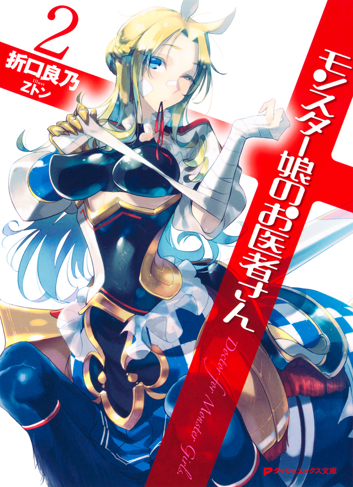
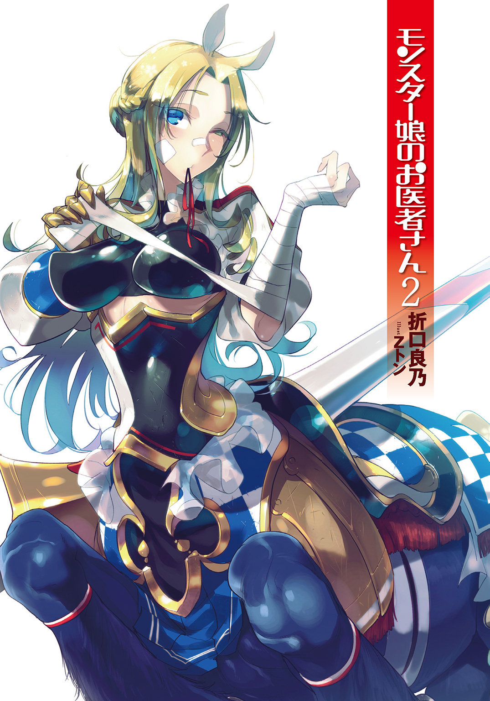
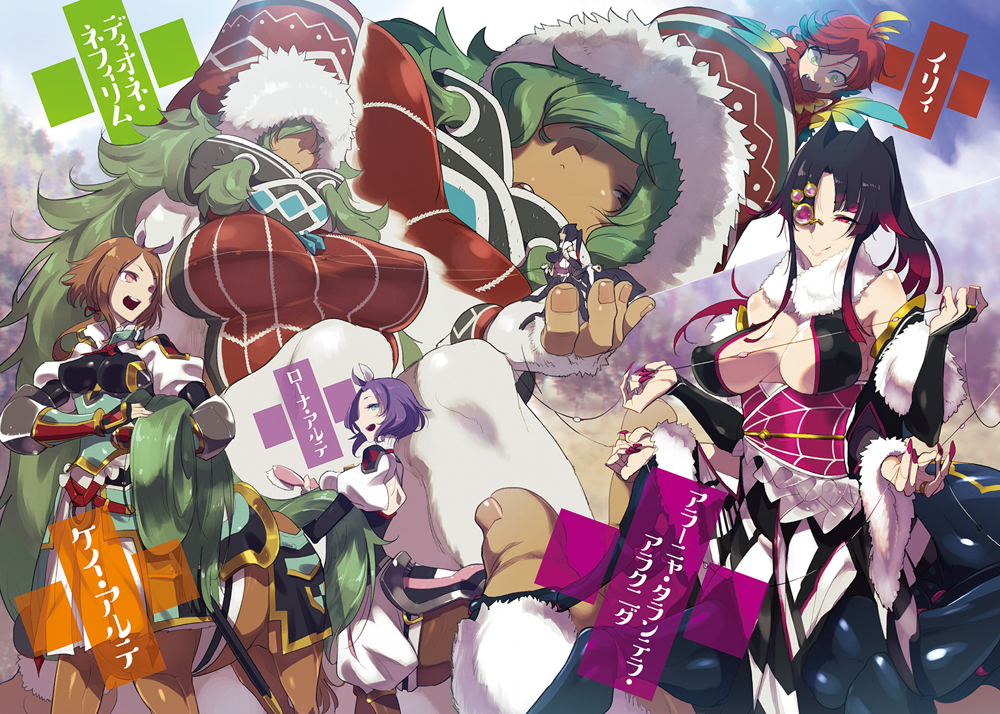
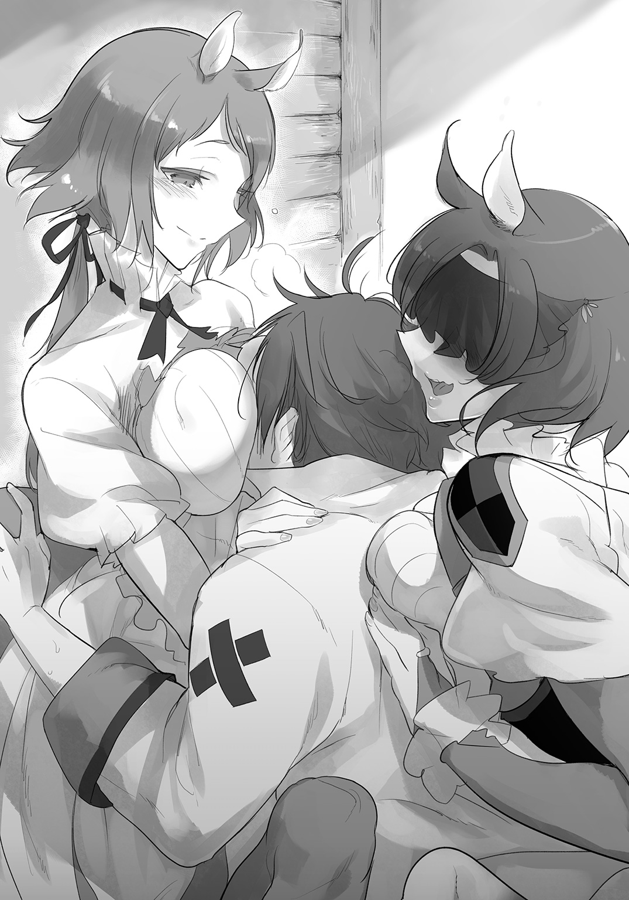
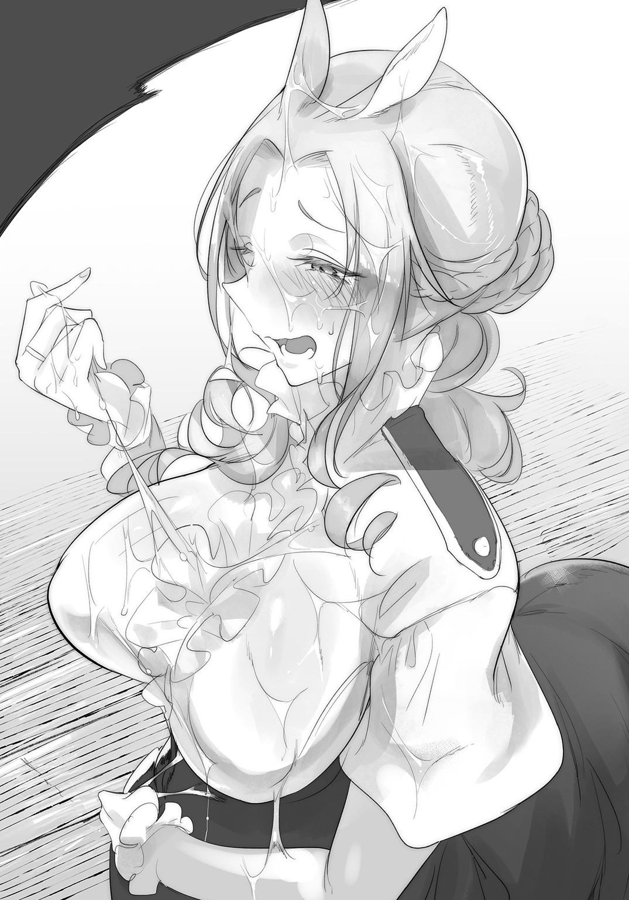
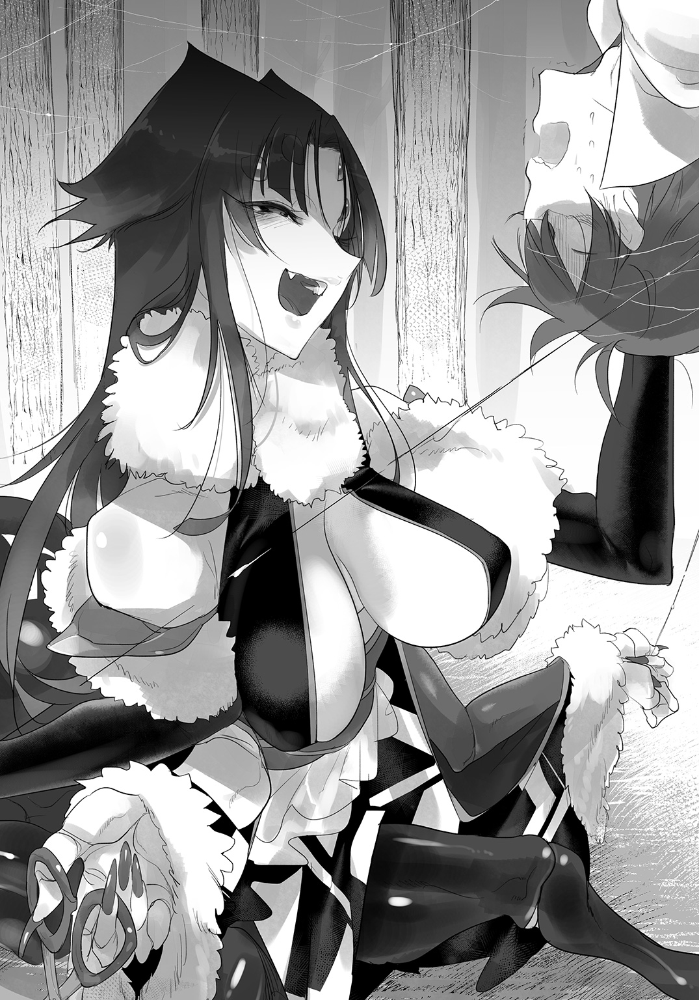
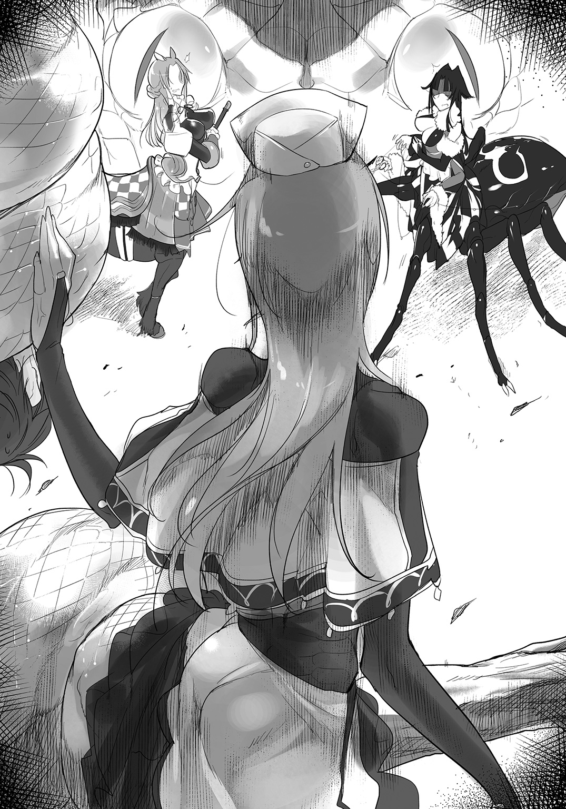
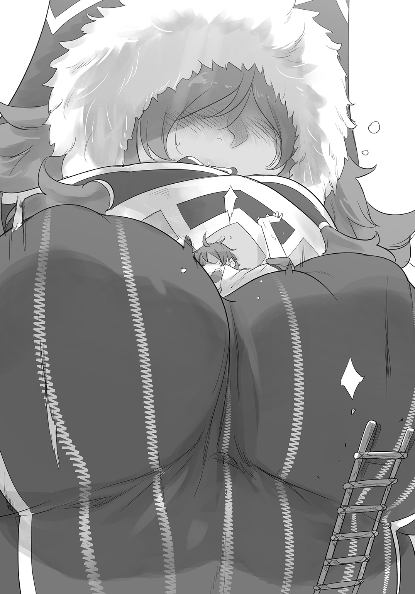

| モンスター娘のお医者さん 2 | |
| 折口良乃 | |

この本は縦書きでレイアウトされています。
また、ご覧になる機種により、表示の差が認められることがあります。


 ダッシュエックス文庫DIGITAL
ダッシュエックス文庫DIGITAL
モンスター娘のお医者さん２
折口 良乃
症例１ 捻挫のケンタウロス
勾配のある道であった。
リンド・ヴルムのように煉瓦で舗装された道ではない。人が長いこと行き交うことで踏みしめられてできた道だ。グレン・リトバイトは馬車に乗っているに過ぎないが、それでも激しく揺れる車内ではついつい身構え、体を強張らせる。
車内の座席が、羽毛を使った高級クッションであることが救いだった。長時間の山道移動でも苦にならない。
「お医者様、座り心地はどうかしら？」
「え、ええ......ありがとうございます。とても快適ですよ」
「噓おっしゃらないで。さすがにファーストクラスの車でも、この山道は......少しばかり厳しいものがありますわね」
グレンは車窓から外を覗く。
車を曳いているのはケンタウロスの女性だ。ティサリア・スキュテイアーは、その大柄な体を活かし、しっかりとした足取りで馬車を曳いていく。
傾斜のある道。しかも車に客人を乗せて運ぶのは、いかに鍛えているティサリアでも辛いのだろう。声には疲れがにじんでいた。
ティサリアの前には、彼女の従者であるケイとローナがいる。二人は枝を払い、小石を蹴り飛ばしてつつがなく馬車が進めるよう先導していた。雰囲気の似ている二人だが、グレンは最近、どうにか二人の区別がつくようになってきた。
「こんな高級車に乗せていただいて......」
「お医者様のためならば苦労は惜しみませんわー！ ......と見栄を張りたいところですけれど、実のところ、市街地用の車でこんな山道を行くとすぐ壊れてしまいますの。一番上等で、頑丈な車を用意しただけですのよ」
息を荒らげながらも、ティサリアは律儀に答えてくれる。
元々草原に暮らすケンタウロスだ。平地は得意でも、山道となるとその負担は並大抵ではないと思われた。
「それにスキュテイアー運送はどこでも安全確実迅速に、お客様をお運びいたしますわ！ ハーピーの里までもうすぐですから。お医者様、それにサーフェさん？ 今しばらく我慢なさってね」
「お世話になります」
サーフェが車内から労う。いつもはいがみあっている二人だが、さすがに汗だくになって車を運んでくれるティサリアには喧嘩は吹っかけないようだ。
グレンたちが進んでいるのは、ヴィヴル山脈の頂上へと向かう山道であった。
慣れた者であれば一日で往復できる道程だが、それは専用の装備と、訓練された人員あってこその話だ。山頂へ氷を取りにいく氷商たちは、こんな山道を駆けあがるように進んでいくというが――とても真似できるようなものではない。
大量の荷物――それも医療器具などかさばるものを馬車に積んでの移動では、時間はさらにかかる。
もっともグレンたちの目的地は山頂ではなく、途中にあるハーピーの里だった。それでも今日中にはたどり着くのだから、人馬の姫とその従者の疲れは相当なものだろう。里に着いたらゆっくり休んでほしい。
「しかし、あのタコ女の無茶振りもここまで来ると......怒りを通り越して呆れます」
「まあ、さすがに僕も驚いたよ。いきなりハーピーの里に出張診療しろ、だなんてさ」
サーフェは赤い目を伏せて、これ見よがしにため息をついた。
ヴィヴル山脈の中腹には、ハーピーの一族が里を作って暮らしている。
そこは魔族と人類間の戦争が始まる前から存在する、とても古い集落だ。比較的新しい街であるリンド・ヴルムは、ハーピーたちからすればよそ者が作った街に見えるかもしれない。
里のハーピーはたまにリンド・ヴルムまで飛んできては、街でしか買えないものを購入して里に持ち帰っている。一方、その時に山でしか獲れない獣肉、山菜などを街で売っていくこともある。持ちつ持たれつで仲良くやっているのだ。
「イリィ......でしたか。あの子の名前」
「まあ、あの時はドタバタしてたからね。名前まではっきり覚えてないけど......苦無さんはそう言ってた。卵塞で大変だったハーピーの子だね」
「身寄りなく、里に引き取られたと聞きましたが」
町医者グレンが、ハーピーの卵を巡る奴隷商の陰謀に巻き込まれたのは、二月ほど前のことである。
一介の医者に賊徒の鎮圧など無理な話だが、ティサリアやルララといった多くの者たちの助けもあって、無事に彼らに捕らえられていたハーピーを助けることができた。
乱闘に加勢することはできずとも、卵塞を起こしていたハーピーに処置を施し、無事に産卵させたのはグレンの手腕によるものだ。
グレンの師クトゥリフによれば――そのハーピー、イリィが今度は別の病で困っているらしい。
「クトゥリフ様によれば、羽毛が抜けるとのことでした。しかも飛べなくなるほどに羽毛が抜け落ちてしまうとか」
「本当だったら放っておけないよね。それに、どっちにせよ里には定期的に行かなきゃいけないんだ。クトゥリフ先生の指示がなくても、山登りはしたかもね」
ハーピーの里には、医者がいない。産婆を兼ねた薬師はいるらしいが、とても先進的な治療ができる人材ではない。
ハーピーの中には、治療を受けるためリンド・ヴルムまで飛んでくる者もいるが、それができない重病患者には、グレンやクトゥリフが直接里まで赴かねばならない。
今度の出張診療にはそうした事情もあったのだが――『スキュテイアー運送』の力を借りられたのは僥倖であった。
商会代表の一人娘、ティサリア・スキュテイアー自らが、グレンたちを運ぶと声をあげたのだ。ティサリアによれば『わたくしも里に用事がありましたの！ お医者様方を馬車に乗せるなどたやすいことですわ、おーほっほっほ！』とのことである。
ティサリアと、彼女の従者ケイ、ローナの馬力によって、グレンは山道をつつがなく進むことができた。
ここまで楽できた分、里に到着すれば仕事が待っているはずだ。イリィの他にも医者を必要としている者は多い――というか、医者が来たと聞けば、皆待ちかねたように日頃の不調を訴えるに違いない。
「お嬢様、やはり車を曳くのを代わりましょうか？」「ああ、お嬢様......そんなに汗をかかれて」
馬車の外では、そんな話をしていた。早朝に出発してから、車を曳いているのは一貫してティサリアであった。
「問題！ ありませんわっ！ ここで女を上げて！ お医者様に婿入りしてもらいますのよ！」
「志はご立派ですが......」「汗まみれで坂道を登って、はたして殿方が喜んでくださるでしょうか......」
ティサリアの見合い相手として目をつけられているグレンだが、もちろんグレンにはそんなつもりはない。見合いの話など受ければ、先ほどから蛇の視線で睨んでくるサーフェがどれほど怒ることか。
「あとひと踏ん張り......あら？」
車が止まる。
何事かと、グレンは顔を出すと、目の前の道を土砂が塞いでしまっていた。ティサリアは車の取っ手から手を離し、車輪を固定した。しばらくここで立ち往生するということだろう。
「ここまで順調でしたのに......仕方ありません。ケイ！ ローナ！」
「はいお嬢様」「しばし足止めですね」
優秀な二人の従者は馬車に積んだ荷物から、すでにスコップを取り出していた。幸い、土砂の量はさほどではない。全員で作業をすれば大して時間はかからないだろう。
「先日の里の地震のせいかしら？ ここのところ多いと聞きますわね」
「かもしれませんね。僕も手伝いますよ」
「そんな、お医者様は休んでいて......」
グレンも白衣を脱いで、土砂を取り除く作業に参加しようと車を降りようとするが――。
その瞬間、馬車が跳ねるかのように揺れた。
「っ！」
「地震！ お医者様伏せて！」
言われるまでもなく、グレンはすでに車内で身をかがめていた。馬車は『スキュテイアー運送』の高級品だ。そうそう壊れることはあるまい――と思うが、車体ごと跳ねるような地震では安心することはできない。
対面のサーフェもまた、姿勢を低くしている。まるで唸るような地響きとともに、馬車はがたがたと激しく揺れた。馬車の外からも悲鳴が上がる。ケイか、ローナか。
「大きい......ッ！」
サーフェが呻いた。
この辺りの人間は地震に慣れていない。グレンの故郷は地震の多い地域だったが、それでも緊張してしまうような揺れだった。馬車の外のティサリアたちは無事だろうか。いかに四本足を持つケンタウロスといえども、この揺れでは立っていられないのではないか。
馬車がひっくり返らないこと。そして山の土砂崩れが起きないことを願いつつ、グレンは揺れが収まるのを待つ。
すぐに、揺れも地鳴りも鎮まった。
「終わった......かな？」
妙な地震だ。
一度大きく揺れただけで、あとは唸るような地響きだけ。これはもっと大きい揺れの前震ではないのか。
そうでないことを祈りつつ、グレンはすぐに馬車の外に出た。
「ティサリアさん！ 無事ですか！」
「え、ええ......わたくしは」
外では、ティサリアが地に伏せていた。
すぐ傍にはケイとローナもいる。特にケイのほうは、ティサリアに抱きつくようにして横になっていた。
「転びそうになりましたけれど、二人がかばってくれましたわ......」
ティサリアは、安堵のため息とともに立ち上がる。次いで、ローナのほうもすぐ身を起こした。
「......ケイ？」
相方のローナが、眉をひそめる。
残るケイは、倒れたまま。前足から立ち上がろうとするが、すぐに生まれたての小鹿のようによろけてしまう。
「痛ッ」
「ちょっと、ケイ？」
立ち上がれない。
グレンは素早くケイに駆け寄った。栗毛の毛並みが美しい彼女の足だが、力を入れることができないようだった。グレンは一瞬で見抜く。
「ケイさん、足をくじきましたね」
グレンがそう言うと、ケイは困ったように微笑んだ。動けないので、どうしていいかわからないのかもしれない。
「お医者様、ケイは......」
「捻挫、あるいは骨折かもしれません」
ティサリアをかばったとき、足に無理な負荷がかかってしまったのだろう。捻っているだけならまだいいが、骨が折れていれば回復も容易ではない。
「できれば安静にしてほしいところですが......」
山道のど真ん中。しかも進むべき道は土砂に塞がれている。応急処置程度なら可能だが、きちんとした診察をするには、ハーピーの里まで行くしかない。
「ケイさん、歩けますか」
「無論です、お医者様、これしきのこと......いっっ！」
立ち上がろうとするケイだったが、すぐに痛みに顔を歪めてしまう。強がってはいるが、とても歩ける様子ではない。
「ケイさんを馬車に乗せて......僕とサーフェは歩きますから」
「ああ、ケイ、わたくしのせいで......」
「大丈夫。ティサリアさんは悪くないです」
「ですが......」
ティサリアがらしくもなくおろおろとしている。さすがに付き合いの長い女従が怪我をしたとなれば、平静ではいられないらしい。
ハーピーの里まであと少しではあるのだ。なんとかケイを無事に運べればいいが。
「いたぞ！ こちらだ！」
「えっ」
その時だった。
声が、降ってくる。グレンが空を見上げると、そこには大きな翼が見えた。
「お医者様を見つけたぞ！」
男の声だ。翼はそのまま急降下し、グレンの目の前に立った。
黒褐色の翼を持つ、ハーピー族の男であった。彼を先鋒として、何人ものハーピーたちが降り立ってくる。上空を旋回していたのだろうか。ハーピーたちは男女混じっているが、皆若い。
最初に降りてきた男性が、深く礼をした。
「お迎えにあがりました、グレン医師。また『スキュテイアー運送』の皆様方」
「む、迎えですか？」
「は。この道が先日の土砂崩れのせいで通れぬため、難儀しているだろうと。長老の命により、里の若者どもを連れて参りました。ご案内いたします」
「それは......助かります」
願ってもないことだ。
「さっきの地震のせいで、怪我人が出てしまいました。彼女だけでも先に里に運べませんか」
「お安い御用でございます！ おい！」
それからは早かった。
ハーピーたちは、あらかじめ用意していた大きめの麻布でもって、即席の布担架を作り上げてしまった。
ハーピーは腕が鳥の翼のようになっている種族だ。人間と同じ五本指があるわけではないので、手先が不器用だと思っていたが――それはグレンの勘違いらしい。ハーピーたちは、翼を折り曲げて布をひっかけ、時には口を使い、麻布を担架に仕上げていく。五指が使えないぶん、口で器用に結び目を作っていく。
ティサリアとローナが、持ち前の膂力でもって、ケイを担架に乗せる。そのまま、ハーピーたちは布の端を自分たちの足に括りつけ、羽ばたきだす。
すぐにハーピーたちは、ケイを樹上よりも高く運んでしまった。
「三人がかりで飛んでいるとはいえ......ケンタウロスをあの高さまで」
「空は我々のものです。このくらいは造作もないこと」
ハーピーの男は自信ありげに笑う。
「さあ、土砂を除けましょう。皆、気合いを入れよ！ お医者様の道中、事故の一つもあってはならぬぞ！」
おう！ と応えたハーピーたちが、一斉に土砂を除く作業に取りかかり始めた。その動きは統率され、一糸の乱れもない。過酷な山の環境で、一つになって生活しているからこそ、この連携が生まれるのだろう。
それは、大陸の各地から人や魔族が集まる都市リンド・ヴルムにはないものかもしれない。種族の坩堝であるからこそ、意外と都市に住む者たちはバラバラだし、その隙間に奴隷商のようなよからぬ輩も入りこむ。
「期待されていますね、グレン先生？」
いつの間にか馬車を降りていたサーフェが、グレンにそう囁く。
「ハーピーの皆様の頑張りよう......先生の腕前を見込まれているのですよ」
「わ、わかってるよ」
「着いたら大変そうですね」
サーフェがくすくすと笑った。忙しいのはリンド・ヴルムでも同じだが、ここまで期待されているとなると確かに後が怖い。どれほど患者が待っているのか。
「サーフェも働くんだからね」
「もちろんです」
余裕の表情で頷くサーフェ。
グレンはとりあえず、頭を搔いて、上着を脱いだ。ハーピーたちにばかり任せておくわけにはいかない。グレンもスコップを握って、土砂を除く作業に参加するのだった。
「ケイ......」
ティサリアは、まだ空を見ていた。怪我をしたケイが運ばれていった方向だ。
女従想いの、とても良い主だな、とグレンは思った。
ハーピーの里は、山道の中腹にある。
山頂に降り積もった雪はやがて溶けだし、川を作り出す。これが街まで流れ、有名な『メロウ水路街』を作っているのだが――山の中においても、川のそばに集落ができるのは自然なことのようだった。
その里は、開けた山間にある。
川の流れが、長い年月をかけて岩肌を削り取ったのだろう。左右は切り立った崖であり、とても上ることはできない。地上を山頂へと向かうならば、川沿いに緩やかな道を行くしかないだろう。
そんな崖に挟まれた谷底に、ハーピーの里はある。
「ようこそおいでくださいました」
ひげを長く伸ばした老ハーピーが、杖をついてグレンを出迎えた。里長とのことだ。
すでに両腕の翼は力なく垂れており、まるでローブの袖のように見える。道中を案内してくれた若者たちのように、自在に空を飛ぶ力はすでに失われているようだった。老いたハーピーにはよくあることだ。
しかし皺の奥に見える眼光はワシのように鋭く、里のハーピーたちをまとめる貫禄を垣間見せていた。
「お連れ様が怪我をなされたとか」
「はい。彼女はどこに？」
「里の離れ、お客様のための建屋のほうです。お医者様が来ると聞いて、仮の住まいとして用意しておりますゆえ。道具を運べばすぐにでも診療を始められます」
それは助かる。
グレンが里に来るのも初めてではないし、里の長老も、医者がやってきた時のことは心得ていた。医者のいない里だからこそ、有能な魔族医師であるグレンをこのように丁重に出迎えてくれる。師であるクトゥリフならば更なる歓待が待っていることだろう。
「里はリンド・ヴルムの街並みのような石造りではございませぬので、住まいも寝床も勝手が違いましょうが、なにとぞご勘弁を」
「とんでもない。充分すぎるくらいです」
グレンが見る限り、里の住居はそのほとんどが木で作られており、屋根も茅葺きや藁葺きであった。リンド・ヴルムでは考えられないことだが、石造りでない理由は、高い岸壁を見ればわかる。
崖に張り付くように、いくつも小屋が作られていた。
ちょっとした崖の出っ張りを礎石として、木造の家を築いている。崖に作られた小屋では、ハーピーたちが頻繁に出入りしているが、翼を持たない者には入ることもできないだろう。崖に築かれたこの里は、空を飛ぶ者のための里なのだ。
ふと、グレンは隣のサーフェを見る。
彼女はいつものように澄ました表情だが、両手で肩を抱いていた。山頂から冷たい風の吹きこむこの里は、寒さに弱い彼女には少し辛いかもしれない。診療所も木造であるならば、リンドより寒いことが予想される。
グレンは白衣を脱いで、なにも言わずサーフェの肩にかけた。
「先生？」
「いいから、着てて」
サーフェはなにも言わなかったが、わずかに微笑んで白衣を抱く。
「それでは、僕たちはケイさんを診てきます。ティサリアさんは？」
「わたくしは、長老とお話がありますの――商売のお話ですから」
言外に内密の話だと告げていた。
ティサリアが長老と目配せをする。長老も深く頷いているところを見ると、前々から二人の間になにかしらの交渉があったのかもしれない。
「ローナ。お医者様についていって。ケイも心配だし」
「承知しましたお嬢様」
彼女がいれば心強い。ローナはなにも言わず、グレンを先導するように歩き出す。この様子からすると、ローナもまた、里には何度も来たことがあるのかもしれない。
崖に建っている住まいは、ハーピーたちのもの。
では、崖ではなく谷の底に建っている住居はというと、それは子供、年寄り、あるいは病気のために飛べなくなったハーピーたちの住まいである。
さらに、客人――翼をもたぬ種族を迎えるための家屋もある。
ローナについて進んでいくと、やがてそれが見えてきた。グレンたちが乗ってきた馬車が、一つの小屋の前に停められている。木造だが、太く頑丈そうな柱が使われており、茅葺きも丁寧な家屋だ。石造りに勝るとも劣らない立派な建屋である。
里に滞在する間は、この建屋を診療所として使い、また寝泊まりしろということだろう。
「お邪魔します」
グレンらは建屋の中に入る。
すでにグレンが診療所から連れてきた妖精たちが、あちらこちらで道具の整理をしてくれている。働き者の手伝い妖精に、診療具の片づけという雑事を任せられるのはありがたい。グレンが患者を診ることに専念できる。
建屋は広く、寝室、簡単なキッチンまであった。生活には困りそうにない。また、患者のためにベッドもいくつか用意してある。至れり尽くせりであった。
これだけの家があって、里に医者がいないというのは由々しきことだ――住居も設備もそろっていても、ハーピーたちを診れる者がいない。
「ここで暮らしてもいいかもしれませんね、グレン先生......二人でひっそりと、そう、クトゥリフ様にも邪魔をされることなく......」
「リンドにも患者さんが待っているからね、そういうわけにはいかないよ」
「わかっています」
拗ねるように唇をとがらせるサーフェ。
リンド・ヴルムの診療所は現在、休診の札をかけている。
常連の患者にはグレンが出張中は、リンド・ヴルム中央病院に行ってほしい旨を伝えてある。中央病院の院長はグレンの師匠クトゥリフだし、留守の間は任せてもいいだろう。
ケイが寝ていたのは、入院患者のための部屋だ。
ただしベッドではない。彼女の体格では普通のベッドでは小さすぎるようで、藁を敷いた上に横になっていた。
「ケイ、調子はどう？」
ローナが声をかける。彼女は相方であるケイが怪我してからも、顔色一つ変えることなくグレンたちに同行していた。
「ただ挫いただけ。心配することはないわ」
「いや。ケンタウロスの体重を考えれば、転倒は足に相当の負担がかかりますし、骨折も十分あり得ます。甘く見てはいけません」
「お医者様ったら大げさなんですから......痛っ」
からっとした笑顔で笑うが、やはり足が痛むらしく眉を歪めたケイだ。
彼女の容体次第では、出張診療の期間はもっと延びるかもしれない。足が悪いままで山を下りることはできないし、ケイだけ里に置いてはいけない。グレンの出張診療は、その始まりから前途多難そうであった。
「じゃあ早速、お仕事開始ですね。グレン先生」
「そうだね」
ケイの足に優しく触れるグレン。やはり球節――膝と蹄の間にあるもう一つの関節部に、熱さが感じられた。ここが患部だろう。
「では――診察を始めます」
ケイの骨に、異常はなかった。
球節と呼ばれる関節に腫れと熱感が見られ、ケイ自身も痛みを感じているようだったが、一方で動かすには支障がない。骨折の心配はないと思われた。
「少し動かしますよ」
「ええ......あ、お医者様、優しく」
「もちろんです」
関節部に、ゆっくりと負荷をかけていく。彼女の足は艶やかな栗毛で覆われており、いつまでも撫でていたくなるような毛並みであった。足先まで丁寧にブラッシングしているのだろう。
右、左と徐々に捻りを加えていく。
「あぐっ......っ！」
「ここですね。やはり捻挫です。外側に足を捻っていますね」
「ひっ、ぎっ」
「靭帯に影響はなさそうですね。関節だけでしょう」
「お、お医者様......！ も、もうその辺で......！」
「あ、ああ、すみませんっ」
ケイに止められ、慌ててグレンは手を離した。
捻挫とはいえ、痛がり方が少々過剰だ。よほど強く捻ってしまったのだろう。骨折しなかったのが不幸中の幸いかもしれない。
きりっとした表情はそのままだが、ケイはだいぶ無理をしているのではないかと思われた。
「このレベルの捻挫では絶対安静です」
「ほ、骨が折れてなければ歩けます......あ、痛っ！」
「ほら、言っている傍から」
その後は、グレンとサーフェ、そしてローナまでも加わって、彼女に静養を勧めた。無理に歩いては治りが遅くなる。逆に安静にしていれば、湿布と痛み止めで処置は十分だ。
半月ほどで完治するだろうと診断した。
「幸い、里には温泉が湧いているそうです」
ケイの前足に湿布を貼り、無理に力がかからないよう包帯を巻いて、グレンはそう告げる。
ケイは足を持ち上げて、されるがままである。スカートを軽く持ち上げているので、見る人が見れば妙な誤解を――いやいや、あくまで診察である。なにも問題はないはずであった。
「温泉に入ればさらに早く治るはずです。ゆっくり静養してください」
「ケイがいない間は――」
ローナが意味深に笑う。
「私がお嬢様のお世話をしますから」
自信満々に頷いた相棒に、ケイはようやく安心したのだろう。
「では、休暇とでも思ってゆっくりしましょう――失敗しないようにね、ローナ」
「もちろん、私に任せなさい、ケイ」
ローナは胸に手を当てて、自信ありげに微笑むのであった。
そうして、ケイは診療所の隅で、藁に包まれて眠ることになった。
出張診療の一人目から入院患者である。できればしっかりと気を配ってあげたいグレンだったが、ケイばかりを診るわけにもいかないのだった。里には治療を待つハーピーたちがたくさんいるのだ。
いつ破水が起きてもおかしくない臨月の妊婦。里の近くを飛行中に墜落、右腕を折ってしまった若者。腰を痛めた老婆に、流行りの風邪をもらってしまった子供。一日目にして次々と患者たちがやってくる。
目が回りそうな忙しさだ。
「大人気ですね、先生」
サーフェが冗談めかして耳打ちしてくる。
覚悟していたとはいえ、想像以上だった。グレンは怪我した者には処置を行い、病の者には薬を処方して、仕事をこなしていく。
忙しいのはサーフェも同じだ。患者にあれやこれやと様々な薬を作らねばならないのだが、彼女は右手でカルテを書き、左手で薬草を選びながら、尻尾ですり鉢を扱うといった複数の仕事を同時にこなしていた。鼻歌混じりに薬を作り上げてしまう。
おまけに雑用係である妖精たちの指揮も上手いので、グレンの何倍も効率がいい。患者の案内から会計までも彼女の領分だ。
妖精たちは別として、たった二人で診療所を切り盛りできているのは、ほとんどサーフェの有能さのおかげである。
さらに、里中に広まった医者来訪の噂は、患者ではない客も呼び寄せた。
「せんせー！」
「あっ、先生だ！ こんにちはー！」
夕刻になって押しかけてきたのは、ハーピーの少女たち。
グレンには見覚えがあった。皆、あの水路街で奴隷商に捕らわれていたハーピーたちだ。あそこにいた者のうち、行き場のない者は里に引き取られたという。あの時は顔色を悪くし、恐怖に震えていた娘たちも、今では里の一員として元気な笑顔を見せてくれた。
きゃっきゃと甲高い声が診療所に響く。元々、ハーピーたちの声は遠くまで響く上に、少々高めである。
娘たちの羽毛は、艶々と色づいていた。捕らわれていた時と比べるまでもなく、彼女たちは健康体のようだった。
「――大人気ですね？ 先生？」
代わるがわるハーピーの娘たちに挨拶に来られると、今度はサーフェの機嫌がよろしくないのだった。
青筋を立てるサーフェをなだめて、グレンの一日目の診療は終了することとなる。
言うまでもなく――疲れた。長旅から休む間もなく診療に移ったせいもある。
サーフェなどは旅の疲れを見せることもなく、精力的に働いている。グレンも見習わなくてはと思うものの、疲労感はどうにもぬぐえなかった。
「一日目ですから」
などとサーフェは言う。
「最初は辛くとも、徐々に落ち着きます。そうすればお休みもとれますよ」
「だと良いけどね......」
予想外の患者などよくある――というより、急患にしっかり対応してこその医者だ。病は時も場所も選んではくれない。
落ち着いてきたか、と思ったときに限って患者は来るものだ。そういう心構えでいなければ魔族を助けることなどできはしない。
改めて、気を引き締めるグレンなのだった。
里に来てから、数日が経った。
サーフェの言う通り、徐々に患者の足は控えめになってきた。グレンが一息つけるタイミングも増えてきた。しかし、だからといってグレンがゆっくり休息をとる――などということはない。
彼に自覚はなくとも、グレンは生粋の仕事中毒である。
仮の診療所に来る患者が減れば、彼は自力で歩けない患者がどこかにいると考える。そういう性格だ。
そんなわけで、グレンらがハーピーの里に馴染むほどに、グレンは自前の医療バッグを抱えて里のあちらこちらに出向くようになった。これはもはや彼の性であり、誰が止めても止められぬ過剰気味の働き方であった。
一方、診療所に残るのはサーフェである。
外出のあまりできないサーフェは、診療所で患者を診ていた。彼女も一通りの医術の心得がある上に、グレンが留守の間に診療所を切り盛りすることには慣れている。里の診療所でも妖精たちと共に、すぐさま留守居役となってしまった。
街にいた時と同じように、グレンは里を駆け巡っては、ハーピーの皆の健康が損なわれていないか確認していく。
彼が気がかりだったのは、そもそも彼が里に来ることになった理由――羽毛が抜けてしまい、飛ぶこともできなくなったというハーピー、イリィのことだった。グレンは何度もイリィに会おうとしたのだが、当の本人が気落ちしてしまい、グレンに会いたくないと言っているらしい。
医者にも見られたくないならば、よほど酷い体調なのか――と思ってしまうグレンだ。里長は何度もイリィを説得し、医者にかかるように言っているらしいが、当の本人は会うのは嫌だの一点張りだと聞いている。
そのうち、彼女を診ることができればいいが――それまでグレンは、里の診療で駆けずり回ることしかできないのである。
駆けずり回るといえば、ティサリアも同様であった。
彼女は里のあちこちで見かけられる。彼女にも『スキュテイアー商会』の一員として、なにかしらの仕事があるのだろうが――長老と話したり、里の主だった面々と顔を合わせたり、かと思えば断崖にあるハーピーたちの小屋をじっと見つめたりしている。
仕事熱心という意味でも、ティサリアはグレンと同じだ。
グレンが心配しているのは、仕事で里を回っているティサリアではなく――彼女の従者の片割れであった。
「ローナさん？」
グレンは、里で一人で立っているローナに声をかけた。
「あら、これはお医者様......」
「どうかしましたか。お一人で」
グレンの知る限り、ローナが一人でいることはない。
大抵は主であるティサリアに同道しているか、ケイと共に行動するか、はたまたその両方である。里でぽつんと立っているのに違和感を覚えたグレンは、彼女に声をかけてみた。
「いえ、一人ではありません。お嬢様と一緒で」
「見当たりませんが」
「ちょっとはぐれてしまいまして......お嬢様ったら、成長してもまだ子供みたいなところがあるものですから」
くすくす笑うローナ。その仕草は淑やかであり、それだけ見ればなにもおかしい点などなさそうだが――。
実は、ハーピーの里は、狭い。迷うなど考えられないほどに。
もちろん、崖に張り付いたような小屋は数多くあり、多くのハーピーたちが行き交う。今、グレンの頭上でも、一人のハーピーが飛んで行った。崖から崖へと、滑空していく。風切り音まで聞こえてきそうだ。
その様子は活気に満ちている。だが、それはあくまで両端の崖と、その間を行き来できるハーピーにとっての話だ。
地上はそうではない。飛べないもののために、谷底に作られた住居はせいぜい二十ほど。両端を崖に挟まれた谷底の領域は、そもそも迷うほどの広さがないのだ。
いつもティサリアの後ろにぴったりと控えているローナが、主とはぐれることなどあり得るだろうか。
「ケイの様子はいかがです？」
グレンの戸惑いも気にせず、ローナはそう聞いてきた。
「え......っと、特に問題はありません。仮の診療所で寝たり、本を読んでいらっしゃいますよ。サーフェと付き添って温泉にも行きましたが、温泉が効いているようです」
「そう......」
ケイは怪我人らしく、大人しくしている。
いや、まあ――たまに剣を振りたいなどと武人らしい言葉を口にするのだが、それだってたまにだ。ゆっくり休むことが怪我を治す最良の方法であることを、ケイはよくわかっているようだった。
「不躾な質問かもしれませんが」
グレンはいい機会と思い、以前から気になっていたことを尋ねることにした。
「ケイさんとローナさんは、どういうご関係なのですか？ 姉妹......ではないですよね」
「あら、気になります？ お医者様ったら」
ローナはやはり意味深に笑う。妖艶な佇まいは、潑剌たる雰囲気のケイにはないものだ。
「私たちは、戦災孤児」
「戦災......ですか」
「ええ。長く傭兵稼業を続けていたケンタウロス族には、親を亡くした子を引き取る文化がございます。ただ引き取るのではなく、従者として、兵士として育成するのですわ。ケンタウロスが戦争屋などと呼ばれても、血をつないできた理由の一つです」
グレンにはわからない世界だが、ケンタウロスたちは戦で死ぬことを尊ぶ風潮があるという。戦での死者も無論多く――ならば親を亡くした子がいても不思議はない。孤児を特定の一族で育てていくことは、必然的に生まれる文化なのかもしれない。
親のない子供を皆で育てるということか。しかし従者として引き取るのは何故だろう？ ――跡継ぎ問題が絡むからか、と思い当たり納得した。
「スキュテイアーという高名な一族に引き取られた以上、お嬢様のために仕えるのが、孤児であった私とケイの生きる意味です」
ローナの瞳は迷いのないものだった。
一直線に奔る矢のような鋭さを、その瞳から感じた。メイドであり、護衛である彼女の凄味を垣間見た気がした。
「直接育ててくれたのは、今、『スキュテイアー商会』の執事をしている方です。養父に当たりますので、私とケイはその方の姓を頂いております。私の名前は、ローナ・アルテ」
「そう、でしたか」
「先に引き取られたケイ・アルテが姉になりますが......あまり姉と思ったことはないですね。なにしろケイのほうがやんちゃでして」
おっとりとしていて、どこか神秘的な雰囲気のローナ。
あっさりとしていて、どこか達観した感覚を持つケイ。
この二人はうまくバランスがとれていて、だからこそティサリアも二人を信頼し、二人もまた主であるティサリアを大事に思っているのかもしれない。
では――今は。
ローナの傍に、ケイがいない。それは調和の取れていたバランスが崩れてしまうような出来事ではないだろうか。ローナは口調こそ普段と変わらないのだが、やはりどこか浮ついているような気がする。
「ローナ！」
グレンの背後から蹄の音。
慌てた様子のティサリアが、駆けてくるところだった。
「ローナ！ こんなところでなにをしてますの！ ......あら、お医者様？」
「今しがた、お医者様からケイの容体を聞いていました。お嬢様こそどこで迷子になられて？」
「迷子になったのは貴女でしょう！ 目を離した隙にふらふらと！」
「......あら？」
ローナは、なんのことかと首を傾げた。
ティサリアはどうしたものかというように頭を抱えている。ローナは主が何故そんな風にするのかわからないらしく、ますますぽかんとするばかり。
グレンは思った。
これはひょっとすると、想像以上に深刻な事態なのではないか――と。
「ローナがおかしい！ ですわ！」
ティサリアが、グレンたちの借屋にやってきたのは、その日の夜のことだった。
「まったく！ なんでこんなことに！ どうかしていますわ......んぐもぐ」
「怒るか食べるかどちらかにしたら如何ですか」
「怒っていませんわよ！」
サーフェの冷静な言葉に、ティサリアは反駁する。怒っているというよりも――感情のやり場をどうするべきか悩んでいる、という風だった。
グレンは困った顔で、向かいの席に着くティサリアを眺めた。
彼女は休診の札をかけた頃を見計らって、やってきた。用件を聞く前に彼女の腹が大きく鳴ってしまったので、ともかくも食事にしようと提案したのだが――やはり腹を空かせていたらしく、人馬姫はサーフェの用意してくれたサラダを一心不乱にかきこんでいる。
ケンタウロス族は大食いだ。
といっても、彼らは菜食であり、野菜以外は口にしない。しかし、ケンタウロスの高代謝で活動的な肉体を維持するためには、野菜では栄養効率が悪い。
その結果、彼らは大量に食べることになる。リンド・ヴルムにある大農園『アルルーナ農園』でも、得意先のほとんどはケンタウロスだという。菜食の魔族にはままあることだが、とにかく彼らは概して健啖家である。
大皿一杯に盛られたサラダを、ティサリアはあっさりと平らげた。調味料はドレッシングのみ。雑食の人間やラミアからすれば共感しづらい食性だ。
「とても美味しい。サーフェさん、お料理上手ですわね」
「これでもグレン先生の食事も毎日作っていますからね。先生は一人だとすぐ食べるものに手を抜くので」
自慢げに胸を張るサーフェだったが、グレンだってサラダくらいなら材料を切るだけなので作ることができる。そこまで偉そうに言うようなことではない。
「むう......わたくしも料理修業すべきかしら......」
「そんなことより」
サーフェが苛立ったように、ティサリアに鋭い目を向ける。
「用件はなんですか？ まさか本当に夕飯を食べにきただけではないでしょう？」
「いえ、夕飯のお世話になろうと来たのですわ」
正直なティサリアはおかわりとばかりに皿を差し出した。サーフェの眉が痙攣しているのをグレンは見逃さない。
「というのもですね......食事が、おかしくて」
サーフェが無言で、それでもひとまず盛ってくれたサラダを受け取り、ティサリアは食事を再開した。やはりケンタウロスの食事量は尋常ではない。
「おかしいというのは？」
「ローナが作ってくれるのですけれど......調味料を間違えるわ、わたくしが食べてる時もなんだか上の空だわ、挙句の果てに包丁で指を切る始末。絵に描いたようなドジばかりで」
「それは......本当ですか？」
普段のローナからは想像もつかない。
が――一方で、昼間のことを思い出せばさもありなんというような気がした。迷うはずもないハーピーの里で一人ぼけっとしていたローナの姿。あとでティサリアから叱責されていたことを考えても、迷っていたのはローナのほうだ。
二皿目のサラダも綺麗に平らげてから、ティサリアは手巾で口元を拭う。
「正直！ こちらに来てからちゃんとした食事をとっていませんのよ！ サーフェさんのお料理美味しい......美味しいですわ......！」
「生野菜にドレッシングかけただけなのですが......」
しかし美味しいと連呼されて悪い気はしないらしく、サーフェの尻尾がゆらゆら揺れていた。機嫌のいい証拠であった。こう見えて案外、サーフェも与しやすいところがある。家事を褒める、というのはその最たるものだった。
感涙でもしそうな勢いのティサリアだったが、しかしすぐに緩んだ表情を引き締めてグレンに向き直る。
「ともかく、ローナがヘンなのは明白！ このままでは食事もままなりませんわ」
「まあ、それは......」
「おまけに着替えの際も服を間違えるわ！ 里長との商談の時も的外れなことを言いだすわ、仕事がまるで進みませんのよ！ ローナ、一体どうしてしまったのかしら」
「商談ですか。そういえば、里長とはどんな話を？」
よくぞ聞いてくれたとばかりに、ティサリアは身を反らした。ふくよかな胸がこれ見よがしに揺れる。
「ええ。それこそ、わたくしがここまでやってきた理由で――実は『スキュテイアー運送』にて、ハーピーと提携した空輸部門を設立しよう、という話が持ち上がってますの」
「空輸、ですか」
「飛行能力に優れたハーピーたちの力を借りて、速達、伝令に特化した部門を作れば、さらなる収益が見込めるのですわ」
「なるほど......」
思わず感心するグレン。名案かもしれない。
ケンタウロスたちは車を曳くことによって、人を乗せたり、大量の荷物を運んでいる。が、それではどうしても小回りが利かない。小さな荷物を早く運びたいときに、いちいち車に乗せて運んでいてはむしろ効率が悪い。
そこでハーピーたちだ。空を飛べば道の制約にとらわれることもなく、気軽に短時間での運送が可能になる。空を飛ぶため、重いものを運ぶのは難しいだろうが、逆に軽い手紙や小包などは迅速に運べる。
グレンはすぐに、これが自分の診療所にどう影響するか考えた。
たとえば、急患の報せを迅速に受け取り、現場に急行することができる。また手紙のやり取りならば、ハーピーの里のような医者のいない集落にも所見を送ったり、薬のみを届けることができるだろう。医療にとっても悪い話ではない。
「安さと速さに特化した運送空輸部門。その実現のために里長とお話をして、ウチで働きたいというハーピーさんを雇い入れることができるかどうか、交渉中なのですわ」
「なるほど。良いお話だと思います」
「元々、『スキュテイアー運送』は、一族経営の色が濃くて。ケンタウロス以外の従業員を使うことに反対する声も多いのですけれど......そこはわたくしが抑えてきました。ここで成果を上げれば、反対派も黙って認めてくださると思いますわ」
そうした内情もあって、代表の一人娘がわざわざ出向き、商談を進めているのだ。ならば『スキュテイアー商会』も相当に本気であるのだろう。ティサリアはもう既に、かなり深い部分まで経営に関わっているのだ。
ティサリアの肩に、責任感と重圧が乗っているのが見えるような気がした。
「大事な商談なんですの！ なのに！ ケイが怪我をしてしまって、ローナもなんだか様子がおかしくて！ お医者様、ローナも診ていただけませんか！」
「診察......ということですか？」
ケイの捻挫は当然、グレンの専門だ。
だがローナのそれは病気でも怪我でもない。精神的なものだろう。
「おそらくローナさんは、相棒のケイさんがいないせいで上の空になっている......というかおそらくケイさんの怪我を心配していらっしゃる......んですよね」
「十中八九、そうかと思われますわ」
「ではケイさんの捻挫が治るまで待つしかないかと......」
捻挫は軽く見られがちだが、意外と厄介な怪我である。
人間でも魔族でも、自分の体の感覚というのは、実は自分が思っている以上に朧げなものだ。捻挫の痛みが引き、治ったと思って今までのように活動すると、思わぬところで感覚を失い転倒――また捻挫してしまうということもある。
経過をじっくりと見て、完治したかどうかを判断するのが医者の仕事である。治ったと素人判断を下すのが一番よくない。
「それではわたくしが参ってしまいますわー！ ケイとローナが仕事をしてくれないとわたくしが耐えられませんの！ 従者のいない生活なんて無理ですわー！」
「従者くらいなんとでもなるでしょう」
「とんでもありませんわ！ 今まで髪を結ぶのも、着替えをするのも、ケイかローナがやってくれていたんですのよ！」
「一人でやりなさい」
お嬢様なティサリアの発言に、サーフェがぴしゃりと言い放つ。
冷たいのではなく、実際に医者としてできることと、できないことがあるのだ。相方を心配して上の空なケンタウロスに、一体どんなことができるというのか。せいぜい、声をかけつつ見守るくらいではないのか。
かといって、ケイの捻挫を早く治す方法もない。温泉にでも浸かりつつ安静にしているのが一番だが、ケイは今のところそれを実践しているのだ。
「ならば、仕方ありませんわ――――」
ごとり、とティサリアがなにかを机の上に置いた。瓶である。
瓶にはラベルが貼り付けられ、大輪のバラの紋章が描かれていた。この紋章はグレンにも見覚えがあった。こんなものを一体どこに隠し持っていたのか。
「これでいかがかしら！ 我が商会のとっておき！ 『アルルーナ農園』産のブドウを使った最高級の白ワイン！ 年に十本しか作られない特別ヴィンテージもの！ 差し上げますわ！」
「是非やりましょう。いいえやらせてください！」
酒に目のくらんだサーフェが即答した。
「サーフェ。ちょっと......！」
「アルルーナ印の白ワイン！ 一生に一度飲めるか飲めないかです！ これを逃す手はありません！」
ティサリアも、打たれ弱いようでなかなか強かである。サーフェに頼みごとをするための秘策としてこの白ワインをわざわざ持ってきたのだろう。さすが商会代表の一人娘、交渉事はサーフェより上手のようだ。
だが、グレンは冷静だった。
酒をもらおうがもらうまいが、ローナに対しできる処置がないことに変わりはないからだ。しかしすでに酒瓶を受け取り、誰にも渡すまいと尻尾でぐるぐる巻きにしているサーフェを説得できるとは思えない。
「お医者様」
グレンが未だ渋っていることを察したのだろう。
ティサリアの目線がまっすぐ、グレンを射抜いた。
「聞いたかもしれませんが、ケイとローナは元々孤児ですわ」
「ああ、ええ。以前、ちょっと」
まさか昼間にたまたま聞いたとは言えず、グレンは誤魔化した。そんな重い話を世間話のついでに聞いたと言えば、ティサリアはきっと気を悪くすると思ったのだ。
「わたくしと三人で、幼い頃からまるで姉妹のように育ってきました。けれど、やはり主君と従者です。わたくしと分かち合えないことも、ケイとローナならば共有できたことでしょう。そこにはわたくしの入れない領域がありますの」
ティサリアの言葉にはどこか寂しそうな色があった。
本当は、それこそ姉妹のように、友人のように接したい。
だが、常にそう気安い関係でいることはできなかったのだろう――ティサリアにとって家柄や身分は自らの誇りだ。分を弁えることを、誰に言われずとも自分に課している。昼間の様子を見れば、ローナたちも主に対しては一線を引いている。
お互いに、思うように行動できず、歯がゆいこともあったかもしれない。
「ケンタウロス一族の古い風習ですけれど」
そんな前置きをして、ティサリアは語りだす。
「長い距離の行軍では、怪我をして走れなくなった者も多くいたと言いますわ。人馬の兵は迅速を第一として、少しでも早く移動しなくてはならない。けれど、怪我をしてはそれも叶わない――そんな時、身分の低い兵は自害させ、逆に地位ある者は主人の介錯で命を絶つ。そんなことをしていたとか」
「そんなことが......？ でも何故」
「敵に捕らわれるのは恥。けれど怪我で行軍を遅らせるのも恥。誇り高いケンタウロスだからこそ生まれた悪癖です。でも逆に、昔の戦ではそのせいで優秀な将兵を失ってしまい、戦に負ける話がたくさん残っていますの」
だから今はもう廃れた風習ですわ――とティサリアは笑う。
なるほど、世が世であれば、ケイはティサリア自身の手で介錯されていたかもしれない、ということか。忠誠を誓う主人に殺される気分も、逆に信頼する部下を手にかける気分も、グレンには想像がつかなかった。
「今は平和な時代で、だから必要のないことですわ。けれどローナはそういう話をよく知っていますし、だからケイが怪我をして、あんなに狼狽えているんですの」
たかだか捻挫――ではないのだ。
世が世なら、命を左右するような大怪我だったのだ。少なくともケンタウロス族にとっては。
「お願いですわお医者様。どうか」
ティサリアは、その視線も言葉も、どこまでもまっすぐだ。
真摯な願いは人を動かすものだが――ティサリアの言葉に心動かされるのは、やはりティサリア自身に、余計な思惑がなにもないからだろう。ここまで裏表がないと、むしろ人に騙されやすそうだ、とさえ思う。
「......わかりました。引き受けましょう」
「本当？」
「はい。やはり......放っておけないと思いましたから。聞いてるサーフェ？」
いそいそと高級ワインをしまっているサーフェに声をかけるが、彼女はこちらに目もくれぬままに一言。
「聞いてますよ――大変でしょうが頑張ってくださいね、先生」
ワインに釣られたサーフェこそ頑張ってほしいところだ。
ティサリアはしばらく二人を見比べていたが、やがて立ち上がり、深々と頭を下げた。
「きっと信じておりますわ、お二人とも」
引き受ける、とは言ったものの。
グレンになにか妙案があるわけではなかった。仕方がないので診療所から持ってきたケンタウロス関係の医学書を読み漁るばかりである。ここ数日、診察の合間はずっと小難しい文字を追っているグレンだ。
「あんまり持ってこなかったんだよなあ、医学書......」
いざ経験の少ない症例に当たった時のために――と思い、用心のために持ってきたのだが、そもそも馬車にさほど本を詰め込めなかった。あまり荷物が多くては、車を曳くティサリアに迷惑がかかる。
かといって、リンド・ヴルムに戻っても良い解決策が見つかるかというと、それも厳しいものがあった。
「クトゥリフ先生に相談できたらいいんだけど」
グレンの頭に浮かぶのは、師であるクトゥリフ・スキュルのことだった。
水棲魔族であるスキュラ族の女性。知的な面立ちと、下半身にある八本の触腕が印象的な彼女は、大体のことを二本の腕と、八本の触腕でこなしてしまう。師匠であれば、ローナの不調もたちどころに解決してしまうのだろうか。
いけない、とグレンは頭を振る。
独立して以降も師を頼っていては、自分は成長していないと認めるようなものだ。そんな未熟者を、あの厳しいクトゥリフが許すはずがない。
そもそも、ハーピーの里に行けと命じたのはクトゥリフなのだ。ここでの難題もグレンが自ら解決しなければ意味がないだろう。
「どうにかなりそうですか、先生？」
サーフェが果物の詰まった籠を、尻尾の先に吊るして現れた。里のハーピーたちは、なにかにつけて果物や肉、木の実や山菜などを差し入れてくれる。診療のお礼だったり単なるおすそ分けだったりするが、ともあれまたサーフェはもらってきたらしい。
「いや、全然」
「そんなに難問ですか？」
「別に難しくはないよ......ローナさんが上の空なのは、ケイさんの怪我が原因。ケイさんが心配だから、いろんな仕事がおろそかになってしまうだけのこと......なんだけどさ」
問題は、その原因を取り除くことができないということだ。
ケイの捻挫の完治までにはまだまだ時間がかかるし、自然治癒に任せるしかない部分もある。
「痛み止めの薬と、添え木でも使って......歩いてもらうことはできるかな。でもそんなことをするより、診療所で休んでいてもらうほうが結果的に治りは早くなるわけで」
「というか添え木を当てているケイさんを見たら、またローナさんの心配が増してしまいそうですよ」
「そうなんだよねえ......」
ケイに関しては、今のまま安静にしてもらうのが一番いいのだ。
「もういっそ、ローナさんにはケイさんにつきっきりで看病してもらうのはいかがです？」
「それだと今度はティサリアさんのお世話する人がいなくなっちゃうよ」
「いい大人なんですから、少しくらい自立してもらわねば困ります。従者がいないとなにもできないのですか、あの方は」
「すごい人だとは思うけど、やっぱりお嬢様だからね......また夕餉を食べに来るかもよ？」
サーフェが露骨に嫌そうな顔をする。
彼女としても、ティサリアのために給仕の真似事をさせられるのはやはり気に食わないらしい。グレンも、サーフェは町酒場のウェイトレスより、高級バーの店主でもやっているほうがよほど似合うと思う。
尻尾でシェイカーを振るサーフェを想像し、思わず吹き出しそうになった。
「ローナさん、落ち着いているように見えたんだけどね」
「本人の自覚もないとなれば重症かと。むしろケイさんは、ローナさんと別行動でも平然としてらっしゃいますね」
「個人の性格の違いかな」
雰囲気を似せてはいても、やはり別人ということか。
グレンの思案は続く。そもそもローナは病ではないのだ。気鬱の類であればまだしもグレンの領分だが、ローナはそれともまた違う。
一つのことばかり気になって、気が散っているだけ。
グレンの持ってきた医学書にも、同様のことが記してあった。ケンタウロス族は勇敢で武芸に長けているが、その一方でとても神経質、臆病な面もある、と。そうした感受性の高い一面がローナの個性でもあり、長所でもあるのだろうが。
「感じやすいのですね、ローナさん」
「言い方に気をつけてね、サーフェ......誤解されそう」
しれっと不穏な発言をするサーフェだった。
「あら、取り繕っても仕方がありません。それにグレン先生、敏感な人であればそれ相応の対処というものがありますよ」
「対処......って」
「暗殺術においては、ある局面では薬物で痛みを取り除き、暗殺者が怪我をしても動ける体に仕上げていたとか」
サーフェがちろり、と舌を出して笑う。
彼女の一族は代々の薬師であると同時に、歴史の裏で活躍する暗殺者でもあった。サーフェの薬学に対する知識は、暗殺術から由来する部分もあるのだ。怪しげなヘビの瞳で笑うサーフェは、確かにどこか空恐ろしい。
だが、薬と毒は表裏一体。
サーフェも今は立派な薬師。外科手術の際には彼女の施す麻酔がなくては、グレンは執刀することさえできない。
これは――姉弟子の、ささやかな解決策のヒントだろうか。
「薬を使う......わけじゃないよね」
「そこまでする必要はありません。周囲が気になるなら、閉じ込めるだけ」
閉じ込める。
なるほど、その言葉を聞いて、グレンの頭に解決策が浮かんでくるようだった。高級ワインに釣られたように見せかけて、サーフェのほうではとっくに、治療の目星をつけていたのだろうか。
だったら早くそう言えばいいのに――と思って、グレンは気づく。
わざわざ回りくどい提言をするのは、グレン自身に解決してもらおうということか。答えを自力で見つけろという、サーフェの激励か。
グレンは自分を恥じた。サーフェはあくまでも薬師。薬のことは任せられても、医者は自分しかいないのだ。なのにすぐ師や姉弟子を頼っていてはなんの意味もない。ケイもローナも、きちんと治療できるのは自分だけだ。
医者のいないこの里で、医者の仕事ができるのは自分だけなのだ。
「でもねサーフェ、引き受ける気なら、最初から素直にそう言ってあげなよ。ティサリアさんもそのほうが喜ぶよ」
「だってお酒も飲みたかったんですもの」
欲望を隠さないサーフェに、グレンは呆れるばかりだった。
彼女の秘蔵となった白ワインを開ける日は、一体いつになるだろうか。よほどの祝い事でもなければ大事にとっておくに違いない。
「とりあえず......えーっと......あったあった」
「先生？」
医学書のページをめくっていたグレンがやがて見つけたのは、ケンタウロスの幼少期の成長過程が記されたページであった。
「ケンタウロスの成長、教育......起こりうる疾患とその対処......？ 先生、一体なにをするつもりなんですか？ ローナさんはもう成人女性ですよ？」
「いや、そんなことはわかってるから......」
幼少期のケンタウロスの図などもあって、詳細な解説がなされている。グレンはページをさらにめくり、必要な情報を読み終えた。
サーフェはしきりに首をひねっている。彼女にはローナを助けるために必要なことはわかっていても、具体的にどういう手段でそれを実現するか――というところまでは考えが及ばなかったらしい。
だからこそ、グレンでなくてはできないこと。
サーフェの提言に応え、考え得る最適の方法で患者に接する――医者としてのグレンに求められていることを、こなさなくてはならない。
「サーフェ、妖精に伝言を頼んでくれる？」
「あ、は、はい？ どなたに」
「ティサリアさんに。ちょっとこの道具を持っているかどうか」
グレンはページの片隅にあった図を指す。
それを見て、サーフェの蛇の目には、ますます困惑と疑問が重なっていくのだった。
ローナ・アルテの傍らには、いつもケイ・アルテがいた。
ローナの人生において、義理の姉であるケイがいない時期というのは、そのまま過酷だった孤児時代を指す。戦時に親を亡くした子供がどうなるか。その苦難は、とても一口に言えるものではない。
ローナにとってケイと共にいることは、商会の一員となっていることの証であり、自分の居場所の確認であり、ティサリアに仕えていることと同義である。
ローナはケイと比べ、神経質な部分がある。
多方面に気を配り、あれやこれやと世話を焼く性格で、むしろそれはティサリアの女従としてはふさわしい気質でもあるのだが――ローナはそのせいで、気苦労が絶えない場面にも多々遭遇していた。
目下、彼女の懸念することは、商会の未来。
いずれはティサリアが『スキュテイアー運送』を率いることになる。そのためにもティサリアには早々に結婚して跡継ぎを産んでもらう必要がある。
だが、どこの馬の骨とも知れぬ男に、ティサリアを渡す気など毛頭ないローナであった。ティサリアには幸せになってもらいたい。商会の未来も大事だが、同じくらいティサリアの想いも尊重すべきものだ。
目下、彼女が懸想する相手はグレン・リトバイト医師であり、正直言ってとてもお似合いだと思う。ティサリアと二人、商会を背負っていくのに相応しい男だ。本人にその気があるかどうかは別として。
それなのに――。
ケイが怪我をした。ただそれだけのことで、ローナは自分がこんなにも役立たずになってしまうことに驚いていた。
家事も護衛もまともにこなせない。得意だったはずの菓子作りでさえ上の空だ。自分が思っている以上に、自分はケイと一心同体だったのだろう。そうであることを、ローナはずっと自分に課していたのだ。
しかし腹の立つことに、ケイにとってはどうやらそうでもないらしい。
捻挫したことを申し訳なく思ってはいても、ケイは診療所の隅でのんきに療養している――いや、本来療養とはそういうものなのだが、ローナの心配などどこ吹く風で、読書をしていたり昼寝をしていたりする姿を見ると、また心配になる。
相方がこんなことで大丈夫か。
私がしっかりしないといけないのに――。
なお募る心配事に、ついつい足が止まってしまったり、上の空でティサリアのことばかり考えてしまうのが、今のローナだった。
だが――。
「ふぅ......」
世界が暗くなっている。明度の落ちたその視界で、ローナは深く息を吐いた。
嫌な暗さではない。
むしろ落ち着くくらいだ。ハーブティーでも飲めれば、なお気分が落ち着くかもしれない。ローナの思考は邪魔をされず、むしろすっきりとしていく。自分はなにを悩んでいたのだろう、という気分になる。
「ローナさん、どうでしょう」
グレン医師の声だ。
姿は見えないが、自分の近くにいるのはわかる。ケンタウロスの頭頂部にある耳は、その形状でもって、音がどこから来たかを容易に判別することができる。
「前が見えますか」
「ええ、お医者様」
ローナは頷いて目を凝らす。
落ち着く暗さなのは、ごく薄手の黒布だからだ。完全な暗闇ではなく、布の粗目越しに外の様子が見える。けれどそれでいて、目隠しをされていることに変わりはないので、彼女の視界はだいぶ制限されていた。
けれどそれでいい。
「とてもいいです......ええ、とてもいい」
世界にはローナを煩わせることが多すぎる。自分の手は小さく、弓を握るか家事をするかくらいしか能がない。それなのに、あれもこれもとやろうとしては明らかに自分の分を超えてしまうのだ。
自分にできることはただ一つ。
ティサリアのためになにができるか。
なにをしてあげられるか。
「......ローナ？ 大丈夫？」
薄布越しに、ティサリアの顔が覗き込んでいるのが見えた。その表情は不安そのものであって、従者に過ぎないローナを本当の家族だと思っているのがよくわかる。
それがどんなにありがたいことか。ローナは思わず笑みをこぼす。
なるほど。単純な話だ。
ティサリアにいつでも自信満々で笑っていてもらうために、自分は彼女に仕えているのだ。目隠しをされて、ローナはようやくそのことを思い出した。
この世界には、煩わしいことが多すぎる。
心配性の自分には、目隠しをするくらいが丁度いいのだと思った。
馬具の一種に、覆面や目隠しの形をしたものがある。
パレードの馬や、あるいは軍用の馬などに使われる、頭部を覆う形のものだ。あれは装飾や防御の意味合いもあるが、馬の視野を狭くさせるためでもある。
馬は、動物の中でもデリケートと言われる。
三百六十度の視界の中では、思わぬものを見つけて驚くことがあるという。視野を狭くし、前方のみに意識を向けさせる。遮眼革、遮眼帯などとも呼ばれる馬具の役割だ。
グレンは今まさに、ローナに同じような措置をしようとしているのだ。
「ん......っ！ うぐ、ん」
診療所にて。
座った姿勢のローナに、目隠しをする。黒い目隠しだが、薄布なので前方は透けて見える。ただし視野は狭くなり、余計なものは目に入らない。
さらに。
「んぐぅ......んっ」
グレンはローナにハミを嚙ませていた。ベルト型の轡を、ローナの薄い唇にあてがう。口を全て覆うようなものではない。細いベルト状なので痛みもほとんどないだろう。
さらにベルトは、首から下までつながっていく。両胸の間にもベルトを通し、各所は金属製のリングで固定される。まるで奴隷のための拘束具のようだが、ローナは全身にベルトをつけられていっても抵抗するそぶりはない。
ハミは細いベルト状なので、会話を阻害することはない。
「ふぅ......んっ、あっ」
「ご、ごめんなさい、くすぐったかったですか？」
「い、いえお医者様......大丈夫です。もっときつくしても......」
「これ以上すると痛いかもしれませんが」
「構いません。いえ、むしろ......そのほうが......！」
ベルトは、体の各所を通すが、腕や足などは固定しない。ケンタウロスの上半身と、腰の周辺を中心に巻きつけていく。
目隠しやハミと合わせて、これらの拘束具はティサリアが持っていたものだ。本来は子供や従者への懲罰的教育のために利用されるものらしい。確かに全身を拘束するベルトは、適度な屈辱感を与えることができそうだが――。
「んっ！」
「すみません、背筋を伸ばしてください......そう。そうです、いいですね」
「んふ、あっ......！ んぐぅ......！ いぃ......！」
背中部のベルトを装着していくと、ローナの身が反っていく。これは少々痛いかもしれないと思ったが、装着し終えると背筋が伸び、均整のとれた佇まいとなる。
これらの装着は、決して楽なものではない。
だが、ローナのあげる声はどうも苦痛のそれではなかった。辛くないのならば、処置を施すグレンとしても安心であるが――いっそ悦んでいるようにも感じるのは気のせいだろうか。
「あんっ......！ ああ、お医者様、そこっ......！」
まるでマッサージを受けているかのような反応だが、そんな生易しいものではないはずだ。なにしろ拘束具であるのだから。
「あぁ......ぃい......ですっ......！」
ただ罰を与えるための拘束具ではない。
医学書にも記してあったことだが――このベルトは、全身の骨の歪みを補正して、良い姿勢を保つためのものだ。ゆえに、子供のうちからこれを使用することできちんとしたケンタウロスの体が出来上がる。
「あっ！ んあぁぁぅ！」
誰が作ったかはわからないが、ケンタウロスの整体に心得のある人物だろうか。ベルトの長さを調節すれば、子供でも大人でも使えるのがまた優れている。
ティサリアがこれを持っており、また里にまで持ってきているのは少々意外であった。
「の......」
「はい？」
「子供の頃......やんちゃをしましたら、お母様にこれをつけられて叱られましたの......今日だって持っていきなさいと......使うわけもないのに。いえ、使いましたけど、ローナに」
目をそらしぶつぶつとつぶやくティサリアにとっては、あまり掘り起こされたくないことなのかもしれない。ケイやローナに使うというわけでもなく、どうやらティサリアの私物であるということのようだ。
ともかく、このベルトもまた、ローナの過敏な心を『閉じ込める』のに一役買うことは間違いない。
やがて。
あらかたベルトを着け終えた。上体の背筋を伸ばした美しい姿勢ではあるが、顔には目隠しとハミ、そして全身を走るベルト――。
「どう、ローナ？」
ティサリアが心配げに尋ねるが、ローナは、
「ええ......とても落ち着きます。余計なこと、なにも考えなくてすみます」
「そ、そうなの？」
「はい。視界も狭くて、胸も張れて......お嬢様のことだけ、ちゃんと見えますから」
淑やかにくすくすと笑う。とても全身を拘束されているとは思えない。
目隠しの薄布でも、彼女はしっかりティサリアのことは見えているようだった。
「効果抜群ですわね。わたくしの時は苦しいだけだったのに......」
「た、たぶんですが......ローナさんの個性や趣味によるところも大きいかな......と」
なるべくローナの肉体に負荷を与えないように配慮しつつ、残りのベルトをつけていくグレンであるが――ローナの反応を見る限り、負荷を与えれば与えるほど喜んでいるような気さえする。
「縛られるのが嬉しいということですの？」
「そ、そういうわけでもないと思うのですが......ええと、説明に困るな......」
もしかしたら錯覚かもしれない。ローナが喜んでいるように見えるだけだ、締めつけられて嬉しがる者などいるわけがない。
グレンだってサーフェに締めつけられても苦しいだけ――いや、彼女は力加減が絶妙なので決して苦しいだけではないのだが――優しくも冷たい鱗に包まれて得も言われぬ感触が――いやいや、たまに本気で巻きついてくるからその時は真剣に命の危機であるわけで――。
思考が妙な方向に行きそうになる。
グレンは内心の葛藤をなるべく顔に出すことなく、ローナへの拘束具の装着を終えるのだった。
「お医者様、無理を言って申し訳ありませんでしたわ」
ティサリアが頭を下げる。
「でも、ローナももう大丈夫そう。本当に、グレン先生は頼りになって......いつも感謝しておりますのよ、わたくし」
「いえ、僕のほうも、いろいろすみません」
グレンがちらと見たのは、診療所の隅のサーフェだ。彼女は今、妖精たちと協力して調薬の作業に没頭している。ワインまでもらってしまった以上、責任を持ってやり遂げるしかない。
「ねえ、ローナ」
「お嬢様？」
ローナの手を握って、ティサリアは微笑んだ。目隠しをしていても、額をぶつけるほど近づいたティサリアの顔はローナにもよく見えるはずだ。
「以前、わたくしの蹄のことを、お医者様に相談したでしょう？」
「はい。お願い致しました」
「あれね、とても嬉しかったんですのよ。......ああ、いえ、装蹄はまだ少し怖いですけど」
苦手を完全に克服できていないのがまたどこかティサリアらしい。
「ケイとローナは、わたくしのことを、ちゃんと想ってくれてるんだって」
「もちろんですお嬢様。お嬢様の幸せが私たちの幸せです」
「それはね」
ローナを抱きしめて、ティサリアは彼女の耳元で、
「わたくしも同じなんですのよ。わたくしも、二人のことが大好きで、いつまでも幸せでいてほしいと思っていますのよ」
「お嬢様......」
ローナの声が震えていた。目隠しでわからないが、もしかしたら彼女は涙ぐんでいるのかもしれない。感動的な主従愛に、ついグレンももらい泣きしそうなところだったが――。
ちらりと、サーフェが目に入った。
彼女は乳鉢で薬草をつぶす作業を中断して、なんとも言い難い表情で二人のケンタウロスを見つめている。
「さ、サーフェ？ どうかした？」
「いえ。ちょっと......気になったのですが、ローナさんはしばらくその姿のままでしょうか？」
「あ、うん。そうなるね......」
ローナの気分の問題であるので、彼女の精神が落ち着くまでは、しばらく拘束具をつけたままになるだろう。
「では、ティサリアさんは――その姿のローナさんを連れて、ハーピーの里を行き来したり、里長との交渉に臨むのですか？」
「あ」
グレンはそこまで考えていなかった。
ティサリアを見れば彼女も盲点だったとばかりに、目を見開いている。しかしローナは、ティサリアを抱く腕を、さらに放すまいとばかりに力を込めた。
「もちろん、どこまでもお供いたします。お嬢様」
強い忠誠を胸に、そう告げるのであった。
ローナの予後は、順調であった。
彼女は山を登る前と同じように、常にティサリアの傍に控えている。一人でぼうっとしていることもなければ、ティサリアが夕飯を目当てに診療所にやってくることもなかった。
元来、賢く有能な従者である。
気もそぞろな状態から脱することができれば、仕事は問題なく行うことができる。ケイがいないぶんもテキパキとこなして、もはや彼女一人で、二人分の働きをこなす勢いであった。グレンの治療前とは別人のようだ。
ここまで劇的な効果があるとは、グレン自身思わなかった。
まあ――問題があるとすれば、彼女の服装であるが。
なにしろ目隠しをしながら歩いているのだから、目立つことこの上ない。彼女を連れて歩いているティサリアも、彼女たちを出迎えている里の長老もなんだか顔が引き攣っていた。
服装はメイド服ではあるのだが、その下にはベルトが巻きついていることをグレンは知っている。せめてメイド服でベルトは隠してほしいというティサリアの懇願を、ローナが受け入れた形だ。
ただ、効果は劇的であった。
当のローナがもっとも生き生きと働いており、むしろ拘束具をつける以前より調子が良い気さえする。
「ローナは私がいないととんでもないことになるのね」
呆れたようにつぶやくケイだ。
彼女は相変わらず、診療所の隅の藁のベッドで療養している。グレンは時間ができたので、彼女の足を診ているのだった。温泉の効果だろうか、腫れは大きく引いている。
球節部に触れると、ケイの肩がびくりと震えた。
「んんっ......！ お医者様、そこはちょっと」
「痛みますか？ ......完治にはまだかかりますね」
大分よくなったとはいえ、痛むのならば療養してもらったほうがいい。
「先生、まだ運動はいけませんか？」
「もちろんです。激しい運動は厳禁です。外出も可能な限り控えてください」
「ちょっとお嬢様の様子を見に......」
「いけません」
「剣の素振りなどは......」
「論外です」
捻挫をしているのになにを言っているのか。グレンの即答に、ケイはほう、とため息をついた。淑やかな雰囲気を持つケイとローナだったが、だんだんグレンも理解してきた。ケイは普段猫をかぶっているだけで、本性は結構やんちゃである。
「ちょっとケイ、あまり先生を困らせないで」「そんな恰好のローナに言われたくないわ」
そんなケイに声をかけるのはローナ――だが。
やはり拘束具姿であり、ケイの目が痛い。ベルトで体を締めつけている姿を、相棒はどんな思いで見ているのだろうか。
「怪我をしているのに偉そうに」「そちらだって、お医者様にお手間をかけさせて」
止める間もなく、二人の言い合いは静かに発展していく。
グレンはケイの足の湿布を交換して、包帯を固めに巻いていた。体を多少動かしても患部に影響が出ないようにするためだ。ケイの性格を考えると、抜け出して鍛錬に励みかねないと思うし――仮にそうなってもいいよう、過剰なほどに包帯を巻きつけた。
そして従者たちの言い争いを、どこか微笑ましくも思う。言い争いできるような体力があるなら、それは健康な証拠だろう。
「大体、ベルトきつすぎじゃないのそれ？ そういう趣味？」「ケイ、これはお医者様がしてくださったのよ。趣味というならお医者様の趣味よ」
「は？」
「あら、そうだったの。お医者様、それならそうと言ってくだされば」「ねえ？」
「いや、あの......」
話が不穏な方向へ動いている。
そう思った瞬間、背中からローナが抱きついてくる。そのままグレンは押し倒されるように、真向かいのケイの胸へと飛び込むような形になった。藁に寝そべっているケイは、怪我人だというのにグレンのことを容易く受け止める。
ケンタウロスの重量を考えれば、人間一人を受け止めるなど簡単なことだ。そしてケイの胸も、ティサリアには少々劣るが――人間の基準から言えば十分な豊満さを持っていた。
「私の怪我と、ローナの治療。お礼がまだでしたね、お医者様？」
「代金はすでにティサリアさんから受け取っていますが......」
「全然足りませんよ......ねえ？ お礼にローナを好きにしてくださっていいのよ」
よく似た二人のケンタウロスに、前後から挟まれるグレン。
これはマズい。誰かに見られたら誤解されかねない場面だし、そもそもそうしたことを誰より嫌うのがサーフェンティットだ。彼女は診療所の別室で、別の患者に薬を渡しているはずだが――同じ家屋なのだから、こちらに気づくのもすぐだろう。

だが、闘士二人に挟まれて、グレンが逃げられるはずもない。
「今のローナは抵抗できませんから」「ええ、こんな状態では......ね？」
噓ばかりの二人だ。ローナの両手足は自由だし、そもそもローナは目隠しした状態でティサリアの世話を完璧にこなしている。
抵抗できないどころか、拘束具をつけた状態でも不埒者の成敗くらい訳ないはずだ。それなのに、わざわざこんなことを言うのは。
「てぃ、ティサリアさんが......怒るのでは......？」
「ふふ」「ふっ......くすくす」
この二人には主の名を出したほうが効果がある。
そう判断したグレンが、苦し紛れにそう言ったのだが、むしろ二人に笑われてしまった。
「お嬢様に？」「そうね、知られたら少しマズいですね。だってお嬢様は正々堂々だから」
「正々堂々？」
「ええ、闘いにも」「そして恋にも」
それはそうだろう。むしろそうした部分がティサリアの魅力なのだから。全てにおいてまっすぐ、正面から立ち向かう。
「それがお嬢様の美徳ですけれど」「恋愛にはね、向いてないの」
「ど、どういう意味ですか？」
「お嬢様がもし、お医者様と結婚したら」「私たちもまた、お医者様の従者ということになりますでしょう？」
そんなつもりはないのだが。
グレンはたびたび、ティサリアから見合いを申し込まれている。医者として多忙だから、とその度に断っているのだが――いずれは押し切られそうな雰囲気がある。
言葉を継ぎながら、ケイはグレンの手をとった。
素早い動きで、グレンの手がケイの服の下へと滑りこむ。グレンの指先に触れるのはすべすべとした絹の肌と、柔らかな毛の感触。
腹だ、とグレンは思った。
ケイは自分のくびれた腹部に、グレンの手をすべりこませている。人の肌と、栗毛の毛並みが交互に感触を伝えてくる。人間では絶対にあり得ないそのさわり心地に、グレンは捕らわれそうになる。
「んっ......ふっ」
それは、どちらの吐息だったのか、あるいは二人ともだったかもしれない。
ケイとローナ、どちらのものともしれない吐息が、グレンの耳に触れた。
「我らの文化では、従者は主の所有物」「夫婦になれば、財産は共有します」
リンド・ヴルムの条例では、従者にもきちんとした権利が与えられるが――ケンタウロス族の文化はそうではないらしかった。
魔族は、都市の条例などより、自分たちの一族のルールを優先することがままある。それが諍いや、トラブルの原因になったりもするのだが。
たとえば、今まさに。
「従者は夫婦の共有財産となり」「奥方の従者は、夫にも仕えますわ」
「つまり、いずれ私たちはお医者様の所有物ということ」「今のうちに味見をしてくださっても構わないんですよ？」
「むしろ味見をさせてしまえば」「一介の医者が、従者に手を出したということを、お嬢様はとても重く考えるのではないかしら？」
「ああ見えて奥手なお嬢様に」「ええ、既成事実を作ってしまえば、むしろお医者様はお嬢様と結婚せざるを得ないかと」
二人の従者の、催眠術のように重なる言葉。
グレンが触れている二人の体温は少し熱い。ケンタウロスの平均体温は三十七度半ば。人間のグレンからすれば熱く感じる。
そんな二人に挟まれて、グレンまで熱を持ってきそうだ。
「これはね、先生」「むしろお嬢様のためなの」
これは本当にマズい。
そう思ったグレンは、反射的に背中のローナを振り払う。押さえつけられるかとも思ったのだが、むしろローナはあっさりとグレンを逃がしてくれた。
くすくす笑う二人に、グレンは自分がからかわれていたことを知る。
「戯れですよ、お医者様」「そうそう、本気になさらないで」
「......少々、タチの悪い悪戯ですよ」
「ごめんなさいね」「もういたしませんわ」
「そう願います」
どこまで信用していいものか。
ティサリアは正々堂々とした行動をとるが――従者の二人までそうとは限らない。淑女の風を装っているが、意外と活発なケイと、心配性だが頭の回るローナ。見た目通りの大人しい二人ではないことを、グレンはもう知っている。
「でも忘れないでくださいな」「私たちはお嬢様のためなら、どんなことでもするんですよ？」
グレンは頭を抱えたくなった。
ティサリアからのお見合い攻勢さえ、どう回避しようかと悩んでいるのに――従者二人まで一緒になってくれば、いよいよ逃げ場がなくなってしまう。
歴戦の闘士たちから逃げることなどできるだろうか。
かといってお見合いに行くなどと言えば、サーフェがどれほど怒るか知れない。クトゥリフにまで知られてしまえば診療所存続の危機に陥る。
医者でなくなれば、いよいよスキュテイアー家に婿入りすればいい――などと言いそうな二人が、今グレンの目の前にいるケイとローナである。
「いつの日か、私たちの主となる日」「楽しみにしていますわ、お医者様？」
微笑む彼女たちに、グレンは引き攣った笑みを返すことしかできない。
どうやら主のみならず、彼女の従者たちにもそこそこ気に入られてしまったらしい。それ自体は嬉しいのだが――。
グレンはせめて、ティサリアに頼んでおこうと思った。彼女たちの手綱を、しっかりと握って離さないでいるように、と。
もっとも、大人しく見えて、とんだじゃじゃ馬であるケイとローナが、すんなり御されてくれるはずもないのであるが。
症例２ 飛べないハーピー
「イリィが皆さんと会うそうです」
グレンがハーピーの里を訪れて、半月が経った頃。
ケイの捻挫はかなり良くなっており、すでにグレンの診療所は退院している。安静にしてもらう点に変わりはないが、今はティサリアの借りている家屋で簡単な家事くらいは手伝っているらしい。
外出時にティサリアが伴うのはまだローナだけであるが、この調子であれば、ほどなくケイもティサリアの供ができるだろう。彼女の完治に合わせて里を下りるのが丁度いい――グレンはそう考えていた。
ただし、それには一つ問題がある。
グレンが里に足を運んだ最大の理由――ハーピーの少女イリィの診察が、まだだということだ。彼女の様子を診るまでは、グレンは里を去るわけにはいかない。
そこで、彼女がその気になるまで、グレンは里で診療を続けていたのだが。
「先ほど、会っても構わない、と言っておりました」
「本当ですか」
里長が深く頷く。
グレンが呼ばれたのは、里長の邸宅だ。やはり木造建築であるが、さすが里長の住居は構えが立派である。イリィの件と聞いて、グレンはサーフェも連れて里長のもとへと駆けつけたのだが――。
「ただし、条件がありまして」
「条件......ですか？」
里長はその鋭い瞳で、ちらとグレンの隣を見た。
呼ばれたのは、どうやらグレンだけではなかったようだ。隣には、何故自分が呼ばれたのがわからないとばかりに、疑問符を頭に浮かべたティサリアがいる。
「はい。代わりにスキュテイアーのご令嬢にも会わせろ、と」
「はあ、わたくし......ですの」
ティサリアはますますその疑問の色を濃くしていく。
彼女は『スキュテイアー商会』の空輸部門設立のために、ハーピーの里長との協議を重ねていた。ローナから聞いた話では、商談は順調に進み、ティサリアと里長の間では書面が交わされたらしい。商会の娘としての彼女の仕事は、ほとんど終わったのだ。
あとは、ケイの回復を待ってから、グレンたちと山を下りる。
下山の際にもやはり、ケンタウロスらの馬力が必要になるだろう。ティサリアはグレンたちが出張診療を終えるまで待ってくれているのだが――これ以上里にいてもやることはあまりないのか、たまに日光浴や温泉を楽しむ彼女の姿が散見された。
「ティサリアさん、イリィさんと面識はありましたか？」
「あの時はお医者様の窮地と思って馳せ参じましたけれど......捕らわれていたハーピーの子たちと直接会ったことは......」
「そう、ですよね......」
奴隷商に捕まったハーピーたちを助ける時、ティサリアたち闘技場の闘士たちの尽力があったのは、グレンも知るところだ。
しかし彼女たちは偶さか出くわした奴隷商たちを撃退したに過ぎず、アジトに直接乗り込んでハーピーたちを助けたわけではない。イリィのほうだって、ティサリアのことを知り得る機会はなかったと思うのだが――。
「ご令嬢のことは、ハーピーの娘たちが噂しているのを聞いたのでしょう。ご令嬢は目立ちますからな」
「彼女の疾患となにか関係が？」
「ないと思うのですが......」
イリィがティサリアに会わせろと言う。
翼の羽根が抜けてしまうというイリィの病とは無関係だろう。となればやはり、里であまり見かけないケンタウロスに会ってみたいというだけなのだろうか。
しかし、これまでずっと診療を拒否していたイリィが、そんな興味本位のことを条件に、グレンとも会ってくれるだろうか。
「聞いているやもしれませぬが、イリィはまだ子供です」
里長が重苦しく言う。
確かに、イリィは捕らわれていたハーピーたちの中でも最年少だったはずだ。
「おまけに、羽根が抜けて飛べないことを気に病んでいる。儂のような老人であればともかく、若いハーピーにとって『飛べない』というのは大変な不安です......グレン医師が行けば、あの子も安心してくれるのではないか......と」
「当然です。診察はします」
里を訪れた大きな理由の一つだ。グレンは一も二もなく答える。
「ただ、ティサリアさんは......」
「もちろんわたくしも行きますわよ！ どういう形であれお医者様のお役にたてるのでしたらとても嬉しいですわ」
相変わらずティサリアはとても頼もしい。
「とにかく会ってみないと診察できないね。いいよね、サーフェ」
「はい先生。場合によっては薬も必要かもしれませんから、用意いたします。ただ」
サーフェはちらりと横目でティサリアを見る。また喧嘩になりそうなことを言うのかと思ったが、サーフェはいたって平静な表情で。
「ティサリアさんを呼んだ理由如何では......面倒なことになるかもしれませんよ、先生」
「ちょっとサーフェさん？ どういう意味ですの？」
「別に皮肉でもないですし、含みもありません。里長は先ほど、イリィさんは子供と仰いましたが、彼女の年齢は十四歳......思春期です。お年頃の少女ほど、心中を測れないものもない、という意味です」
サーフェの忠告に、一同が黙る。
なるほどイリィは、リンド・ヴルムの歌姫ルララと同世代なのだ。彼女の診察もまたすんなりとはいかなかった。気を引き締めて、紳士的に対応しなければと、グレンは改めて心に刻む。
「とにかく、一度でも診察をさせてください」
グレンの言葉に、里長は深く頷いた。
ハーピーの若衆の案内で、グレンたちはイリィのいる場所を訪れた。
それは里の中でも離れた位置にある家であった。療養用の離れだと聞いているから、里の中心部からはかなり離れている。
すでにイリィは飛ぶことができなくなっており、岸壁に建てられた居宅にも移動できないのだろうが――それが殊更に、イリィを気落ちさせているのかもしれない。
「ハーピーが飛べないというのは、ケンタウロスが走れなくなるようなものかしら」
「ラミアが這えなくなるようなものでしょう」
ティサリアとサーフェがそのように言い合っている。どちらも的を射ているようで、ちょっと遠い気がするグレンだ。
飛ぶということは、虫と鳥、そして一部の魔族にしか許されないことだ。
鳥が地を歩き、人の目線になることはできても、人は決して空を飛べない。そういう意味では、飛ぶことのできないハーピーは、グレンには想像できない苦しみを抱えているのではないだろうか。
とはいえ里長は飛べずにいても平気そうだし、グレンの考えすぎかもしれないが――。
「失礼します」
簡素な木の扉を開けて、グレンは離れへと入っていく。
部屋の中は暗かった。あまり日当たりのいい場所ではないようだが、室内にも照明らしきものさえない。
イリィを捜そうと目を凝らすが、暗闇の中で目に飛び込んできたのは、人影ではない。
白い、羽根。
「これは」
床にこれでもかと散らばっているのは、白の羽根。他にも暗闇で目立たないが、黒やグレーの羽根も落ちている。グレンは反射的に一本拾い上げてみた。抜け落ちていても、ぴんと毛先まで立っている。抜けてから時間は経っていない。
「......！ 風切羽！」
長く丈夫。立派な羽根を見て、グレンはすぐに判断した。
ハーピーの両腕を広げた際に、もっとも外側の列に並ぶ羽根である。鳥にも同様の羽根があり、飛行のため効果的に機能する。これが抜けてしまうとバランスを崩してしまい、ハーピーは飛ぶのが難しくなる。飼育下にある鳥は、あえてこの風切羽を切り落として脱走を防ぐというが――それだけ重要な羽根なのだ。
もはや掃除するのも面倒なのだろう、抜け落ちた羽根をそのままに、部屋の奥で毛布を頭から被っている影が見えた。
毛布の隙間からこちらをうかがっている。
「久しぶりだね」
グレンは声をかける。彼の後ろでサーフェが一礼し、ティサリアはにこやかに手を振った。
「覚えているかな。あの時、君を診たグレン・リトバイトです。元気にしてたかい」
「......元気に見える？ アタシが」
「そうだね。ちょっと大変そうだね」
グレンはため息をついた。病状はともかく、掃除もしていないような小屋の中に閉じこもっていることを考えると、彼女の精神のほうが追い詰められている気がした。
毛布から顔を出すイリィ。卵塞で苦しんでいた時は顔を見る余裕もなかったが、こうしてみると気の強そうな顔立ちだ。瞳の端が赤いのは、泣いていた痕だろうか。
サーフェは早速、どこかから箒を取り出していた。小屋の掃除を始めるつもりらしい。ティサリアはティサリアで、窓を開けて換気をしだす。さっきまで窓からなにから閉め切られていたことにグレンはようやく気づいた。
「あの人が、ティサリアさん？」
「そう。君のご要望通り、来てもらったよ。なにか用があるんだって？」
「まーね......」
イリィの態度は素っ気ない。
先日まで診療を拒否されていた以上、まさか歓迎されるとも思っていなかったグレンだが、彼女の目線は、サーフェと一緒に掃除を始めたティサリアばかりを追っていた。
「診察させてもらってもいいかい？」
「いいよ......ねー先生、アタシ、なんの病気なの？」
「それをこれから診ようと思ってる。構わないかな？」
「そか......」
これは予想以上の難敵かもしれない、とグレンは思う。
一度も目を合わせないイリィ。思春期の少女をどう扱えばいいかわからなくなる。問いかけに対する返事もぶっきらぼうだ。
「とりあえず毛布、脱がせるよ」
「勝手にすれば？」
グレンは、イリィがくるまっていた毛布をはぎ取る。
赤毛の髪が印象的な少女だ。捕まっていた時はぼさぼさだったが、今はしっかりと櫛が通されていた。頭の天辺の毛がぴこんと跳ねているが、これは冠羽に相当する羽毛だろう。襟元や首回りにもまたふわふわとした羽毛が生えている。
特徴的なのは、両腕と両足。
人間でいえば二の腕のあたりから、ハーピー特有の大きな翼となる。イリィのそれは、髪と同じく赤を基調とした羽毛だが、翼の外側、風切羽の部分は白から黒へと、グラデーションを描いていた。色とりどりの翼をもつハーピーたちの中では、どちらかといえば地味な色合い。
ただし、翼はイリィの体軀に対して大きめだ。飛翔能力は高いとグレンは感じた。
足は鷹のように鋭い鉤爪。これで蹴られたら痛いだろうな、と漠然と思う。もし診察に抵抗されるとしたら、ハーピーの場合はこの足による攻撃の可能性が高い――蹴りにだけは気をつけようと、グレンは改めて考えた。
「ちょっと羽根を見せてね」
「ん」
ずい、とイリィが羽根を伸ばした。やはり翼は、彼女の体格に比して大きい。
魔族の中には、同じ種族であっても、地域によってさまざまな姿を持つものが存在する。これら『亜種』は種族によっては差が激しく、たとえばケンタウロスの亜種であれば体の大きさ、体毛の色が違うくらいだが――これがハーピーやマーメイドとなると大きく異なる。
ハーピーなどは羽根の色や形、翼の大きさ、冠羽の形などで特に個性的な見た目になる。個人の羽毛の形質は主に両親から受け継ぐものであるが、実に多種多様な色と形の組み合わせが発見されており、同じ羽毛を持つハーピーはいないとまで言われる。
タカやフクロウに似た猛禽型、ダチョウやニワトリに似た陸上型、海辺や島国で見られる水鳥型など、大きく分けることは可能だが、これらのハーピーたちも互いに子供を作ることができるため、その特徴がまじりあった子が産まれる可能性もある。
イリィの姿は――どのような特質から成るものなのだろう。
「ん......っ。早くして」
グレンは、まずイリィの翼の付け根――人間でいう二の腕あたりから触っていく。
ハーピーの両腕は、二の腕の中間から、鳥の翼のように変わっている。皮膚が羽毛へと変化する辺りをよく観察していく。が、特に変わった様子はない。腕の付け根は敏感な部分なので、病因が潜みやすいのだ。
「ちょっと触るね」
「んっ...あう、ぅ」
イリィは小さく身じろぎをするが、それ以上嫌がる様子はなかった。グレンは撫でるように触れていくが、変わったところはない。
「もう少し奥まで」
「あっ......！ んんっ！」
イリィの翼に指をすべりこませていく。
風切羽の大半が抜け落ちてしまった翼は、密度も薄く、グレンはすぐに地肌に到達することになる。羽根の抜けた部分はざらざらとした鳥肌の感触であるが、それ自体は普通のもので特に異常はない。
どこかおかしい部分はないかと――グレンはさらに翼に指を潜りこませていく。
「痛かったら言ってください」
「こんくらいへーきっ......ん、んぅ」
腫れや出血のようなものはない。
羽根が抜けると聞いてグレンが最初に考えたのは、皮膚病。しかしイリィの肌は張りがあって健康そうだし、発疹などは見られない。手羽先の皮膚に触れてみても異常はない。
「イリィさん、翼がかゆかったり、痛かったりということは？」
「別に......」
外傷もない。
人間でも頭部に打撲があると、腫れ上がって毛髪が抜けることがある。イリィも同様かと思ったが、怪我もない以上、その可能性も除外していいだろう。
グレンはさらに指を探り、まだあまり抜けていない赤い羽毛のあたりを観察していく。艶々とした羽毛は、適度な油脂分でもって保護されている。
こうした羽毛はとても上質だ。ハーピーの羽根を使ったペンや寝具はとても高級品であるが、その理由もよくわかる。保温性に優れている上、柔らかな感触はなかなか他の素材で実現できるものではないだろう。
「少し引っ張るよ」
「早くして」
イリィはどこまでも素っ気ない。ルララのように極度に恥ずかしがられるのも困るが、ここまで興味なさげなのもそれはそれでやりにくいグレンだ。
「んっ、あうっ！」
「痛かったかい」
「へーき......」
赤い羽根の部分を引っ張っても抜ける気配はない。やはり抜けているのは特定の部位の羽根だけ――翼の外側、風切羽を中心とした、大きく丈夫な羽根ばかりだった。
皮膚病の可能性は極めて低い、とグレンは判断する。
ストレスによる脱毛の可能性もあったが――イリィの羽毛は艶やかで瑞々しく、健康的だ。精神面で見ても、奴隷商に捕らわれていたときのほうがよほどストレスの強い状態だったといえる。
「......ふむ」
「なに」
「食欲はあるかい？ ちゃんと食べてる？」
「んー......」
イリィは、腰につけていたポーチからなにかを取り出す。それは軽く炒ったナッツ類であり、イリィは翼で器用にナッツをつまみ、もぐもぐと食べだした。
「こうゆうのばっか。悪い？」
「いや。構わないよ。今は無理して食べなくていい」
食欲はあるが、重いものは食べられない、という意味だとグレンは解釈した。ハーピーは豆や木の実を好んで食べるし。食生活がおかしいということもない。
――口で言えばいいのに。
わざわざ食べてみせるのはなにか意味があるのか、それとも単に口下手ということなのだろうか。
「頭も見せてくれるかい？」
「は、なんで？」
「冠羽を見たいんだ」
唐突な申し出に、イリィはグレンをじろじろと睨みつける。
グレンはなるべく怖がらせないため、にこやかに笑ってみせたが――イリィはすぐに屈んで、すっと頭を差し出した。上目遣いで睨みつけてくるので、警戒はされているらしい。
というか、グレンはなぜこれほど敵視されているのだろう。
彼女の不興を買うようなことをした覚えは特にない。
「触るよ」
「ん、ぬー......」
イリィは翼を顔の前まで持ってきて、妙な顔をする。
頭の上でぴょこんと跳ねている冠羽は、少しグレーがかった赤。一見、ただの癖毛のように見えるが、これは毛髪のように皮膚から生えているのではなく、骨とつながっている。そのため――。
「んっ」
ある程度イリィの意思で、ぴょこぴょこと動く。
異性へのアピールや、仲間に存在を知らせるためなど、ハーピーの冠羽にはいくつもの役割があるとされているが、ともあれこうして冠羽が動いている以上、問題はなさそうだ。
「痛いかい」
「こ......こそばゆい......っ」
ぴこぴこ動く冠羽はなかなかちゃんと捕まえられない。
ついつい冠羽を追いかけて遊びたい衝動に駆られてしまうが、さすがにそれは職分を超えているので自制するグレンである。むずがゆそうな顔をしているイリィにも悪いので、グレンは彼女の頭から手を離す。
「じゃ、最後にこれだけ」
す、と手を滑り込ませる。
「ひ、うひゃああああっ――――っ!?」
甲高い悲鳴に、掃除をしていたサーフェとティサリアが同時に振り向く。
「あ、ごめん、動かないでね」
「お、おまっ、急に......っ！ なんっ......！」
「熱を測らせてください」
「さ、先に言えっ......てぇぇ！」
グレンの指先は、イリィの腋にある。診療所には水銀体温計もあるのだがどうにも壊れやすく、検温精度も信頼性が低い。もっと高性能な体温計が完成するのを待つばかりだが――今のところ、検温はグレンの経験と勘で行うのがもっとも確実だ。
視界の隅で、サーフェがため息を吐きながらくずおれるのが見えた。どうやら自分はまたやらかしてしまったらしいと気づくグレンだが――いまさら止めるわけにもいかない。
イリィの肩や脇はむき出しだが、これはイリィに限らずハーピーに共通である。翼の構造を考えれば、ハーピーの服に『袖』の存在は邪魔でしかない。
「ひゃんっ！」
「動かないで」
「つめっ、つめたっ......！」
「うん、僕の手は冷たく感じるだろうね。ハーピーは体温が高めだから」
「うううぅぅ ッ！」
ッ！」
イリィが真っ赤になってもがくが、動かないようにと厳命する。下手に動くと検温の精度が下がってしまう。
やがて観念したのか、ぐったりと翼を下ろして抵抗をやめるイリィだった。

「三十七度八分だね。体温にも問題なし......ありがとう、診察は終わりです」
「先生！ 気を遣いなさいとあれほど！」
「ぐえ」
伸ばされた蛇の尻尾に捕まれるグレン。思わず妙な声がでる。
今回ばかりはさすがに自分が悪かったと思うグレンは、サーフェの懲罰を甘んじて受けた。「もう知りません！」とばかりに床に放り捨てられては、サーフェの怒りも伝わってこようというものだ。
「ああ、お医者様。大丈夫ですの？ 乱暴ですわね蛇娘は」
「槍さばきしかできない馬女に言われたくありません！」
「二人とも、ほどほどにね。患者さんの前だよ」
サーフェに絡まれても、グレンは冷静であった。
イリィは、どこか拗ねたような瞳だったが、グレンをじっと見つめていた。真剣な目。この目をグレンはよく知っている。診察の結果を待つ患者の目だ。どんな病が自分のうちに隠れているのか、怯えながら聞こうとしている。
「先生......アタシ、なんの病気なの」
「病気ではないね」
グレンは努めて、優しく声をかける。
「君は病気じゃない。羽根が抜けているのはただの換羽だ。季節ごとに起こる、羽根の生え変わり......抜けた羽根もすぐに生えてくるよ。安心して」
多くの動物が、夏毛から冬毛に変わるように。
ハーピーの羽毛も、季節によって適切な形に変わっていく。イリィの健康状態にはなんの問題もなく、ストレスによる羽毛の損耗もない。加えて外傷や皮膚病でもないとすれば――これはもはや、病ではない。
ただの生理現象だ。
「しっかり食べてよく寝れば、すぐにまた飛べるように」
「――――噓だ」
イリィは、唇を嚙み締めていた。
下を向いていて表情は見えないが、それはどこか――悔しそうだった。
「そんなの噓だっ」
「噓じゃない。君は病気じゃない」
「病気じゃない!? はあ!? そんなわけない！ だってこんなこと、今まで一度もなかった！ 羽毛が生え変わるなんて、そりゃ季節の変わり目にはしょっちゅうだったけど......アタシはちゃんと飛べた！ 今まではちゃんと飛べたんだ！ 換羽くらいで飛べなくなるわけがないんだ！」
それは、風切羽までもが生え変わっているからだ。
ハーピーの翼はとても繊細で、風切羽が二、三本抜けてしまっただけで、すぐに飛行に影響が出る。
「今回の換羽は、今までより多く羽根が抜けてしまっただけだよ。そういうこともある。換羽で飛べなくなるのはハーピーにはよくあることで――」
「違う！ アタシが、これくらいで飛べなくなるわけない！ これはいつもと違う！」
「だけど、君は病気じゃないんだ......」
「もういい！」
苛立たしげに地団駄を踏むイリィだ。
なぜ彼女がここまでヒステリックになっているのか、グレンには見当がつかない。病気であることを望んでいるのだろうか？ ――それはちょっと違う気がする。
「もういいよ、このヤブ医者！ アンタなんか会いたくなかった！ みんな嫌いだ！」
「ちょっと、イリィ、落ち着いて話を......」
「ッ！」
それは反射的な行動だったかもしれない。
グレンはとにかく彼女をなだめようと、彼女に近づいた。
しかし先ほどの、グレンの不用意な検温行為もあったせいか――イリィは一瞬怯えたような表情になってから、足を振り上げてきた。
猛禽の脚部。
鋭い鉤爪は人間の皮膚などたやすく切り裂く。下方から襲いかかる鎌のような爪に、グレンは目を奪われた。
「ちょっと失礼――」
そのままであれば、グレンの顔に爪ががっしりと食い込んでいただろう。
それを止めたのは、ティサリアの伸ばした箒の柄であった。彼女はあくまでも冷静に、グレンとイリィの間に割り込んで、まるで子供をあしらうようにしてイリィの爪を防いだのだ。
「足癖の悪い小鳥だこと」
「くっ............ううッ！」
顔を真っ赤にするイリィ。
怒ればいいのか、泣けばいいのか、自分でもわかっていなさそうな表情で、しばらく震えていたが――やがて、ティサリアの脇をだっと駆け抜けていった。
「あ、ちょっとイリィ！」
止める暇もない。
駆け出していったイリィの足は意外と速い。あれほど足が速ければ空を飛ぶ必要もないのではないかと思うほどだったが――。
「弱ったな......」
「デリカシーがなさすぎます、先生」
サーフェが遠慮なく追い討ちをかけてくる。しかし彼女も、目じりの鱗を撫でて悩んでいるような表情だ。
「ただ......確かにちょっとおかしい気もしますね。いくら先生が気遣いが足りないとはいえ、あんなに怒るかしら」
グレンもそれは感じていた。
イリィの苛立ち、怒った理由は、グレンの行動とは関係がない気がする――では何故なのか。自分の診断は間違っていないはずなのだが、それをうまく伝えられなかったということなのだろうか。
「とにかく追いかけよう。あんな様子じゃどこに行くかわからない」
「ええ、急がないと」
自暴自棄になって、予想外の行動をとるかもしれない。
ただでさえハーピーはマイペースで、他の魔族からは忘れっぽいなどと言われることが多いのだが――その原因は、熱しやすい性格にある。一つのことに囚われると、視野狭窄気味になって周りが見えなくなるのが、種族としての傾向なのだ。
あれだけ怒れば、どうなるか。
「お医者様、ちょっとよろしい？」
イリィの爪を防いだ箒を、さっとサーフェに預けて、ティサリアが言った。
「今、お医者様が追いかけても、逆効果ではないかしら？」
「そ、それはそうかもしれませんが」
「申し訳ないですけれど――」
ティサリアはじっと、イリィの去った方向を見ていた。
「ここは、わたくしに任せていただける？ 幸い、足には自信がありましてよ」
身をかがめ、自分の前足を撫でながら、彼女は艶然と微笑むのだった。
ティサリア・スキュテイアーが、イリィに追いつくのは容易かった。
イリィも確かに速い。が、地上においてケンタウロスに勝る足を持つ魔族はいない。
離れを飛び出せば、地面にはハーピーの鉤爪が足跡として残っていた。飛べなくなってしまったイリィが、地をしっかりと踏みしめて逃げて行った証である。
ティサリアの追跡は、やがて里に流れている川沿いで止まる。そこは、ハーピーたちが里の周辺で伐採した木材を積んで保管している場所であった。ハーピーはこの木材を使って、地上にも断崖絶壁にも、見事な住居を作ってしまうのだ。
そんな材木置き場で、イリィは佇んでいた。
「......アンタだけかよ。先生は？」
彼女の目線は鋭い。
「先生が来ても、貴女は話を聞いてくれないと思いまして」
「よくわかってんじゃん」
「わたくしに用事があったのでしょう？」
ティサリア・スキュテイアーは、里にて自分を見つめる視線をたびたび感じていた。
イリィはグレンの目に触れないところにいただけで、里のあちこちを出歩いていたのだろう。そしてティサリアを見かけた。自分のなにが気に入ったのかはわからないが、ともかくイリィは自分と会うために、グレンの診察を受けたのだ。
「回りくどいこと。わたくしに会いたいなら直接そう言えばいいのに」
「長老が言ったんだ......スキュテイアーの令嬢と話がしたいなら、その前にちゃんと診察を受けろ......って。結局、意味なかったけど」
「なるほど」
つまり里長の策略だったわけだ。あの鷲に似た里長は、のんびりしているようでなかなか抜け目がない。
「アンタ、闘技場の闘士なんだろ？」
「......そうですが」
初対面の魔族をアンタ呼ばわりするような無礼者だったが、ティサリアは努めて冷静に返す。相手は子供、むやみに怒るなど大人げないと、自分に言い聞かせていた。
「アタシ、闘技場の試合よく見に行ってたんだ。里の仕事をサボって、空飛んでさ、闘技場の柱の上に立って。あそこだと試合がタダ見できるんだよ、知ってた？」
「客席に座らなければ、それはもちろん、お金は払わなくても構いませんわ」
まさしく空飛ぶ者だけの特権だ。闘技場を囲む柱は、教会の尖塔と同じくらいの高さがある。容易に上がれるのはハーピーをはじめとする、空を飛ぶ魔族だけだろう。
タダの観戦を堂々と、闘士であるティサリアに告げるのは感心しないが。
「もう飛べないけど......こんなになっちゃったから」
「話が見えませんわね？ 何が言いたいのかしら」
「アタシ、アンタみたいになりたいんだ」
目を輝かせて、イリィはまっすぐティサリアの顔を見た。
グレンの診察の時も、気だるげに下ばかり見ていた少女が、初めて顔を上げたような気がした。
「アンタは、キラキラしてた。名前なんか知らなかったけど、闘技場で戦ってるのはかっこいいと思った」
「ファンでしたらありがとう。でもそうではありませんね？」
「アタシもああなりたい」
ティサリアは嘆息した。
闘技場の花形、女性闘士。リンド・ヴルムの名物であるその職に憧れる者は、人間魔族問わず数多い。美と武を兼ね備えた姿は確かに魅力的だし、第一階位となれば名誉も賞金も破格である。だが当然、簡単になれるものではない。
模擬とはいえ武器は使用可。審判が判定を下すまで、狭いコロシアムの中で手加減なしの技がぶつかりあう。怪我とは常に隣り合わせだし、下位の闘士の賞金はスズメの涙ほど。それでいて試合の予定で一日が埋まることもある。
そもそも闘士の資格を手に入れるまで、何段階もの訓練と試験を受ける必要がある。それを乗り越える覚悟が彼女にあるだろうか？
大陸中に傭兵として名をとどろかせたスキュテイアー一族。その一人娘である自分さえ第三階位なのだ。第一階位には反則級の英雄が揃っているのである。
殺しても死なない不死の格闘家、苦無・ゼナウがかつて所属していたことからも、その異常ぶりがうかがえる。
「憧れだけで、闘士にはなれませんわよ」
「なる！ アタシに、この里は窮屈なんだ！ もともと街のスラムで暮らしてたし......こんな里じゃなくて、リンド・ヴルムのほうがアタシには......！」
「里が嫌いなの？ 皆さんお優しいでしょう？」
「違うんだよ。長老もみんなも悪い人じゃないけど......アタシは......仕事もサボってるし、今だって病気で飛べないのに優しいし......だから嫌なんだよ！ なんもできないヤツを放り出さないこの里の居心地が悪いんだ！」
それは、里の過酷な環境によるものだろう。
ヴィヴル山脈。山頂への途上。断崖絶壁に挟まれた川沿いの集落。おそらく冬は雪に閉ざされてしまう。相互に助け合うことで、この山間の里を維持しているのだ。動けるものが空を飛び、必要なものを手に入れて里に戻る。リンド・ヴルムができる前から、この地に生きるハーピーたちの知恵だろう。
「ここじゃない何処かに行きたい......アタシは飛べるから、好きなとこに行ってもいいだろ」
「闘士になるのは並大抵ではないの。なにか武術は心得ていて？」
「ケンカなら自信ある！ なんなら試してみるか？」
脚を持ち上げて、イリィが凶暴に笑った。それは、おそらくスラムで自然と鍛え上げられたものだろう。鉤爪という天然の凶器を持つイリィならではだ。
だが――話にならない。
そもそも闘技場や闘士というものを勘違いしている。戦いに勝てば、相手を負かせばそれでいいのだと考えているようだ。
「闘技場はね、来る者拒まず。闘士になりたいというのなら口は利きますわ......けれど、生半可な力では痛い目を見るだけ。悪いことは言いません、やめておきなさいな」
「なんだよ！ みんなして！ アタシには無理だってのかよ！」
同じことを言って、里長にでも窘められたのだろう。イリィは明らかに苛立っていた。
羽毛が抜けてしまったことと、イリィの苛立ちは関係あるだろうか？ ティサリアにはわからない、というかそれはグレン医師の領分だ。自分が考えるようなことではない。
「闘技場で行われるのはただの喧嘩ではないの。技の冴えと美しさを競う場なのですわ」
「......？ つまり、喧嘩だろ？」
「いいえ。なによりもまず品性が大事だと言っているのよ」
イリィにはまるでぴんと来ないようで、しきりに首をひねっている。
ティサリアは再び嘆息した。このハーピーにはどうやら言っても伝わらないようだ。ティサリア自身も、あまり口の回るほうではない――というか、体で語ったほうが早いと思ってしまう性格である。
「いいですわ。あなたの喧嘩が通用するか、試してごらんなさい」
「喧嘩か？ 喧嘩だな！ いいぜやってやる、怪我してもしらねえぞ！」
イリィが足を持ち上げ、爪を構える。
ティサリアも、そこらにあった手頃な木材を拾って、槍のように構えてみせた。市井のゴロツキたちとの喧嘩で鍛えられたイリィが、どこまでティサリアの槍術に食い下がってくるだろうか。
「まず闘士に必要なのは、観客と対戦相手に対する礼儀」
木材の槍を構えて、ティサリアは自分でわかった。
自分で思う以上に、自分はイリィに対して怒っていたのだと――。
「つまりね、奴隷商から助けてくれた恩人をヤブ医者呼ばわりするような小娘は、端からお呼びではありませんのよ！ お灸をすえてあげますわ、かかっていらっしゃいな！」
イリィが強く地を蹴って、ティサリアへと飛びかかる。
そこから始まった闘士への抜き打ち試験は、暇を持て余していたティサリアにとって、久々に良い運動となるのであった。
「――無茶をしましたね」
グレンは消毒液を染み込ませた脱脂綿で、優しくティサリアの頰に触れた。
「あっ、痛っ......しみるぅ......！」
「ちょっと我慢してくださいね」
ティサリアの顔に走る、一筋の鋭いひっかき傷を手当てするグレン。闘技場で日々研鑽を積んでいるはずのティサリアが、顔に怪我をするとは。事情を聴いたグレンは戸惑いを隠せない。
すでに一日の診療を終えた診療所に飛び込んできたのがティサリアであった。イリィとどんな闘いになったのだろうか。奥で夕食の準備をしてくれているサーフェなどは、もはや露骨な呆れ顔を見せていた。
「油断したつもりはないんですけども......しくじりましたわ」
「イリィには、格闘の心得が？」
「いえ？ 泥臭い喧嘩殺法ですわ。まあだからこそ爪が顔をかすったのですけれど......」
正直、グレンには戦闘のことなどわからない。
しかし、女性闘士には見た目の麗しさも重要な点だ。ティサリアとて相当身だしなみに気を遣っているし、路上の一戦であっても顔への傷は避けたいところだろう――イリィには少なくとも、ティサリアにかすり傷をつけるくらいの実力があったのだ。
「まあ、こっちも木材で散々打ち据えてあげましたけども？ おーっほっほっほ！」
「ちゃんと手加減してますよね」
「もちろんですわ。あくまで躾ですもの......まあ、ちょっと意地になってしまったことは否めませんけども......」
ガーゼを張りつけて、ティサリアへの処置は完了した。傷自体は軽傷だし、すぐに痕も残らず治るだろう。問題は、イリィのほう。
ティサリアは手加減したとは言うが――木材で叩かれているのだから、イリィにも打撲傷くらいはあってもおかしくない。可能ならイリィも診たいグレンだったが、彼女が大人しく診察させてくれるとは、とても思えなかった。
「まだ若いイリィさんと張り合ってどうするのです」
「だって」
サーフェが口を挟むと、ティサリアは言い訳するように拗ねた顔になる。
「お医者様を悪く言われてしまって、頭にきてしまったんですもの」
確かに――ヤブ医者呼ばわりは、一応名医で通っているグレンにはあまり経験のないことであった。
「むしろサーフェさん？ お医者様が侮辱されたのですよ？ わたくしより貴女のほうが怒ってしかるべきではないの？」
「怒っていますよ。今、あのハーピーの小娘にどうやって痺れ薬を飲ませるか考え中です」
「やりかねませんわ......」
「冗談ですから」
澄ました顔でとんでもないことを言うサーフェだ。なまじ薬学と暗殺術に通じていれば、実行可能なところが恐ろしい。
「とにかく、イリィは放っておけないよ。なんとかしないと」
「けれど先生？ そもそも病ではないのでしょう？」
「そこなんだよね......」
グレンは頭を抱えた。イリィの症状は換羽――ただの羽根の生え変わりだ。それは間違いないはずだった。
ハーピーに限らず、季節によって体毛や羽根が生え変わる魔族は多い。イリィの症状も、換羽のそれと一致しているのだが――。
「誤診の可能性はありませんか？」
「仮にそうだとして、他の病気で思い当たるものがないんだよね......」
もし病の兆候を見逃していたとしたら一大事だが、それらしい所見が見当たらないのだ。
どこかに落とし穴があるのだろうか。
医者としていつも突き当たる問題だ。グレン自身まだまだ未熟者であるので、常に自分の判断をどこかで疑っていなければ、とは思う。
「イリィの問題は、むしろあの子自身にあると思いますわよ」
ティサリアは、なぜか妙にイリィを気にしている。
イリィも孤児だということだし、ティサリアの従者、ケイとローナに通じる部分があったりするのだろうか。本当に面倒見のいい人馬の姫である。
「もともとはスラム街の出身と言っていました。環境が大きく変わって、あの子はここから逃げ出そうとしています。というか、今までもそうして生きていたのでしょう。なまじ翼があるから、居心地のいいところを探して転々と......寄る辺ない身でそんな放蕩な生き方をしていたから、奴隷商に目をつけられたのでしょうけど」
「闘士になりたい、というのも？」
「ここからすぐに逃げ出すための、体のいい口実ですわ。まったく、闘士を舐めないでほしいものですわ」
喧嘩術を頼りにしたような生き方では、確かに、里ののんびりとした空気にはなかなか馴染めないだろう。
奴隷商に捕らわれていたハーピーは、イリィの他にもいる。しかしイリィ以外の少女たちは別段、サボったりせず里の仕事に従事していた。診療所に挨拶に来てくれたのはついこの間のことだ。それを考えれば、イリィだけが、里に馴染めていないのだ。
「もし、本当に換羽だとして」
サーフェは前置きをして、告げる。
「風切羽さえ戻れば、イリィはまた空を飛べるようになる。そうなれば今度こそ、里を飛び出してしまうかもしれませんね」
「......あり得る、かも」
「あの様子では。自棄になってもおかしくありません」
里を飛び出して、またどこか遠くに？
そうなればいずれまた、魔族を狙う奴隷商のような輩に捕らわれるかもしれない。あの奴隷商たちはそれなりにハーピーを丁寧に扱っていたが、そんな輩はむしろ少数だろう。命と貞操の危機などどこにでも転がっている。
想像は悪い方向にばかり転がっていく。
病気ではないことはほぼ確実だと思われるのに、それ以外の事柄がグレンたちの頭を悩ませる。
「せめて、イリィの種類だけでもわかれば」
「種類？」
「ハーピーの亜種の種類です。ハーピーは他の魔族に比べて特に亜種が多くて、それぞれ生態も病気も様々です。イリィの大きな翼と、強靭な鉤爪......高空を自在に飛べる猛禽型の血が混ざっているのは、確かだと思うんですが......」
一か所に縛られるのを嫌うのは、イリィ自身ではなく、彼女の血筋としての特性かもしれない。喧嘩っ早いのも猛禽型ハーピーによく見られる性質だ。
「あの子は孤児でしょう。出自もわからないようなことを言っていましたわ」
「喧嘩の時にそれを？」
「まあ、それとなく聞き出しまして」
両親がどのような翼をもっていたかわかれば、イリィが飛べない原因もわかるかと思ったのだが、出自もわからなければそれも望めない。
「それとこんなものを」
ティサリアが懐から取り出したのは、一本の羽根であった。
「喧嘩の最中に、イリィから抜け落ちたものの一本ですわ......特に大きいものかと。診察の助けになりませんかしら？」
「拝見します」
グレンは羽を受け取り、じっと観察した。
濃いグレーの羽根だ。先端に行くにつれて漆黒に変わっている。大きく丈夫な風切羽の中でも、かなり長い。初列風切と呼ばれる中の一本と思われた。
羽毛の一本一本には乱れがなく、艶をもった美しいグレーである。地味だが深みのある色合いだ。抜けた羽根に問題がないのであれば、やはりイリィは健康的であると言えるのだったが。
「............？」
グレーの中に、目立たない部分だが、赤く変わっている箇所を見つけた。羽根の根。
翼の内側には、赤い羽毛も多く存在した。しかし風切羽は基本的にグレーか黒だったはずだが――。
赤い翼のハーピー。
グレンは考える。
「――サーフェ」
「はい、なんでしょうか？」
「ちょっと明日、手伝ってもらっていいかな？」
「もちろんお供します」
内容を聞かずに即答してくれる相棒が、これ以上なく心強い。彼女は両手と、さらに尻尾の上にも皿を載せて運んでくる。もう夕餉にしようということだろう。
「なにをなさるんですの？」
「うん、ちょっとね」
グレンは、受け取った羽根をひらひらさせながら、
「里で、宝探しをやりたいと思う」
イリィのものと思われる羽毛を探したい。
それも、なるべく多く。
グレンはサーフェと共に、羽根集めを開始した。とはいえ、ここはハーピーの里なのだから、道に落ちている羽根は相当な量になる。普通に生活していても羽根はある程度抜けてしまうものだ。その中から、イリィのものだけを集めていく。
かなり手間のかかる仕事である。
サーフェは日傘を差しながら手伝ってくれているが、やはりアルビノの彼女を日光の下に晒したくはない。彼女には、なるべく屋内にて羽根を集めてもらうことにした。
代わりに屋外で走り回っているのは、グレン――そして健脚に自信のあるティサリアであった。さすがに人馬の運動能力は並ではなく、里の隅々まで回って、イリィのものらしい羽根を集めてくれている。
一日かけて、かなり多くの羽根が集まっていた。グレンはハーピーの里の広場にて、集めた羽根を拡大鏡を用いてつぶさに観察していた。
「これはどうかしら、お医者様？」
「ありがとうございます、ティサリアさん」
サーフェのみならず、里に来てからティサリアの力を借りてばかりだ。
グレンの想像は間違っていなかった。やはりどの羽根にも、軸に近い部分がほのかに赤く色づいている。のみならず、青や黄色など彩度の高い色合いも見ることができた。
これが何を意味するのか。
グレンは自分の仮説が、だんだんと補強されているのを感じていた。
「なにかわかりそうですの？」
羽根に意識を向けている彼に、ティサリアが覗き込むようにして声をかけた。
「はい......多分、僕の想像通りなら......」
「換羽とは違う、なにかの病気？」
「いえ。換羽です。それは間違いありません」
「............？」
ティサリアは首を傾げる。
誤診ではなかった――イリィの症状が換羽であることには確信がある。ただし、グレンの考えていたものとは微妙に違う換羽だった。その微妙な差異を、誤解なくイリィに伝えることができれば、きっと彼女もわかってくれることだろう。
「自信がありますのね、お医者様」
「そう見えますか」
気弱そうとはよく言われるが、逆の評価はなかなかない。
「ええ。だって、闘技場での闘士と同じ顔をしていますわ。迷いのない表情で――そういう顔で試合に臨む闘士は、大体、勝ちますのよ」
闘技場の誉れである闘士と比較されるなら、それはとても光栄なことだ。
ティサリアは髪をかき上げて、どこかさびしそうに微笑んでいた。闘士としてファンも多いティサリアは、やはり近くで見ると整った顔立ちをしている。彼女が体をかがめて顔を近づけてくると、馴染みの間柄でもどきりとしてしまう。
「......イリィが言ってましたわ。ここじゃない何処かに行きたいって」
「？ 何処か、とは」
「さあ。何処かでしょう。ここにないものが、きっと何処かにある。そう思っているのですわね、あの子は」
それは逃避だ。
だが、そもそも飛行と逃避は似ているものなのかもしれない。空は自由で、何かに縛られることはない――グレンやティサリアが到達できない高空には、イリィにしか得られないなにかがあったのだろうか。
「飛ぶことができないあの子の苦しみは、あの子にしかわかりません」
「そう、ですね」
「わたくしは......その、頭が悪いですから。子供の頃から勉強そっちのけで、槍を振るっていたものですから。あの子を諭す弁論術なんて持ち合わせていなくて......悪い子を叱るのに、武器で叩きのめしてわからせることしかできませんわ。あの子も愚かだけど、わたくしも愚か」
まるで、イリィの姉であるかのように、ティサリアは彼女を心配している。
サーフェもたまに、グレンに対してそのような顔をすることがある。今でこそ『先生』と呼んでくれるが、今でもなおサーフェにとってグレンは弟のようなものなのだ。
「でも......ティサリアさんは、イリィのことを気にかけて」
「それでは足りませんわ」
彼女は首を振るのだった。
「心配するだけでは、誰も助けられないのです。けれどお医者様の博識をもってすれば、きっとあの子を助けられますわ」
「......ありがとうございます」
そう言ってくれるのはとても嬉しい。
ティサリアが微笑むと、グレンもなんだか照れくさくなって目をそらしてしまうのだった。
そこへ、どさっと置かれたのはカゴであった。中には羽根がいっぱい詰まっている。ふと見ればそのカゴを持ってきてくれたのはサーフェであった。少しだけ眉が引き攣っている。
「どうぞ先生。集めてきました」
「いや、多いよサーフェ......これ、イリィ以外の羽根も混ざってるでしょ」
「それは気づきませんでした。なにしろ観察を忘れて人馬の姫とおしゃべりしているグレン先生ばかり目に入っていたもので」
「ちょっと、ティサリアさんから勇気をもらってただけだよ」
グレンがそう言うと、サーフェの眉がますます引き攣る。ティサリアは何故か高笑いするのであった。
またティサリアとサーフェで諍いが始まるだろうか。口喧嘩は二人の間では、すでに一種のコミュニケーションのようだが――かといって、喧嘩が始まればグレンは仲裁に回らざるを得ない。
どうしたものかと思っていると、サーフェが目を伏せた。
ティサリアに対してなにか言いたげだったが、結局ため息をつくだけで終わってしまった。
「......サーフェ？」
「なんでもありません。仕事に戻ります」
日傘で顔を隠すようにして、サーフェはするすると行ってしまう。いつもならばティサリアに対して一言辛辣な言葉を告げていくような場面だ。ティサリアも首を傾げる。
「......サーフェさん、お疲れかしら？」
「そんなことは」
「顔には出さない人ですけれど、この里は風が吹き込んで寒いですわ。ラミアのサーフェさんには辛い環境かも......お医者様。患者さんのことを気にかけるのも大事ですけれど、サーフェさんも労ってあげてね」
「......はい。気をつけます」
「よろしい」
ティサリアは微笑む。
やはり彼女には敵わないなと思った。サーフェのように馬が合わない相手でも、ティサリアは平等だしまっすぐだ。この裏表のなさは尊敬するしかない。
「さて、日が暮れる前に終わらせましょう」
グレンは頰をはたき、気合いを入れる。まずはサーフェが持ってきた羽根の選別から始めるべきだろう――グレンが、そう思った時だった。
広場に、一匹のハーピーが降り立つ。
「グレン医師！ こちらでしたか！」
里において、若衆のまとめ役をしている男だ。筋骨隆々の肉体が眩しい。だが、その顔には狼狽がありありと浮かんでいる。
「どうかしましたか？ 急患ですか？」
「いえ......そうではありません。グレン医師、今日、イリィと会いましたか？」
グレンはそう問われ、思わずティサリアと顔を見合わせる。嫌な予感がしつつも、グレンは答えるしかない。
「今日は会っていませんが」
「イリィが、里のどこにもいないようです――おそらく出て行ったものと」
予感が的中した。隣のティサリアが、「あの子......」と呆れて額を押さえるのが見えた。
「捜します」
グレンは間髪いれず応える。
「イリィは飛べない以上、遠くには行っていないはず――日が暮れる前に！」
グレンの言葉を最後まで聞かず、飛び出したのはティサリアだった。
イリィの行き先に心当たりがあるように見えたが――それはおそらく違う。ティサリアは持ち前の健脚で、虱潰しに当たる気だ。単純だが、ティサリアの足ならば悪くない手かもしれない。
グレンもティサリアに続いて、広場を飛び出した。イリィを見つけた時に、彼女にかける言葉を考えながら。
太陽はすでに、その身の半分を山の峰々に隠してしまっていた。
月が見える。
冷えた夜気の中に見える月が、イリィは好きだった。リンド・ヴルムに浮かぶ月は素晴らしいとは聞いていたが、実際に目にするとイリィの想像以上だった。イリィは空を飛びながら、あるいは木々や高い建物の上から、月を眺めるのが好きだった。
今はもう飛べない。
それでもイリィは、少しでも高いところにいたかった。里を抜け出して、自力で木によじ上った。空を飛べないと、木に登るのも一苦労だ。なんて不便なのだろう。
イリィは、ずっとスラム暮らしだった。親はわからない。気づいたときは、スラムの子供たちと身を寄せ合うようにして暮らしていた。
食べ物とは、店から盗むもの。
寝床とは、屋根のある場所を無断で拝借するもの。
そんな生活が常識であった。辛くなかったと言えば噓であるが、それでもイリィは生き抜けると思っていた。自分には力強い翼と、鋭い鉤爪がある。喧嘩には自信があったし、仮にどうしようもなくなっても、空に逃げればいい。そんな風に考えていた。
――奴隷商に、まんまと捕まるまでは。
「なんだよ......」
そもそもあの奴隷商に捕まったのが、誤算の始まりだ。
卵を何度も産まされた。その後、卵塞で死ぬかと思ったら、あの医者が助けに来た。それは感謝しているけども――今度はやたらと偉そうなツギハギ女から、ハーピーの里に行けと言われた。帰る場所がないならそこがいいのだと。
でも来てみれば、里は平和そのものだった。
皆と歩調を合わせて生きていく。仕事をサボっても食事も寝床もある。そもそも、里のみんながとても優しい。イリィの知らない空間だった。
自分の生きる場所はここではない。
隙を見て、さっさと里を抜け出してしまおう――そんな風に思っていた矢先に、羽根が抜けてしまった。初めは医者の言う通り、季節の変わり目に起こる換羽かと思ったイリィだったが、これは絶対に違う。
羽根の抜け方でわかる。飛べなくなるほど羽根が抜けることは、今まで一度もなかったのだ。だったらこれは、もうなにか悪い病気で。
自分はきっともう飛べない。
空を飛ぶことが大好きで、高く飛べれば、自分は生きていけるはずだったのに――飛べなくなってしまえば、どこにも行き場がない。
あの医者ならなんとかしてくれるだろうか。
そう思って、勇気を出して会ってみた。なのに、また飛べるようにしてくれるどころか、『ただの換羽』だと言われてしまった。期待外れもいいところだ。
飛べないなら、せめてリンド・ヴルムにでも行って、闘士になれたらと思ったのに。
「うう......痛っ......」
今度はティサリアに、徹底的に痛めつけられた。
イリィにはわかる。ティサリアの武術は、裏通りで自然に学んだイリィの喧嘩とは、根本的に違うものだ。基礎から徹底的に鍛え上げられた武術は、イリィのような邪道の戦法では崩せない。いや、かすり傷くらいならつけられるだろうが、いずれにせよそれはイリィの憧れていた、闘技場の技のぶつかりあいとは程遠いものだった。
「なんだよ、みんなして......」
イリィは月を見上げる。
月はいつでも凛としてそこにある。今日はほんのわずかに曇っているせいか、月の周りに虹色の暈が生まれていた。
自分が滑稽だ。あれこれやってみても、全部裏目にでる。なんでこんなに、自分はどうしようもないのだろうか。
いっそ、月まで飛べたらと思った。
月にはなにがあるんだろうか。こんな小さなハーピーの里にはない、素晴らしいものばかりあるのだろうか。翼さえあれば、月まで行ける？
古い神話では、虹の女神は翼をもち、自在に空を駆けたという。学のないイリィは神話など少ししか知らないが、自分の名前が、その女神の名前と同じだということは覚えていた。
『――どこにも行けませんわよ』
頭の中で、あのケンタウロスの言葉が繰り返される。
『――高く？ 速く？ そんなに飛んでどこへ行こうというの。いつかはどこかに、降り立つ日が来るのですわ。永遠に飛ぶことはできないのよ』
喧嘩の最中に、彼女が言っていたことだ。
悔しいけれど、イリィが何度もその言葉を思い出すのは、それが正論だとわかっていたからだ。ハーピーでさえ、長距離長時間の飛行は体力を消耗する。どんなに飛べることを自慢に思っていたイリィでも、限界がある。
翼があっても――いや、翼があるからこそ、着陸という行為が必要なのだ。
月まで行けないなんてことはわかっている。
だったら、自分は、一体どこに行けばいいのだろう。
どんな地に足を着けたらいいのだろう。
「先生、いました」
日が落ちた。
ティサリアを筆頭に、ケイとローナ、ハーピーの里の若衆を総動員して、イリィを捜していた。しかし、夜になってしまえば当然、彼女を捜すのが難しくなる――と思っていたのだが。
「この辺りで一番高い木の上です。本人は隠れているつもりのようですが、私には通じません」
グレンは忘れていた。
夜間の視力に関して言えば、温度感知能力を持つサーフェに及ぶものはない。太陽の光に頼らずとも、温度を『視る』ことのできるラミア――隠れたハーピーを捜すなど、むしろ彼女の得意分野だ。
サーフェの情報を頼りに、足に自信のあるティサリアが山を抜け、イリィのいる木の下にまでたどり着く。ティサリアの先導と、寄り添うように山道を滑るサーフェのおかげで、グレンは危なげなく山道を進む。
イリィのいる杉の木は、確かに他の木より頭一つ抜けていた。
高く登れば、リンド・ヴルムまで見えるかもしれない。水路街のガラスランプの明かりなど、さぞ綺麗に見えるだろう。
「嫌だー！ 降りないー」
「降りられなくなった子猫じゃないでしょう！ 観念なさいな！」
「やだー！」
駄々をこねる子供とその親のような声が聞こえてきた。
先に行ったティサリアと、木の上のイリィが言い争っている。見れば、イリィは木の幹にしがみついて抗戦する構えだ。
「どうせもう飛べやしないんだ！ アタシのことなんか放っといてよ！」
「そうはいきませんわ。心配させた皆に謝りなさい！」
「なんでそんなに構うんだよ！」
構いたがりなのよ――と、誰に言うでもなくサーフェがつぶやいた。面倒見がいいのはティサリアの長所だ。とにかくイリィのことが放っておけないのだ。
「聞いてくれ！」
グレンもまた、声を張り上げる。
今、イリィのいる位置はかなり高い。ちょっとでもバランスを崩せば、飛べないイリィはそのまま墜落してしまう。なるべく刺激せず、後から来るはずのハーピーたちの協力によって、安全に木から降りてもらいたい。
「なんだよヤブ医者！ 薬でも持ってきたのか！」
「薬なんて必要ない......けれど、確かに僕はちょっと間違えていた」
「え......」
「これを見てほしい」
グレンが取り出したのは、二種類の羽根。
いずれもイリィのものだ。大きさも形もほぼ同じ程度。色もよく似ている。グレンもよく観察せねば、この二種類の違いがわからなかっただろう。
「は、羽根がなんだっていうの！ ......っていうか、アタシの羽根！ 勝手に拾わないでよ」
「落ちてたんだからいいじゃありませんの」
「なんか......なんか、恥ずい......！」
ティサリアの言葉にイリィは顔を赤らめる。無断で羽根を拾うのはマズかったか。
しかし、グレンの仮説を証明するためにはそれしか方法がなかったし――そもそもイリィに言っても許可してくれるわけもなかった。
「勝手に持ってきたのは謝るよ。けど、これで、君の羽根が抜けた理由がわかる」
「はあ!? 意味わっかんねーし！ 同じ羽根にしか見えないよ！」
「そう、同じ羽根だ」
やはり高空から、地上の獲物を探すハーピーらしい。樹上であっても、イリィの目は、グレンの持つ二枚の羽根をよく観察していたようだ。
「これは、まったく同じ位置に生えていた羽根だ」
「ど、どういうことですの？」
「一枚は、自然に抜けてしまったイリィの羽根。そしてもう一枚は、ティサリアさんが喧嘩した後に僕に渡してくれた羽根です......この二枚は相似形なので、どちらも初列風切の八番目の羽根だと推察することができます」
つまり、羽根はすでにある程度生え変わっていたのだ。
一枚目は自然に抜けてしまったのだろうが、もう一枚はティサリアとの闘いでもって抜けてしまったのだ。激しい運動をすれば羽根が抜けることは珍しくない。真新しい羽根は、すでに何枚かイリィの翼に生えている。
「だから、君の翼は元通りになる。君の症状はやはり換羽なんだ」
「それが......それがなんだってんだよっ！」
イリィは、木の上で叫んでいる。
グレンの目には見えないが、声はどこか涙が混じっているようだった。
「羽根が生えるなんて当たり前なんだ！ アタシはまた飛べるんだ！ それがなに！ 飛べたら今度こそアタシは、里を出て行ってやる！ 闘士にもなれないなら、こんなところに用なんかあるもんかっ！」
「イリィ......」
痛ましい声。
それは、イリィなりの、助けを求める叫びだったのかもしれない。木を見上げて、ティサリアも心配そうだ。
反抗期というべき年頃だろう。それで間違ったことをしていても、きっと咎めるものが里にはいなかったのではないか。里の者は優しいから、むしろ奴隷商に捕らわれていたイリィには気を遣ったことだろう。
血気盛んなイリィの反抗は、誰に向けても手ごたえを感じられない。
ティサリアが、武術でもってイリィにしたことは、やはりかなり正解に近いやり方だったのではないか――そんな風にも思うグレンだ。
だが、反抗期もそろそろ終わりだ。
「話はまだある」
グレンは毅然とした態度を崩さない。
「この二枚の羽根、形は同じだが、色は違った。新しいほうの羽は、根本が赤く色づいている――ごめん、イリィ。僕はやっぱり診断を間違えていた」
「は？ それって......」
「君の症状は確かに換羽だ。けれど、それは冬に備えるためじゃない。君の羽根はこれから大きく色を変える。だんだんと、けれど確実に、別の色彩を持つ羽根になる。それは――」
イリィが、ティサリアが息をのむ。
「君の換羽は、大人の翼になるための生え変わりなんだ」
月が見える。
『リンド・ヴルム中央病院』――大都市リンド・ヴルムが誇る病院の一室を、苦無・ゼナウは主と共に訪れていた。竜族の主は、ソファに座って静かに紅茶を飲んでいる。苦無は直立不動の姿勢で、主のすぐ後ろに控えていた。
窓から見える月が美しい。
ハーピーの里からも、この月は見えているだろうか、と苦無は思った。
「グレンが心配なのね？」
「は。――いえ、里に引き取られたイリィも心配ですが」
「そうね。そうね」
二人が向かい合うのは、一人の女性。
眼鏡をかけた、豊満な肉体の持ち主だ。高級品である眼鏡をかけていることで、彼女が病院でかなり稼いでいることがわかる。白衣を羽織っているが、わざと胸元を開けるようにしているのはなにか意図があるのか。案外、単にだらしないだけなのかもしれない。
彼女は院長用のデスクに腰かけて、その下半身――八本のタコのような触手をうねうねと動かしていた。デスクに山と積まれた書類を次から次へとさばいている。目を通しサインをするだけの仕事のようだが、それでも三つも四つも同時並行に行っていて、頭が追いつくのだろうか。
――追いつくのだろう。
でなければ、このクトゥリフ・スキュルが、大都市、大病院の院長の座にいるわけがないのだから。
「ですってよ。心配だそうよ、スカディ」
「............」
「そうね。良い護衛さんね。褒めてくれてるわよ、苦無」
恐悦至極です――と苦無は頭を下げた。
主スカディの声はとても小さい。聞き取れるのは苦無・ゼナウを含め、ごく近しい者数人だけだが――このクトゥリフ・スキュルは、その数人のうちの一人。
スカディの、とても旧い時代の知り合いが、このクトゥリフだ。数百年以上も生きる竜種の親友というのだから、クトゥリフ自身もかなりの歳なのだろう。
スキュラ族。
深海に棲むと言われ、タコに似た下半身を持つ魔族だ。長寿として知られ、八百年近くも生きた記録さえあるという。一説には邪神の末裔などという話もあるが、クトゥリフ自身はいたって穏やかな性格だ。少なくとも苦無は彼女が怒ったところなど見たことがない。
欠点は、少々ものぐさなところ。
そして、そのものぐさのせいで――弟子の一人に対する無茶振りが酷いこと、だろうか。
「でも心配はいらない。イリィは病気ではない」
「..................」
「え？ 何故、それをグレンに教えないのかって......教えたらつまらないからよね。弟子の成長を願っているのよね」
深夜、多忙なクトゥリフとスカディは、こうして友人としての語らいを楽しむことがある。
クトゥリフはいつだって書類の山に埋もれているが、対するスカディとて、リンド・ヴルム議会の代表だ。仕事は山ほどある。この語らいに、苦無のみが護衛として呼ばれていることは主の信頼の証であり、苦無にとっての誉れだ。
――自分を介さず、主と会話するクトゥリフに、嫉妬のような感情を抱くこともあるが。
「フェニックス」
ちら、と意味深な視線を、クトゥリフは苦無に送る。
「不死の鳥とも呼ばれる、伝説の魔族の一種。鳥であるとも、ハーピーの希少種とも言われるわ。たとえ命が尽きようと、フェニックスは炎にその身を包まれることで、再び再生する。決して死なぬ鳥。輝ける深紅の翼をもつ不死鳥」
不死か。
すでに死んだ肉体のツギハギである苦無は、その名に感じるものがあった。死んだものと死なぬものは、正反対のようでよく似ているのかもしれない。
「とはいえ、イリィはその血を引いているだけ。いかにフェニックスの血族といえど、ハーピー同士での混血は進み、伝説にあるような不死の伝説は望むべくもない。ただし、誰もが憧れる美しい翼、深紅の羽根、それだけは受け継いでいる......けれどあくまでも、イリィ自身は、ごくごく普通のハーピーでしょう。でしょ？」
「..................」
「何故わかったのかって？ わかるわよ、院長よ？ 私は」
クトゥリフ・スキュルは。
患者を一度も診ることなく、ただイリィの状態を聞いただけで――彼女の羽根が抜ける症状を、換羽であると判断した。のみならず、イリィの血筋、希少なフェニックスの血を引くハーピーであり、その換羽が大人へと変わるためのものなのだということまで、一瞬で見抜いた。
魔族に関する生物学的知識においては、大陸中を探してもクトゥリフに比肩するものはいないだろう。
「彼女は生まれ変わる。くすんだ色の羽根から、炎のような深紅の翼へ」
クトゥリフは自らの学説を、詩を謳うように語る。
「それが成鳥のフェニックスよ。そんな血筋の子が、スラム出身で奴隷商に捕らわれてたなんて、信じられないけど」
「僭越ながら」
クトゥリフとスカディ。その会話に立ち入ることは、護衛の分を超えている。
それをわかっていながら、苦無は口を挟んだ。二人のどちらにも咎められないことに安堵しつつ――苦無は言葉をつなぐ。
「そこまでわかっていて、グレン医師をわざわざ里に？」
「だってこの私が、たかだか一匹のハーピーの換羽に付き合っていられないし。大変だし？」
いかにも怠惰なその態度だが、クトゥリフの言葉にはやむを得ない面もある。
彼女は大都市において、毎日百人単位での魔族を診ている。もちろん、魔族医師は彼女だけではないが、今机に積まれている膨大な書類を見てもわかる――彼女が責任を負わなければならない範囲は、とても広大なのだ。
里への出張診療など、身軽な医師に任せてしまえばいい。幸い、クトゥリフの弟子の中には、彼女にただ一人開業を認められた、将来有望な若者がいる――言うまでもなく、グレンだ。
「私は山ほどの難病を見なきゃならない。換羽くらい、グレン一人でなんとかなるの」
「それだけですか？」
「それだけよ。あの子......グレンのほうが暇だからよ」
くくく――と、押し殺した笑い。
主スカディが、その垂らしたヴェールの奥で、密かに笑っているのだった。街の実力者として日々奮闘する彼女が、このように肩の力を抜いて笑うことはほとんどない。例外は、せいぜいクトゥリフと語る時くらい。
「なにがおかしいの、スカディ」
「............」
「弟子を可愛がっている――ですって？ そりゃそうよ。可愛い弟子よ。サーフェともども、成長してもらわなくては困る。フェニックスの換羽をどう診断するか。アカデミー時代のように、いつでも抜き打ち試験はあるものよ」
クトゥリフは、ぺろ、と触手で持っている羽ペンを舐めた。
舌にわずかに乗せたタコ墨が、ペンに伝わってインクとなる。スキュラ族の吐くタコ墨は滑りがよく、上質のインクとして評判だ。クトゥリフは自分の墨を使うことで、仕事中のインク切れとは無縁でいる。
自前のインクでもって、彼女は書類にサインを重ねていく。
「さっさと成長して、私をラクさせてほしいものだわ」
弟子に期待して、自分がサボることばかり考えるクトゥリフ・スキュルは、それでも八本の足を自在に使い、今日も仕事に勤しんでいる。
月を見上げ、苦無は思う。
きっとあの医者ならば、上手いことやっているだろうと。
そう考えたところで、苦無は自分が医者嫌いであったことを思い出す。
今だって、大半の医者は嫌いであるが――グレンは信頼しているし、嫌いでもない。丁寧な自分の縫合痕は、グレンが手ずから施してくれた処置だ。
医者嫌いだったはずなのに――そう思うと、何故だか急に恥ずかしくなる苦無だ。
血の通っていないはずの頰が、熱を持って赤くなるような気さえするのだった。
「せんせー！」
ばさ、と翼が広がる。
「せんせー！ 見て見て！ ほら、ほらぁ！」
「もう何度も見ましたよ、イリィ」
「まだ見るの！ ほら、荒れてるところとか、抜けてる羽根とかない？ 大丈夫？」
「多少ありますが、全部生え変わりますよ、大丈夫」
グレンが頷いてみせると、イリィはきしし――と悪戯っぽく笑う。
ハーピーの里の広場で、くるくると回るイリィだ。その翼は、見違えるような鮮烈な色を伴っていた。彼女はグレンを見かけるごとに呼び止めては、自分の翼の状態をチェックしてもらおうとする。
イリィの翼は、大きく様変わりしていた。
もともとの赤い羽毛は、換羽によりさらに鮮やかな深紅となり、不思議な力強さを放っていた。風切羽の部分は、以前の黒やグレーの面影はなく、黄色や青を基調として、イリィの美しい紅色をさらに強調している。
熱帯に生息するオウムなどを連想させる色合いだが、イリィの羽毛の輝きは、燃えるような輝きさえ感じられる。陽光の反射の具合で、微妙に色合いが変わり――それが揺らめく炎のように見せているのかもしれない。
頭部の冠羽も、ぴょこんと一本だけ跳ねていたものが、三本ほど寝癖のように跳ね上がっている。髪の隙間からも羽毛が見え隠れしており、そちらも青や黄に色を変えていた。それだけだが、イリィの印象は大きく変わる。
「イリィ！」
遠くからイリィを見つけたティサリアが、蹄を鳴らして駆けてくる。
「また貴女、そんな薄着で！ 女の子なんだから服くらいしっかり着なさいな！」
「えー、でもー、羽毛とか隠れちゃうしー」
「風邪ひきますわよ！ あともっとお淑やかに！」
ティサリアの説教も、イリィはどこ吹く風だ。拗ねていたのがまるで噓のように、にこにこと笑顔を浮かべている。
イリィの服は、確かに随分と薄着だ。
襟元の羽毛を見せるためだろうが、紐で吊って胸を隠すタイプの衣装なので、背中などはほとんど丸見えである。冬の訪れを感じる中で、その服はあまりに薄着だ。おまけにさっきから跳ねまわっているので、ともすれば見えてはいけない部分まで見えそうだ。
年頃の女性がこんな服装をしていれば、ティサリアでなくとも一言いいたくなる。
「きしし！」
「怒られているのに笑いませんのよ！」
今はなにを言われても嬉しいのだろう。ティサリアのお小言さえも。
「いーの！ もっとみんなに見てほしいの！」
「最初に診察した時とは大違いだね......そういえば、なんであんなに警戒してたんだい。僕がなにかやってしまったのかな」
「えっ！ えっ......とぉ」
くるくる回って翼を見せびらかしていたイリィの動きが止まる。
「そうですわよ。あれだけ失礼なことをして。貴女、お医者様がいなかったら卵塞で死んでいたかもしれませんのよ？ ちゃんとわかってますの？」
「わ、わかってるよ！ だって......えっと、それはさ」
イリィは急にうつむいた。
変なことを聞いただろうか――いや、しかし、この態度の急変は気になるし、理由があるなら聞いておきたい。翼と同じく、イリィの顔が真っ赤になってしまっているが――。
「えっとぉ......それはぁ！ ......られた、から」
「はっきり仰いなさいな」
「だからぁ！ あの、産卵するところ！ 先生に見られちゃったから！ ......は、恥ずかしかっただけだし！ ずっと！」
真っ赤になって叫ぶイリィ。
「あら、まあ」
グレンは己の不明を恥じた。それはそうだ。診療とはいえ、グレンはイリィが卵を産むのを手伝ったのだ。足を広げさせ、腹部のマッサージも行っている。まぎれもない医療行為であり、そのこと自体グレンにやましいことはなにもないのだが――。
イリィにしてみれば、恥ずかしいに決まっていた。
「あっ、またみんなにも見せてこなきゃ！ ......そんじゃ、えっと、またね！」
ぴゅっ、と小さな竜巻のように、イリィは広場のハーピーたちのところに駆けていく。どう考えても逃げていったわけだが、引き留めることはできなかった。
イリィの翼自慢はもはや里での日常風景になっており、ハーピーたちは少しだけ呆れながらも、イリィの翼を褒め称える。
グレンにはわからないが、ある種の翼の色や形は、ハーピーたちの中では一つのステータスらしい。イリィの同年代の娘たちは、他では見ることのできないイリィの翼にすっかり夢中だった。
「すっかり元気になりましたね、あの子」
サーフェがどこか呆れたようにつぶやく。
素行不良だったイリィが、今ではただの快活な少女だ。サーフェは、妹分のような人魚の歌姫、ルララを思い出しているのではないだろうか。年頃も近いし、もし顔を合わせる機会があったらルララとイリィは仲良くなれるかもしれない。
「里長も驚いていましたわ。成鳥の羽になっただけで、あそこまで変わるかと」
「ええ、まったくです」
フェニックスの翼。
出自を知らぬイリィの換羽は、大人になるためのもの。鮮烈な炎の輝きに一致するのは、伝説上の魔族、フェニックスの翼以外にあり得なかった――もっとも、グレンだってフェニックスを見たことがあるわけではない。古い資料を読んで、おそらくそうだろう、と結論することしかできなかったわけだが。
「イリィ自身も知らなかったことだからね」
「不死鳥の血族が、なんでまたスラムの孤児などに......」
「いろいろあったんでしょうね。察することしかできませんが」
イリィの両親の時代――あるいはそのもっと以前から、戦時の混乱を含んだ、様々な出来事があったのかもしれない。それでも、フェニックスの血は、どうにかイリィの代まで続いた。
両親の顔を知らぬイリィ自身がそれをどう思うかはわからないが、少なくとも今、フェニックスの翼を自慢しているイリィには、あの炎の翼は励ましになることだろう。
「生まれがわかれば、一つの自分の拠り所になります。元気になったのもきっとそのおかげでしょう――僕がなにもしなくても良かったかな」
グレンは一人ごちる。
換羽は自然に終わり、誰が何もしなくても、フェニックスの翼に生え変わる。イリィも、もしかしたら勝手に立ち直ったかもしれない。そもそも、イリィには診察も治療も必要がなかったのだから。
「そのようなことはありません」
グレンが落ち込むと、サーフェはすぐに励ましてくれる。
イリィは里長を見つけ、翼の自慢をしているようだったが――やがて、長からなにか仕事を言いつけられたのだろう。その場で赤い翼を広げ、二、三回力強く大気を撃つことで、広場から飛び立っていった。
深紅の飛翔。
あの翼はただ美しいだけでなく、飛行に関しても優秀なようだ。風を切る翼の動きに、無駄な乱れは一切ない。
「心構えがないまま大人になっても、落ち込んでいたイリィは、混乱するか、増長するかだったでしょう。あるいは本当に、里を出て行ってしまったかもしれない――年頃の女の子に、『君はこれから大人になるんだ』とはっきり伝えてあげられたのは、良かったと思いますよ、先生？」
「そ、そうかな」
「ええ。まあ、それ以外はダメダメですが」
サーフェの採点はいつだって厳しい。今回のことは、グレンにも反省するべき点が多々あった。
「ここではないどこかなんてありませんわ」
ティサリアは、まだ飛び立っていったイリィのほうを見つめている。
「ここにいる以上、ここでしか生きられないの。自分がいる場所がその『どこか』なのですわ」
それは、戦場を捨てたケンタウロスの、それでも誇りを感じさせる言葉。
どこかでしか生きることはできない。あるいは、生きる場所を自分では決められないこともあるだろう。今いる場所でどうするか。どう飛び立つか。ティサリアの生き方が、イリィにとっても手本になればいいと思った。
一枚の羽根が落ちてくる。
立つ鳥跡を濁さずとはいかなかったようで――飛んで行ったイリィの落し物が、ひらひらとグレンの目の前に降ってきた。
思わず、手に取る。
「っ!?」
「先生？」
「あ、い、いや、なんでもない」
熱かった。一瞬だけ、燃えるような熱を感じた。
だが、赤い羽根は、何度触っても普通のものだ。もちろん燃えているわけもない。
「気のせいか......？」
疲れて、ありもしない熱を感じたのか。
あるいはそれは、何度死んでも蘇るという、フェニックスの炎の残滓だったのかもしれない。伝説になっても、炎は消えず、イリィという形で今に残った。
もう熱くないはずなのに、灼熱の錯覚は、グレンの指先にいつまでも残っているような。
そんな気がした。
症例３ 享楽のアラクネ
グレンの出張診療が、本来予定していた期間を超過した。
原因はいくつかある。捻挫してしまったケイの完治を待っていたこと。また、ハーピーの患者が、グレンが予想していたよりも多かったことなどがある。しかし、最大の理由は――地震であった。
「......っ」
「あ、またか」
診療所で書類を書いていると、がたがたと机が揺れる。
グレンがハーピーの里にやってきた時から、里では地震が頻発している。そのほとんどは小さな揺れで、慣れているグレンは気にも留めないようなものだが――サーフェはどうも地震が苦手なようで、わずかな地震でも体を強張らせている。
それに、たまに大きな揺れも起きる。里に被害が出るほどではないが、ハーピーたちの話によれば、リンド・ヴルムまで帰る道が崩れたり、岩が転がっているところもあるという。
帰りの山道の安全が確保できるまで、里にとどまっているというのが現状だ。とはいえ、日に日に寒くなってくる季節。里が雪で閉ざされてしまえば、馬車も使えなくなる。雪が降る前に街に戻りたいというのが本音だった。
「サーフェ、そんなに怖がらなくても」
「魔族領では、あまり地震はないんです」
見栄を張っているようにも、言い訳のようにも思えるサーフェの言葉。
「リンド・ヴルムはまあ多いほうですが、平気な魔族のほうが稀です。......というか平然としていられるグレン先生のほうがおかしいのです」
「まあ、僕の故郷も地震が多かったからね......」
あまり帰りたいとは思わないグレンだ。変わり者の兄がいる。
一方、ハーピーたちも地震を怖がっている様子はない。まあ彼らは翼があるので、大地が揺れたところで空に逃げればいい、くらいの考え方なのかもしれない。
ただ、里長がなにやら難しい顔でいたのは覚えている。いや、元々厳めしい顔の里長ではあるのだが、地震の頻発さにはいっそう眉を寄せていた。もっとも、長ともなればこうした状況を前に呑気ではいられないのもわかるが。
「でも、おかしいよね。ここのところ毎日地震だよ」
「まったくです。勘弁してほしいわ」
「なにかの前兆じゃないといいけど......」
揺れにいちいち驚いたりはしないが、この地震の頻度は異常といえる。
幸い、ケイの捻挫は完治した。山道が通れるようになれば、すぐにでも出発するべきだろうというのがグレンの考えだ。ティサリアもそれに同意してくれている。
とりあえず地震が収まってほしい。
「せんせーッ！」
ばん、と勢いよく扉が開く。
診察室にいきなり飛び込んできたのは、相変わらず眩しい翼をもつイリィであった。翼が生え変わったのを機に、すっかり元気になった彼女だが――いくらなんでも元気すぎるようで、今度はティサリアや里のハーピーたちに『大人しくしろ』と窘められることが多くなった。
「イリィ！ 待合室を越えて入ってこない！」
「えー、でも！」
「でもじゃありません！」
早速サーフェに怒られている。が、当の本人はどれだけ怒られてもどこ吹く風である。
そもそも彼女自身が突風そのものであるかのような勢いと行動力を持っているので、ちょっとやそっと叱られたくらいでは堪えた様子は見せない。
「まあまあ、サーフェ。今待ってる患者さんいないんだからさ」
「さっすがせんせー！ 話がわかるね！」
イリィの冠羽がぴょこぴょこと跳ねた。どうやら嬉しいらしい。
サーフェの瞳はまだなにか言いたそうだったが、やがて目尻の鱗を撫でながら一つため息をついた。これはまた、夕食の頃にでもお説教を言われるかな、とグレンは思う。
とはいえ。
イリィが診療所に飛び込んできた理由は、実はすでにわかっていた。
「で......これはなんだい？」
「それがわかったら苦労しないし！」
イリィが声を上げるたびに、頭部の冠羽がぴょこぴょこ動く。とにかく忙しないが、それはともかく。
イリィの顔から胸にかけて、べっとりとなにかが付着していた。白い粘液のようなものだ。もしかしてこのまま里を抜けてきたのか。正体不明の液体は、どろりと垂れて診療所の床に落ちる。
「森の中飛んでたら、いきなり顔にひっかかってきたんだよ！ もーなにこれ！ アタシこないだからこんなんばっか！」
「ちょっと触ってもいいかい？」
「ん」
イリィの返答を待ち、グレンは彼女の頰に触れる。
彼女の鼻先から頰までくっついた、謎の白い液体。それがグレンの手に引っかかる。外から見ると液体のようだったが、触ってみると感触は別物だ。手に絡み、なかなか離れない。
液体というよりも――粘ついた糸、のような。
「これ気持ち悪いぃ......」
「あ、こら」
やがて我慢できなくなったのか、イリィは翼でごしごしと顔を拭いだす。
しかし、それは逆効果だったような。トリモチを連想させる粘ついた物質は、イリィの翼にもくっつき、細い糸を引いて羽根にべったり絡む。
「ぎゃー！ くっついたー！ せんせ！」
「ほら、動かないで。じっとして」
「うう......口に入った......苦いよう」
自慢の翼に白い物質が絡んで、さすがのイリィも青くなっている。顔についたものも結局そのままだ。暴れれば暴れるほど、イリィは絡め取られていくようだ。
心当たりが、グレンにあった。
「蜘蛛の糸......いや、アラクネ族の糸か」
手から決して離れぬ、べたつく糸に触れて、グレンは思い出す。
アラクネといえば、蜘蛛の下半身を持つ魔族だ。彼らの発する特殊な糸は、実に様々なことに用いられる。同じ太さであれば鋼鉄よりも強いと言われるアラクネ族の糸は、適切な加工を施せば、衣服に加工することもできる。
「確かサーフェの服も、アラクネ製だったよね」
「ええ。光を遮る加工は、アラクネ族の者でないとなかなか難しくて」
遮光と伸縮性を両立する、サーフェのインナー。こればかりは他の魔族も真似できない。糸の生成と加工に特化したアラクネ族ならではの技術の粋だ。
クモ糸もそうだが、実は彼らの生み出す糸は一つではない。
獲物を捕らえるため、粘着物質の多くついた糸。そして自分たちが糸に乗っても平気な、粘着しない糸。この二種類を自在に使い分け、罠を張ったり、あるいは服を作ったりするのである。
糸の応用範囲は広い。
アラクネが兵士となれば最強であろうという軍略家もいるほどだ。それほど多くの能力を持っている――というより、自前の糸でなんでもこなしてしまうのがアラクネ族だ。
「きっと、山にアラクネ族がいて、その痕跡なんだろう。糸を使って移動していたのかもしれないね。運が悪かったね、イリィ」
「むうう。これからは低く飛ばないよ......」
「そうするといい。事故になってしまうから」
木々の間を、クモ糸を使って移動するのがアラクネの得意技だ。逆に言えば、木の上を飛行できるハーピーなら引っかかることもない。
「アラクネ族の糸なら、お湯で落とせるよ。温泉にでも入ってくるといい。服についた糸も、温泉の湯で洗えばきっと大丈夫だ」
「ほんと！ じゃあ行ってくるぜ」
ぴゅ、と再び駆け出す。本当に忙しない少女であるが、むしろこちらがイリィの素なのだろう。元来、室内でじっとしているような性格ではないのだ。
そのまま出ていくと思われたイリィだが、途中ではたと立ち止まる。きししと悪戯っぽく笑いながら、イリィは振り向く。
「――せんせーも一緒に入る？ 温泉？」
「さっさと行きなさい！」
ぴしゃりと、サーフェの尾が床を打つ。一喝されたイリィは逃げるように診療所を飛び出していった。
「先生もへらへらしない！ 相手はまだ子供ですよ！」
「してないよサーフェ。落ち着いて」
「これが落ち着いてなんて......あああどんどんライバルが増えていく......クトゥリフ様とティサリアさんだけでも厄介だっていうのにぃぃぃ......！」
顔を覆うサーフェだった。尻尾でばしばしと床を叩く。どうも里に来てから情緒不安定な彼女だ。やはり長い出張診療での疲れや、寒風の吹く里の環境のせいで、精神的に不安定になっているのだろうか。
「加えて......嫌な予感がします。アラクネの糸......まさか」
「なにか知ってるの、サーフェ？」
「いえ、まだなんとも言えませんが、とても嫌な予感が......」
サーフェにしては珍しく、動揺を露にしている。
頭がよく、さらに気の回るサーフェのことなので、その予感はかなりの確率で当たるのだ。
「気を引き締めようか、サーフェ」
グレンがそう言うと、サーフェは顔を覆ったまま、こくりと頷くのだった。
数日後、診療所にやってくるハーピーの数が、ぐんと増えた。
そのほとんどは、イリィと同様に、森の中を飛んでいたり、離着陸の際にアラクネの糸にひっかかってしまったというものだ。湯で洗えば落ちるのであるが、どうやら里のハーピーたちはアラクネの糸に接したことがないらしく、皆、気味悪がって診療所にやってくるのだ。
主に被害に遭うのは、山道の安全確保のために見回りに出ている若衆たちである。
「これは......困ったね」
「ええ、大変に」
サーフェの予感が、的中したことになる。
糸が少しでも翼に絡んでしまえば、ハーピーたちは飛ぶことができない。飛行とはそれほど繊細な操作を要求される。グレンたちが帰るために、若衆たちは山道の危険なものを取り除き、リンドまでの道を確認してくれているのだが――謎のアラクネ族の糸によって、その作業が滞ってしまう。
また、離着陸の際におかしな形で糸が絡んでしまえば、混乱したハーピーたちが墜落することも考えられた。幸い、まだ墜落による怪我人は出ていないが、日に何人もクモ糸のせいで診療所を訪れている現状――大きな怪我も時間の問題だろう。
ならば、どうすればいいか。
まずグレンは、里長に頼んで、アラクネの糸の対処法を皆に伝えてもらった。基本的にはイリィへ言ったことと変わらない。温泉で洗えば、粘着の糸もあっさりと落ちる。わざわざ診療所に来るまでもないことだ。
一方で、糸の脅威は取り除かなくてはならない。
いっそ、自分が足を運んだほうが早いと考え、グレンは山に入ることにした。
糸を辿っていけば、アラクネの痕跡は追えるはずだった。山にいるらしきアラクネの目的はわからないが――とにかく辺り構わず糸を張るのだけはやめてほしい。
なにも無茶な要求ではないので、相手のアラクネとて話は聞いてくれるだろう。問題はそのアラクネと、広い山中で遭遇できるか、ということだが。
「......サーフェまでついてこなくても良かったのに」
「いえ、あるいはひょっとすると、私に関わりのあることかもしれませんから」
サーフェは日光を遮るヴェールで、顔を覆っている。アルビノの体質を考えれば、日中の外出をどうしてもグレンは心配してしまう。
しかし一方で、山中のラミアの同行は頼もしい。
もともと、ラミアは高温多湿の森林で暮らす一族だ。入り組んだ森の中でもラミアの下半身なら移動は容易く、多少の高低差はものともしない。ちょっとした段差も、サーフェの尻尾で抱え上げてもらって、グレンの山歩きは随分助けられた。
慣れない山に素人が入れば、行方不明になることは想像に難くない――が、その点に関しても、グレンは手を打っている。
上空をたびたび旋回するのは、派手な翼をもつイリィである。もし迷っていれば、彼女が下りてきて案内してくれる手筈になっている。また、アラクネらしい姿を見つけたらそれも報告してほしいと頼んでおいた。
仕事を任されて、むしろ誇らしげだったイリィの表情が印象的であった。
かくして、グレンとサーフェ、そして高空のイリィという、三人体制でアラクネの追跡を行うこととなった。
サーフェが何故そこまで、謎のアラクネを気にかけるのかグレンにはわからなかったが――きっと理由があるのだろうと思う。
山に入れば、いたるところに糸は巡らされていた。
獲物をとるためではなく、山中をスムーズに移動するための糸だろう。糸を枝にかけて振り子のようなジャンプを繰り返し、長距離を移動するアラクネもいるそうだ。
「先生、お気をつけて。アラクネ族は罠が得意ですから」
「僕らを罠に嵌めたりしないでしょ？」
「どうでしょう」
地面を踏みしめて、グレンたちは山の奥へと進んでいく。
追跡は難しくなかった。糸の痕跡が、謎のアラクネが特定の方向に進んでいることを教えてくれていた。
「少なくとも私のよく知るアラクネの子は......ちょっと変わっていて」
独り言のようにも、グレンに警戒を呼びかけたようにも聞こえた。
「大丈夫。さすがに目に見える糸に引っかかったりしないよ」
――自分の発言をグレンが後悔したのは、そのわずか数分後である。
「だから言いましたのに」
「面目ない......」
呻くようにしか声をあげられないグレンだ。
足元に張ってあったアラクネの糸に気づかず、転倒してしまったグレン。その糸はなにか知覚装置のような役割を持っていたらしく、転倒したグレンへと樹上から糸が伸びてきて、そのまま彼を吊るし上げてしまった。ご丁寧に両手は後ろ手に縛られて。
糸に絡められたまま動けないグレンは、まるで縛り首にされた死刑囚のようでさえある。というか首に糸がかかっていれば、比喩ではなく死体と化していただろう。
罠は、実に巧妙に張られていた。
糸は草葉を貼りつけ、一目ではそうとわからないように擬態されていたし、一度引っかかれば次の罠が連鎖して、半自動的に獲物を木に磔にする。この罠を仕掛けたアラクネはとんでもない技量の持ち主だ。
ここに来るまでの糸とは明確に違う。明らかに、この先に踏み込んでいく人間を捕らえるためのトラップだった。
「サーフェ、申し訳ないけど、ほどいてくれるかな」
「今しばらくそのままのほうがよろしいのでは？ 油断した人には良い薬です」
「意地悪言わないでくれよ......」
動けないままではどうしようもないが、サーフェに助ける気はないようだった。
「残念ですが、アラクネの糸に触れるとこちらにまで絡んできます。助けたいのは山々なのですが......しばらく我慢してください」
「うおう......」
冷たいのではなく、的確に対処法を分析しているサーフェ。
だが、そろそろ縛られた手が痛い。人間の構造的に無理な体勢を強いられているので当然であるが、助けてもらえないと後に響くかもしれない。
「まあ、問題はないでしょう」
「いや問題あるよ。結構つらいからね、この姿勢」
「罠を張り、それに引っかかった粗忽者がいることは、糸を通じて伝わります......ならば、その粗忽者の顔を見るために、そろそろ来るでしょうね」
「来るって......」
誰だ。
いや、決まっている。罠を張った、当のアラクネだ。
「――――おんや、まあ」
声は、上から聞こえた。
梢から漏れる光を遮るかのように、黒い影がグレンを覆った。その声は涼しげだが、同時にどこかのんびりとしている。
「誰かと思えば、サーフェやないですの。お久しゅう」
「やはり貴女だったのね......アラーニャ」
「嫌やわぁ怖い顔して。もっと喜んでほしいのに」
しゅ、と巨体に似合わぬ機敏な動きで、樹上の影が下りてきた。
美しいストレートの黒髪を持つ、アラクネであった。
アラクネには、『手足』にあたる部分が総計して十二本ある。人間のような腕が上半身に四本。クモのような足が下半身に八本。上半身の四本腕で丁寧に糸を手繰りよせて、アラクネの女性はすっとグレンに近づいてきた。
「なにしてますのん？ こんな山中深くで」
「私たちはハーピーの里へ出張診療中です。むしろ貴女がなにをしているの、アラーニャ？」
「ちょいとした噂がありましてなぁ......なるほど？ ではこちらの迂闊な御仁が、サーフェの『先生』というわけですなぁ？」
切り揃えた黒髪に、深みのある赤い瞳。
女性はさらにグレンへと近づいた。下肢のクモ足は八本、それぞれ別の生き物のように動き、巨体に似合わぬ機敏な動きを可能にする。
「初めまして、『先生』。妾はサーフェンティットの親友で――アラーニャ・タランテラ・アラクニダと申しますえ。どうぞよろしゅうな」
「親友？」
サーフェをちらと見やれば、彼女はどこか諦めたような顔で頷いた。
言われてみれば、サーフェと通じるところもあるような気がする。落ち着いた表情と挙措。長く伸ばした髪。それでいて、その奥底には言いようのない怖さのようなものが――サーフェのそれは、暗殺者の血筋に依拠するものだが、では、アラーニャは？
彼女の服装は、奇抜だ。
大きく胸の開いた服は、パーティードレスのようにも見えるが――その一方で、人間領極東でしか見られない『オビ』も存在し、いわゆる『キモノ』のようにも見える。白と黒が交互に入り混じる服の柄も、グレンには見覚えのない模様だ。
洒落者なのだろうか。
上半身は、人間と同様に肩からつながる一対の腕、そしてそれとは別に、脇腹あたりから伸びるもう一対の腕がある。形は人間の腕と同じだが、これが蜘蛛でいう『触肢』にあたる。
どの腕でも、爪は長く伸ばされ、マニキュアが塗られている。マニキュアの色もまた不思議だ。桃色というには赤みが強いが、単なる赤ではなくて深みがある。どのような染料によるものか、まるで見当がつかなかった。
「彼女はデザイナーなんです」
「デザイナー？」
「ええ。『荒絹縫製』リンド・ヴルム支店の服飾デザイナー。私の看護服も、彼女が着ているものも、全てアラーニャ自身が独自にデザインしたものなんですよ」
グレンは驚愕した。『荒絹縫製』といえば、大陸中に支店を持つ有名な商会だ。
従業員はアラクネのみで構成されており、主に魔族の着る服を製造、販売している。アラクネの糸から作られた服は絹よりも上質であると評判だ。多くの種族がいる魔族たちに適合した、実に多彩なファッションを扱っている。
そんな大商会の服飾デザイナー。
アラーニャは若く見えるが、肩書きは大商会の要職だ。若くして有能な人物であるのかもしれない。
「グレン・リトバイトと申します。初めまして......」
拘束されたままの挨拶は、なんとも微妙な気分だ。
しかしアラーニャは気にした風もなく、にこにこと。
「ええ、ええ、聞いておりますえ。これでもサーフェとは飲み仲間。『先生』のお話もたびたび伺ってますのや」
「アラーニャとは、何度か服を注文しているうちに親しくなりました。彼女はちょっと気難しいところもありますが、仕事熱心で愛想もいい女性です」
グレンの知らないところで、サーフェも街で交友を広げているようだった。
そういえば、友達と飲んでくると夜に外出することが度々あった。泥酔するようなことはサーフェに限っては有り得ないため、さほど心配していなかったが――相手はこのアラーニャだったのか。
しかし――親友というには。
サーフェがアラーニャを見つめる瞳が、なぜか鋭いというか、なにかを警戒しているようにも見えるのだが。
「それで......アラーニャさんは何故ここに？」
「それや」
びし、と長い爪でアラーニャはグレンを指す。
アラーニャの手――五本の指は白磁の肌を持ち、とても美しい。アラクネ族はこの五本の指と、下半身の足を自在に使って、糸を操るという。蜘蛛の巣がときに芸術品のような模様であるように、アラクネの糸仕事はアートの領域にまで達する。
アラクネは、製糸という分野を極めた一族なのだ。
「この山に、フェニックスの翼をもつハーピーがいると聞きましてな」
「み、耳が早いですね」
イリィのことだとすぐに気づいた。
ハーピーの混血がすすんだイリィが受け継いだのは、あくまで翼の模様だけであるが――それはともかく。
「アラクネ族の情報網を舐めたらあきまへん。大陸中に網を張ってますのや......ああ！ フェニックス！ 美しい七色の翼をもち、羽ばたく度にその色を自在に変えるという奇跡の姿を、是非ともこの目に収めたいと思いましてな？」
「幾分か誇張されているようですが」
「それほど美しい翼なら、きっと妾の新作の糧になるはずや！」
グレンは納得した。彼女の目的が、ようやく理解できた。
よくよく見れば、アラーニャのクモ足にはいくつかポーチが括りつけてある。そのポーチから絵筆や黒炭を垣間見ることができた。つまり彼女は、里に現れたというフェニックスの少女をスケッチするつもりだったのだ。
そしてそれを、自分の作る新たな服の参考にする。
なるほど、サーフェの言う通り、本当に仕事熱心らしい。
「まあ、まさかフェニックスを捕まえるための罠に、先生がかかるとは思いませんでしたけどなあ......堪忍な？ 今ほどきますよって」
「わ、罠で捕まえるつもりだったんですか!?」
「？ むしろそれ以外でどうしたらええのん？」
本気でわからないという風に、アラーニャは首を傾げた。
「フェニックス捕まえるために、わざわざ山ん中に罠張って、野営しながら待ってたんやけど......」
「まさかアラーニャさん、フェニックスが野生だと？」
「んんんん？」
真面目な顔だが、とぼけているのか。
いや、そんな様子ではない。知的な雰囲気ではあるが、彼女もそれなりに天然なのではないだろうか。
「貴女の捜している子は、里で普通に暮らしているわよ。もうすっかり里の一員」
「う、噓ですやろ？」
山でハーピーたちが糸にひっかかる理由もわかった。
アラーニャがずっとあちらこちらを移動して、罠を張り続けていたからだ。アラーニャの定めた狩場と、ハーピーたちの行動範囲がズレていたせいで、アラーニャに捕らわれるハーピーはこれまでいなかったのだろうが――逆にそのせいで、アラーニャの誤解は解消されないままだったということだ。
「最初から里に来ればよかったのよ。貴女、そういうところズレてるから」
「先に言うてほしかったわぁ......！」
アラーニャは、四本腕でもって頭を抱える。
なるほど腕が多ければ、抱えてしまう悩みも多いのかもしれないと、そんなどうでもいいことを思うグレンなのであった。
とりあえず、アラーニャを里に案内することになった。
山に入ってから今日まで野宿だったというアラーニャは、久々に屋根のある場所で寝られることを喜んでいた。というか、フェニックスの姿をその目に収めるためだけに、野宿を敢行するその行動力は驚嘆すべきだが――後先を考えない無謀と表裏一体だ。
とにかく、情熱が尋常ではない。
一見すれば落ち着いた令嬢という雰囲気であり、訛り交じりののんびりした口調とも合わさって、穏やかな印象を受けるアラーニャなのだが。
「むっ」
長老との話の途中に、アラーニャは首を振り向かせた。
忙しない赤い風が、彼女の後ろを通り抜けたのである。
アラクネの目は、全部で六つ。一見すると人間と同じような二つの目しかないように見えるが、実は額に四つの小さな複眼が存在する。視力はあまり良くないと言われるが――里をうろつく艶やかな翼を見逃さないくらいの視力はあるようだった。
「あれが噂のフェニックスやな！ ちょいとそこのお嬢さん、お話を！ いや、その翼を見せておくれや！」
「えっ！ なに！ 蜘蛛!? ていうか誰！」
「妾が誰かなど瑣事！ ええからはよ翼を見せるんや！」
「いや、ちょっ、こっち来るなよ！」
「翼を見せるだけ！ ちょっとだけ、先っぽだけでもええから！」
「絶対やだー！」
持ち前のすばしっこさで逃げるイリィだが、アラーニャも負けてはいない。
アラクネ族の下半身には骨がない。代わりに軽く丈夫な外骨格で構成されており、巨体に反してその動きは機敏だ。ハーピーの俊足をものともせず、アラーニャはイリィを追いかけていくのだった。
「スケッチまでとは言わへん。せめて、せめて羽根の一枚！」
「いーやーだーっ！ こっちくんなーっ！」
「お願いや！ 一回だけ！ 一回だけやから！」
「んぎゃー！」
しばらく広場にて追いかけっこを続けた二人は、やがて見えなくなってしまう。逃げるうちにまた山に入らなければいいが――と、困ったように頭を搔くグレンだ。
サーフェは青い顔で、しきりに里長に謝っていた。里長に気にしている様子はないが、とにかくアラーニャの仕事熱心ぶりは斯様にすさまじいものがあった。
あれはしばらく帰ってきません――とサーフェが呆れたように言うのであった。
とはいえ、呆れてはいても、サーフェはどこか嬉しそうだ、とグレンは思う。声を上げて談笑することはないものの、サーフェはアラーニャとの会話を楽しんでいる風でもあった。
親友、とアラーニャは言っていた。
リンド・ヴルムという街は、元々はよそ者ばかりで集まった街だ。この地域に古くから暮らしているのは山のハーピーたちである。街の代表のスカディや、グレンの師クトゥリフも元々は遠方に住んでいた。グレンやサーフェ、ティサリアもそうだ。
出自も来歴も大きく違う者たちが、同じ街に住んでいるというだけですぐに親しくなれるわけはない。アラーニャは、サーフェが異国人ばかりのリンド・ヴルムで得ることのできた、数少ない友人なのだろう。
「グレン先生」
里長との話が終わったらしく、サーフェがこちらを振り向いた。
「とりあえず、アラーニャには里にいてもらうことになります。長の了解も得ました。いつまでいるかはアラーニャの気分次第ですが、イリィを観察して満足したら帰ることでしょう」
果たして満足するほどの観察ができるだろうか。
あれだけ嫌われ、逃げられてしまえば、服飾の参考になるほどの情報は得られないかもしれない。
「あと、山にむやみに糸を張らないよう約束させました。これでハーピーたちが糸の被害に遭うことは減るはずです」
「なぁ――――にが！」
ぬ、とサーフェの背後から、巨体が現れた。
「被害が減るはずですうぅぅ？ よく言いますわ。見なさい！ 見なさいなこれを！ 通り魔のような蜘蛛女に遭遇して、糸まみれですわどぉぉーしてくれますの！」
ティサリア・スキュテイアーであった。
彼女の顔から胸にかけて、べっとりと白い糸がくっついていた。垂れた白い糸が、ティサリアの豊満な胸に乗って酷い有様になっている。本人は顔を拭って落とそうとしていたが、それはむしろ糸が手に絡みつくため逆効果だ。
「あら、不運でしたね」
「不運どころじゃありませんわよぉぉ！ あの蜘蛛女、『ごめんやすぅ』とか言ってイリィを追っかけていきましたわ！ 糸を飛ばして移動するのは結構ですけど、それに巻き込まれる方はたまったものじゃありませんのよ！ なんなんですのアレは！」

「私の友人です」
「友達くらい選びなさいな！」
散歩でもしていたティサリアが、アラーニャに遭遇してしまい、運悪く糸を浴びせられてしまった――というところだろうか。
「お気に入りの服でしたのに......」
「湯で落とせば落ちますよ」
「あんな危険な輩を野放しにして！ どういうことですの！」
おや――とグレンは思った。
グレンの知る限り、ティサリアは人を悪く言うことがない。自分を持ち上げて誇ることはあっても、他者を貶めるような言い方はあまりしない――まあ、サーフェは例外だろうが。
話もしてないはずのアラーニャを、サーフェほどに嫌ってるということだろうか。ティサリアに限ってそんなことがあるだろうか。
サーフェも、わずかに眉をひそめている。親友と言っていた女性を悪く言われて、もちろん良い気分はしないだろうが。
「確かにちょっと周りが見えなくなる性質ですが、アラーニャは悪い人ではありません。危険、などという言い方はやめてください」
「あら、賢いサーフェさんにしては珍しいこと。あの女が危険だなんて、一目見ればわかるではありませんの。というか友人なのに気づけませんの？」
「アラクネ族を外見で差別しているという理解でよろしいですか？」
「違いますわよ！ ――そうではなくて」
ティサリアは頭を振る。
「あの手の輩は、気分屋なのですわ」
「それがなにか。確かに気分屋ですが、気分が乗った時の仕事ぶりは素晴らしいですよ。私の衣服も彼女のデザインです」
「そういうのがね、信用なりませんのよ。彼女――アラーニャさん？ わたくしを糸まみれにしても、反省している様子ゼロでしたわ。あれは悪女の顔ですわよ」
女の勘――というヤツだろうか。
ティサリアはいつになく、ピリピリとしているように見えた。頭頂部の耳がぴんと立てられていることからしても、警戒態勢だろう。
「大丈夫ですよ」
ここは仲裁に入らねば収まらないか。
「アラーニャさんは服作りの参考に、イリィの翼を見たいだけだそうですよ」
「本当かしら？ なにか企んでいるのでは」
「なにかとは」
「それは！ ......わかりませんけれど」
「ならば、きっと杞憂ですよ」
ティサリアはまだ納得のいかない様子だった。
彼女のなにがそうまでアラーニャを警戒させるのか。変人ではあるが、グレンの知る魔族たちはそれぞれ違う形で変人であるし――ただ糸を浴びせられただけでここまで怒るのは、なんというかティサリアらしくない。
「私の親友に、言ってくれますね」
「気に障りましたの？ でも、わたくしは」
「いえ、ティサリアさんが言うのなら、貫けばいいでしょう。そのほうが貴女らしいですよ」
そして、サーフェもどこかおかしい。
こんなセリフも、またサーフェらしくないのだ。ティサリアを応援？ 擁護？ するような言葉だ。しかし一方で、どこか突き放すようでもある。
みんな変だ――とグレンは思う。
アラーニャが来てから、女性陣の中に妙な緊張感が漂っている。
「アラーニャのことも......この里には今、ティサリアさんのような強い人がいるのですから。仮に彼女がなにか企んでいたとしても、平気でしょう？」
「それはもしかして......皮肉？」
「さあ、どうでしょうか」
サーフェは話は終わりだとばかりに、するすると診療所のほうへと這っていく。
残されたティサリアはため息をついていた。
「彼女、やっぱり疲れてますわね」
「えっ」
「里の寒さがよくないのかしら。先生、どうか支えてあげてくださいな」
グレンは訳がわからなかった。サーフェに疲労の様子など見えないし、仕事ぶりもいつも通り的確だ。確かにラミアは寒さには弱い魔族だが――。
「頑張りすぎてしまうのですわ。大好きなお医者様のためだから」
「まったく、気づきませんでした......」
以前もティサリアから同じ指摘があったが、グレンは放置してしまっていた。
サーフェは、無理をしても顔に出さない。そういう性格だ。大体において、表情よりも尻尾のほうが雄弁に彼女の感情を語る。
「名医であっても、近しい人には鈍くなってしまうのかしら？」
「返す言葉もありません......」
サーフェはいつだって有能だから、つい頼りすぎてしまうのだ。年上ということもあり、グレンにとってはずっと姉のようなものだった。どこか甘えてしまっていたのかもしれない。
ティサリアの言葉を信じて、サーフェには少し休んでもらおうと思う。長い里での滞在は、グレンが思う以上にサーフェに負担を与えているのかもしれない。
「わたくしは、糸を落としてきますわ」
「え、あ、はい」
ティサリアも、言うだけ言って去ってしまう。彼女もサーフェも、なにか思うところがあるようなのだが――グレンには彼女たちの機微を読み取れない。
病巣は見抜けても、女心を見抜くには若輩すぎるグレンなのであった。
ともあれグレンは、サーフェに暇を出した。
糸の被害も減り、診療所は落ち着いている。ゆっくり温泉にでも浸かって体調を戻してほしい、いい機会だから、と。
「体調は悪くありませんが」
「いいから休んでよ。しばらく無理させてばかりだから......サーフェにもゆっくりしてほしいんだ。僕からのプレゼントみたいなものだと思って」
「先生の......プレゼント......なら、お言葉に甘えまして」
――などという会話を経て、サーフェは休暇をとるのを承知してくれた。
数日の間、グレンは一人で診療所を切り盛りすることになるが、患者は落ち着いているし、手伝い妖精たちもいる。グレン一人でも十分になんとかなる。
今頃、サーフェは温泉に浸かっているはずだった。
ケイとローナが気遣ってくれて、サーフェを温泉まで連れ出してくれた。あるいはそれは、主であるティサリアの密命であったかもしれないが、ともかく今頃は三人で温泉を楽しんでいることだろう。
変温型の魔族は、温度差、特に寒さに弱い。
さすがにヘビのように冬眠することはないものの、寒さはかなりラミアの体力を奪っていくはずだ。温泉から熱を得て、少しでも元気になってくれればいいと思う。
ただ。
今来診している患者は――できればサーフェがいるときに来てほしかったグレンだが。
「なんや、サーフェはおらへんのです？」
来診したのは、アラーニャ。
八本のクモ足を器用に折りたたみ、狭い診療所の中にもなんなく入ってくる。
アラクネは、下半身が蜘蛛の外見とよく似ている一族だ。大きく後ろに膨らんだクモの腹部と、左右に伸びる八本のクモ足は、数字上の体長よりも、アラクネの体を巨大に見せている。そのくせ意外と身軽で器用なのがアラクネ族だ。
威圧感を覚える必要はないはずなのだが、グレンはどこか萎縮してしまう。
「すみません、彼女には休暇を出しました。数日は診療所の仕事はなしです」
「へぇ、左様ですか。残念やけど仕方ありまへんなぁ」
相変わらず訛りの強い喋りだ。
大陸の公用語ではあるのだが、人間領東部の訛りが色濃い。アラクネ族は古くは人間領にも多く住んでおり、東部の言葉では『ジョロウグモ』などと呼ばれていたこともある。多分に差別的なニュアンスを含んで、だが。
東の出身だとすれば、グレンとは同郷かもしれない。彼女の着ている先鋭的なデザインの衣服も東の文化を取り入れたがゆえの独自性なのだろうか。
「今日はどうされました？」
話題がないなぁ――などとのんきなことを考えつつ、グレンは定型句を述べた。
アラーニャと親友なのはサーフェのほうで、グレンは山にて初対面。なにを話せばいいのかわからない。普通に診察をすればいいだけなのだろうが。
先日のサーフェとティサリアのやり取りもあり、どこか身構えてしまう――アラーニャ自身に非はないのだが。
「なんや、頭がぼうっとしはりまして......あと関節もなにやら痛むんや」
下半身の節足を動かすアラーニャ。彼女の足が動く度に、外骨格同士がこすれあって、キチキチと硬質な音を立てる。
頭がぼうっとすると言う割に、アラーニャの顔色はさほど悪くないようだ。あまり顔に出ない性質なのだろうか。
「ふむ――では、ちょっと熱を測らせてください」
「はいな」
切り揃えた前髪を開くと、隠れていたアラーニャの額が露になる。人間と同じような眼球とは別に、アラクネの額には四つ、ルビーのような小さな単眼がある。
グレンは単眼を覆うように手を当ててみる。
「......熱はなさそう、ですね」
「へえ、左様で」
「では今度は口を開けていただけますか？」
「ふぁい」
アラーニャは口を開けて、真っ赤な舌をのぞかせる。八重歯が印象的だ。
消毒した舌圧子によって舌を押さえながら、グレンは喉の奥を観察した。炎症などは特に見られない。
「喉は大丈夫ですね」
「ふぉうふぉふぉふぃうえふは？」
「あ、失礼しました。大丈夫です」
特に目立った症状は見られないが、かといって患者の訴えを無視するわけにもいかない。
「触診では問題はなさそうです。ただまあ、風邪の引き始めかもしれませんね。山の気候が影響したかな。頭痛などはありますか」
「せやね。頭と喉が痛うて」
風邪気味だな、とグレンは結論づける。
この程度であれば寝ていれば治るだろうと思い、書類に症状を書き込んでいった。薬も余計な費用がかかってしまうので、今回は必要あるまい。今後、症状が悪化するようであれば改めて処方すればいい。
風邪気味の割に、アラーニャは微笑を浮かべて、グレンの仕事ぶりを観察していた。
「......なにか、気になることがありますか？」
「いいえぇ。ただ、ホンマに人間の先生が、魔族を診てはるんやなぁって」
「はい。精一杯、やらせていただいてます」
「サーフェの言う先生がどないなお人やろって思うてましたけれど、なるほど、これはサーフェがご執心なわけやなぁ」
改めて言われてしまうと、照れるグレンだ。
サーフェの自分に対する好意はもちろん知っているグレンだが――今は診療所の業務にかかりきりで、恋愛に割く時間はほとんどない上に、睦言にかまけていればクトゥリフの怒りを買うことになる。それは可能な限り避けたい。
あくまでも今は、医師と助手という関係を崩したくないグレンだ。
それは、グレンが魔族医師でいるために、必要な線引きなのだった。
「イリィの羽根は見ることができましたか？」
「へえ。どうにかスケッチまでできまして。早速街に帰って、デザインを上げなならんのやけど......帰り道はまた土砂に埋まっているようで。ほとほと困っとります」
「風邪気味で山道は辛いでしょう。もう少し休まれてからのほうがいいのでは」
「のんびりしてると雪が降ってしまいますえ」
けらけら、とアラーニャが笑う。こういう笑い方をする女性はリンド・ヴルムにはまずいない。
んっ――――と、アラーニャが両手を伸ばして、背伸びをしてみせた。
「でも、確かに風邪を治してからやね。外の空気でも吸ってきましょか」
「風に当たるのはよくないですよ」
「少しくらいええやろ。ああ、先生」
ちらりと。
赤い瞳がグレンを射抜く。髪に隠れていても、彼女の瞳は計六個。単純に考えれば、眼力は人間の三倍だ。
「なんやったら、散歩......ご一緒してくれはります？」
グレンが、アラーニャの誘いに乗ったのは、いくつか理由がある。
まずは診療所が手空きだったこと。いつでも急患に備えていなくてはならないとはいえ、たまには気分も変えたかった。里の中を歩くくらいであればいいだろう、という考えだった。知らず知らず、グレンにも疲労が溜まっていたのかもしれない。
そしてもう一つは、アラーニャが心配だったからだ。
風邪気味なだけとはいえ、病人を放っておくわけにはいかない。まして里において彼女は客人であり、親しい知人はサーフェ以外にはいない。散歩に付き添うくらいであれば、自分がいれば安心だという自負もあった。
ただ。
その判断は――もしかしたら失敗だったかもしれないと、グレンは思う。
「アラーニャさん」
「なんですのん？」
「どこまで行くのですか？」
散歩をしたいと言ったアラーニャに付き合い、グレンは里を進んでいく。
しかし、すでにハーピーたちの影はない。ここは里の外れだ。これ以上進むと、本格的に山頂へと続く道になる。ヴィヴル山脈の頂上からは寒風が吹きすさび、それがハーピーの里をも底冷えさせているのだ。
ちょっと散歩、という気分で行けるような道ではない。
「どこやろ。気分次第やなぁ」
「......そろそろ戻りませんか。体に障りますよ」
「まあまあ先生、もうちょいとだけ」
チキチキとクモ足を不規則に動かして、アラーニャは道を進んでいく。
おかしい。
そもそも彼女は、体調が悪いからと診療所に来たはずなのだ。だが、今の彼女にそんな様子はない――どころか、先ほどよりも生き生きとしているように見える。
やがて、道は山深くまで続いていく。
アラーニャはいつの間にか、布を裁断するためのハサミを取り出していた。何をするかと思えば、それで道端に生えている花を切り、クモ足に取り付けたポーチへと収納する。これもまた、デザインのための参考にするのだろうか。
いけない、これでは完全に山中行軍だ。
いつものチュニックに白衣のグレンは、当然ながら山を歩く装備ではない。もちろんそれはアラーニャも同じはずなのだが――。
「アラーニャさん？」
「んー？」
彼女は今度は、ひらひらと飛んでいる蝶に夢中であった。グレンの言葉にも耳を傾けている様子はない。
「僕はそろそろ戻りますよ」
返事は待たなかった。
グレンはアラーニャに背を向ける。一瞬だけ、アラーニャをここに置いていくことに躊躇いを覚えてしまったが――よくよく考えれば、彼女は一人で山に登り、何日か野宿までしていた豪胆な女性だ。問題あるまい。
もっと早く戻る決断をすれば良かった。
里へ向かって一歩踏み出した、その時。
「足」
アラーニャが素っ気なく。
「気ぃつけや」
それは警告ではなく、勝利宣言だったのだろう。
足元に張られていた糸が、グレンの足をとった。あわや顔面から激突するかと思われたが、グレンの体は四方から飛んでくる糸によって支えられる。この感覚には覚えがあった。以前と同じ、アラーニャの仕掛けたトラップ。
あれよと言う間に、グレンは宙吊りにされる。
「くっ......!?」
「だからぁ、気ぃつけやって言いましたんに」
「いつの間に罠を......!?」
「最初からや。行く分にはかからへんけど、里に戻ろうとすると引っかかるように糸を張っておきましたのや。行きはよいよい帰りは......ってな」
東の古い歌を持ち出してまで、アラーニャはグレンをからかう。
彼女はすでに、山道に糸を張りつけていた。アラーニャは四本の腕をあやとりかなにかをするように交差させているが、その糸捌きは速すぎてグレンの目では追うことはできない。
「今度は本気の罠や。アラクネがその気になれば、人間さんの視力では罠に気づくことはできしまへんえ」
「なんでこんな......！ 体調が悪いというのもやはり......！」
「う、そっ。ふふふ」
にんまりと笑うアラーニャに、グレンは危機感しか抱けない。
かつて、人間と魔族が争う前。魔族はそれぞれの種族同士で勝手気ままに暮らしていたという。草原に生きるケンタウロス。森に棲むラミア。川や海に暮らすマーメイド。
アラクネは、『道』に潜んだという。
道とはつまり、他の種族や、人間の通り道だ。アラクネ族はそこで罠を仕掛け、獲物の体液を糧としていた。亜種によっては血液を吸ったり。獲物が人間の男の場合には、強引な性交渉によって体液を得ていたこともあるという。女性しかいないアラクネ族は、そうして他の種を襲い、時に子を成し、生活域を広げていた。
他種を襲うのはもはや廃れた風習だが――道に罠を仕掛けるアラクネ族の技は、未だ健在ということか。
グレンにとっては悪い話でしかない。
「さて、先生。イイことしましょか」
アラーニャは、手を伸ばす。
いつの間にか巻きつけられていた糸が、グレンの体を持ち上げる。見えないほど細い糸が、グレンの体を難なく引き上げた。そのままグレンは空中で反転し、上下さかさまになってアラーニャと向かい合う。
見えない糸の技術で、アラーニャは自在に空間を支配する。サーカス団の曲芸のような手際のよさである。
「イイこと......とは」
「嫌やわぁ、先生。男女でイイことって言ったら一つですやろ。妾の口からそない恥ずかしいこと言えやしまへん」
「何故そんな。僕と貴女はそれほど親しくは」
「ああ、せやねぇ。先生の人格には、妾、さほど興味あるわけやないんですのや」
しれっとした顔でアラーニャ。
脇腹から生える副腕は、未だ裁断バサミを手にしたまま。しょきんしょきんとハサミをいじりながら、彼女は答える。
「妾は服飾デザイナー。服にかける情熱と誇りは誰にも負けやしまへん。でも、そんな性格のせいか、あんまり友達がおらへんで」
「と、友達？」
「妾、人のものが欲しくなってしまうタチでしてなあ」
しょきん、しょきん。
ハサミの音は止まらない。自分は蜘蛛に捕らえられた獲物なのか。それともこれから、ハサミで裁断される一枚の布なのか。どちらにせよ無事ではすまないのは確かのようだが――。
「昔から、仲良くなった子の大事なものが欲しくなってまうんや。ぬいぐるみ、装飾品、あるいは服も」
「欲しくなる......奪うのですか？」
「いえ、そんな、別に奪い取りたいんやないんですえ？ ただ、そう、同じものを共有したいだけ......お揃いになりたいんや」
「......デザイナーなのに？」
誰も着ていないような衣装を作る、独特の服飾センスを持っているのに？ アラーニャは自分に酔った表情で話を続けていく。
「デザイナーやから、かなあ。この妾の指が、爪が、糸が作りだすのは世界で一着。ただ一つ。でもそれを生み出すには、この心はちょっと寂しがりでして」
「はあ......」
「仲の良い子とお揃いになれたら、もっともっと良いデザインが生み出せるはず......そう、たとえば」
爪を長く伸ばした指が、グレンの頰に触れた。
上下さかさまのアラーニャの顔が、眼前まで迫る。
「恋人のお揃い、とかなぁ」
これは、本当にマズイ。
アラーニャは重篤な病気だ。しかしこれは、グレンの専門外――『芸術家』という不治の病だ。己の生み出す得意分野に妄執し、良い作品のためならばどんなことでもするという覚悟をもった手遅れの患者である。

魔族にも人間にも、この病に罹った者は大勢いる。大概死ぬまで治らない。
なるほど確かに仕事熱心だ。
服飾のためにどんなことでもするというその姿勢は、熱心すぎて異常の域に達している。
「僕とサーフェは、あくまで医師と助手です。交際しているわけでは......」
「左様。サーフェもな、あれで意外とかぁいらしいとこありますからなぁ。先生のことが大事やから、なかなか手ぇ出せへんのやろ」
正確には何度か危ういこともあったが――それはともかく。
「はっきり言って、妾は先生に恋心みたいなもんは、欠片もあらしまへん」
「そ、そうでしょうね」
「けれどサーフェのことは大事な親友やし、これからも親友でいたい。だからサーフェご執心の先生には、とても興味がありますのや」
舌なめずりとともに、アラーニャの目が怪しく光る。
アラクネ族は、東方では『ジョロウグモ』と呼ばれる。ジョロウグモは古くは女性に化け、男をたぶらかすと言われたが――その伝説の由来はなんのことはない。ジョロウグモがそもそも、半人半蜘蛛の存在であるだけの話だ。
男を惑わす魔性は、未だ健在なのか。
「ここで妾が先生を手籠めにしてしまったら......どうなる思います？」
「怒るでしょう、サーフェが」
「せや。そしてそれ以上に危機感で焦るんや。アラーニャに先生を取られてしまった......自分もうかうかしていられない......今すぐにでも行動を起こさないと......ふっ、ふふ」
痙攣したかのように、アラーニャの肩が揺れる。笑いが止まらないらしい。
「ああ、なんてこと！ 大事な『先生』が、大事な親友に奪われるなら！ サーフェも負けじと先生と契るでしょうなぁ！ これでどうにもならない三角関係。恋愛の強迫観念で、妾とサーフェは、先生を通してつながるのや......！ サーフェは一生、妾から逃げられない！」
「アラーニャさん。どう考えても歪んでますよ」
「左様。けれど先生？ 歪みこそが創作に大事なもの。歪なインスピレーションを得て、妾のデザインはさらに先鋭化される。世にまだない奇跡の服飾を作り出す、その一助になりますのや」
明らかに狂っている理屈である。
しかし、アラーニャの厄介なところは、彼女自身がそうした自分の暗部を自覚した上で、暗部を良しとしていることだ。下手な説得は通じるわけがない。
どうにか逃げ出したいところだが、糸の拘束は頑丈だ。
このままでは本当にアラーニャと一線を越えかねない。
「さ、先生。身を任せて。安心しなはれや、妾も身体には自信があるよって」
確かに彼女のスタイルは抜群だ。惜しげもなく胸を開いた服を着ていることからも、彼女の自尊心がうかがえる。長い黒髪が、さわさわとグレンの頰を撫でていく。
糸をほどこうと身をよじればよじるほど、糸はがっしりとグレンの体に食い込んでくる。これはもう、ダメかもしれない。
サーフェにどうやって詫びようかということまで考えながら、グレンは口づけのために迫るアラーニャから必死に顔を背けていたのだが――。
「天！ 誅！ ですわぁぁああッ！」
光が閃いた。
宙に走る光は、迷いなく描かれた鋼鉄の軌跡であった。幾重にも走る斬線が、グレンの体を切り刻んだ――と思ったが。
「うぉあっ！」
「ほい、っと」
支えを失い、グレンの体が落下する。
――しかし地面に激突するまえに、グレンの体はがっしりと受け止められた。
「お医者様？ お怪我はない？」
「ティ、ティサリア......さん!?」
グレンの体を軽々と受け止めたのは、力自慢の人馬姫。
腰に佩いているのは長剣である、おそらくこの剣でアラーニャの糸を斬り裂き、グレンの拘束を解いてくれたのだ。
「ふん。剣でならば厄介な糸もなんとかなりますわね。ケイから借りてきて良かったですわ」
「どうしてこんなところに......」
「尾けてましたの」
何食わぬ顔で言うティサリアだった。
「話は聞かせてもらいましたわ。まったく、とんだ目に遭いましたわね」
「なんだかいつもご迷惑をかけてすみません......が、そろそろ下ろしてもらえると」
「あら、もう少し抱っこしていたかったですわ」
さすがに女性のティサリアに、いつまでも抱えられているのは気恥ずかしいグレンだ。しかもティサリアの胸の二つの膨らみがさっきから妙に主張してくる。
ティサリアは不満げながらも、グレンをすっと下ろしてくれた。
「おんや、誰かと思えばスキュテイアーのご令嬢やないですか。追跡されんように罠を仕掛けたはずやけど......？」
「ふん。そんなもの、全部斬り伏せましたわ」
ティサリアは迷わず剣をアラーニャに向けた。よくよく見れば剣も、ティサリア自身も、アラクネの糸にまみれている。
糸まみれで汚れていても、彼女の気高い表情は変わることはなかった。
「話は聞かせてもらいましてよ！ 怪しい行動があっても、それが恋心によるもの、お医者様への思慕ゆえならば......と思っておりましたわ。けれどなに！ お医者様に興味がない!? 自分のデザインのためにお医者様を手籠めに!? そんな暴挙、ぜぇったいに許しませんわ！」
「別に、アンタの許可は要らないんやけどなぁ」
木からぶら下がりながら、アラーニャは四本の腕を組む。
「人倫に悖る行い、見過ごせません！」
「こういう手合いは苦手やなぁ......」
苦手と言いつつ、アラーニャはにやにやとティサリアを観察している。
ティサリアの剣は、アラーニャの糸を斬断できる。アラクネ族は丈夫な外骨格を持ちかなり身軽だが、実は筋力はあまりない。真正面から戦闘になれば、アラーニャの分が悪いのは明白だ。
そして、第三階位の闘士ティサリア・スキュテイアーは、すでに戦闘態勢と見ていいだろう。隙のない構えは、槍でなく剣の扱いに長けていることを示していた。
「邪魔しないでいただきたいもんやなぁ。お嬢さんには関係あらへんやろ？」
「関係ありますわ！ いずれお医者様はわたくしとお見合いして、スキュテイアーの跡継ぎになっていただく予定ですもの」
「なんや。お嬢さんも奪う気やったんやないの。アンタは大商会の跡継ぎのために先生が欲しい。妾は妾の仕事と趣味のために先生が欲しい。なんも違いあらへん」
「くっ......うっ!? い、いえ、違いますわ！ 確かに跡継ぎは欲しいですけれど、わたくしはちゃんと先生を愛していますもの！ 好きな人と添い遂げることはおかしくは」
「本当に好きなんやろうか？ 跡継ぎにふさわしい殿方、たまたま手近にいた先生を、好きだと錯覚してしまっただけなんと違う？」
「そ、そんなはずは......！」
ティサリアの目が泳ぎ、剣先もブレた。
これはアラーニャの戦略だ、とグレンは思った。戦いになっては勝てないと踏んだアラーニャが、咄嗟に舌戦に切り替えたのだ。
アラーニャは指先をティサリアに向け、くるくると回す。まるで蜻蛉を捕まえるような仕草だが、ティサリアには効いている。
「家のこと抜きに、アンタは先生のこと好きなんか？ だったら家を捨てて駆け落ちでもしたらええやろ」
「そ......そんなことは。わたくしはスキュテイアーの跡取りとしての責任が......ケイとローナにも申し訳......」
「だったら妾となにも違いあらへん。手段と目的は常に同じや。妾とお嬢さんは、どっちも先生が欲しいのや」
「ち、違いますわ。貴女は、だって貴女はっ......！」
ぶるぶると剣が震える。ティサリアの動揺は明らかだった。
「ティサリアさん」
危ういと察したグレンは、声をかける。
だが――なんと言えばいいか、迷ってしまった。ティサリアの見合い話を、なにかと理由をつけて断っているのが今のグレンだ。そんな男がティサリアの恋心を応援してみせても、それは上辺だけのことではないか。
グレンの逡巡をよそに、ティサリアの剣が動いた。
「や......や......」
「や？」
「やっかまっしいぃぃぃぃ――――ッ！ ですわ――――ッ！」
「ティサリアさん!?」
人馬の姫が動く。
袈裟切りで容赦なく、アラーニャへと斬りかかっていった。アラーニャのほうもそれを予期していたのか、糸を使って素早く逃げていく。
ティサリアの剣技の冴えも素晴らしいが、アラーニャの逃げ足の速さも尋常ではない。先ほどの発言といい、案外、修羅場は慣れているのかもしれない。
「あ......っぶないやろ！ いきなりなにすんのや！」
「うるさいうるさい、うるっさーい！ ですわー！ さっきから小難しい理屈をぺらぺらとぉ！ 恋心なんてわたくしにもわかりませんわよ！ 大体ろくに恋をしたこともないのですからね！」
「自慢げに言いなさんな！」
「それでもね！」
ぴょんぴょんと跳ねて林の奥へと逃げるアラーニャに、ティサリアは剣を突きつけた。
「このわたくしが！ これぞと見初めた方がグレン先生なんですのよ！ この想いが錯覚だなんて言わせませんし、恋心はないと断言した貴女とは違う！ 絶対に違うのですわ！」
「はあ......。やはりこういうの苦手や......」
今度こそ本当に苦手そうに、アラーニャは呻いた。
しかし、彼女は手のハサミを構えて、ティサリアと正対した。てっきり逃げるかと思ったが、どうやら彼女は戦う気だ。ハサミで戦えるのか。縫製に長けたアラクネ族は、その技術を戦闘にまで応用できるのか。
「ちょっとお二人とも、荒事はほどほどに」
「お医者様！ もうとっくに荒事になってますのよ！ お医者様が捕まった時点で！」
仲裁を聞き入れてくれる様子はない。ティサリアの言い分ももっともであり、アラーニャの度の過ぎた行いは諍いを起こすのに十分だ。
どうするか、グレンは考えた。
なるべく二人に怪我してほしくない――それは、グレンの医者としての本能のような思いであった。アラーニャに酷い目に遭わされたが、だからといって彼女に怪我をしてほしいわけではない。だが、ティサリアの長剣と、アラーニャのハサミ。
ぶつかれば、どちらかの怪我は免れないだろう。
「ええよ。目的のために手段は選ばんのや」
「そういう周りを顧みない人、大っ嫌いですわ......！」
いざとなったら体を張ってでも止めなくてはならない。
グレンがそう身構えて、二人の動きを見定めていた時であった――。
「貴方たち」
冷ややかな声だ。
氷水を浴びせられたかのように、その場の全員が固まった。特にアラーニャの顔からは一気に血の気が引いていく。
「『私の』先生を巡って、随分勝手を言ってくれますね」
しゅるるるる――――と。
樹上から、白いロープのようなものがグレンに巻きついてきた。糸よりは心地いい。もはや何度も経験した、サーフェンティットの蛇の下半身。
だが。
今日の巻きつきは、手加減抜きだった。首にまで絡んでくる彼女の尻尾は、グレンの知る限りにおいて――彼女の全力だ。
「うるさい。うるさい。アラーニャもティサリアさんも！ 好きだのなんだのと、うるさいのよ！」
どこからともなく現れたサーフェは、泣き声混じりであった。
里に来てから、どこか無理をしていた彼女の、それはついに堰を切った悲鳴だったのかもしれない――が、手加減なしの締めつけを受けているグレンは、彼女の顔を見ることも敵わない。
「わかっていないようだから教えてあげます――グレン先生はね、お見合いだの恋愛だの、そんなことにかまけている時間はないのよっ！」

ラミアの眼球には、実は涙腺はない。
悲しくても、涙を流す構造にはなっていない。
もしも今、彼女が泣くことができていたら――涙でぐしゃぐしゃの顔だっただろうか。首を絞められ朦朧とする意識の中で、そんなことをグレンは考えた。
泣けないからといって、辛くないはずはないのに。
それを気づけなかった自分を、グレンは心底ダメな男だと罵倒した。
サーフェンティット・ネイクスの登場によって、ティサリア、アラーニャの一騎打ちは未然に防がれることになった。
グレンは酸欠により気を失うことになってしまったが、それは一瞬のこと。すぐに我を取り戻したサーフェが締めつけを解いたので、何事もなく済んだ。首の周りに、鱗の巻きついた痕が少々残ってしまったが。
アラーニャは逃走し、ティサリアは丁寧にサーフェに詫びていた。
サーフェにしてみれば、アラーニャに謝られるならまだしも、ティサリアの謝罪を受ける理由はなかった。彼女はむしろグレンのために剣を抜いてくれたからだ。
そこで、ティサリアは知ることになる。サーフェの意味深な態度、そして何故窮地に彼女は駆けつけることができたのか、を。
サーフェは、そもそもアラーニャと再会した時点で、彼女がグレンを狙っていることに、気づいていたのであった――。
「申し訳ありませんでした。本当に」
「大丈夫だよ。わざとじゃないってわかってるから」
「ですが......そんなに痕が」
サーフェは心配そうに、グレンの首筋の痕を見つめる。
鱗の形が生々しく残ってはいるが、痣としては大したことはなく、数日で消えるはずのものだ。グレンは気にしてはいないどころか、ここまでサーフェを追い詰めてしまったことを後悔していた。
というか、本当の本気で締められたら、今頃グレンの首の骨は折れている。
どこかでサーフェも、一線は越えぬ加減をしていたのだろう。
「ていうか、飲みながら謝られてもね」
「こんな状況、飲まないとやっていられません！」
サーフェはそう言いながら、グラスの中の葡萄酒をあおった。
彼女がさっき開けたのは、ローナの診察の報酬として、ティサリアから受け取った酒であった。
アルルーナ農園印の限定白ワイン。とても高価であり、ティサリアのような富豪でなければ容易に買えない代物である。それをサーフェは結局、リンド・ヴルムに戻る前に開けてしまった。まあ、持っている酒をすぐ飲んでしまうから酒好きといえるのだが。
「それより、アラーニャさんだよ。気づいてたの？ なんか企んでるって」
「親友ですから、ね」
サーフェは自嘲の笑みを浮かべていた。
「企むというか。彼女は元々、強欲な性格です。先生の話は以前からしていましたし......いずれこういう時が来るだろうとは思っていました」
「そうなの？」
「ええ。予想できたことです。アラーニャが、きっとティサリアさんと相性が悪いだろうということもね」
サーフェは顔を赤くしながらも、グレンのグラスにもワインを注いでくれる。
診療所から窓を覗くグレン。ちらちらと、初雪が外を舞っていた。今年の雪は例年よりかなり早い。すぐに積もったり、雪によって山道が閉ざされることはないだろうが――降る雪が、里を出立するべきだと告げていた。
もはや、リンド・ヴルムの診療所に帰る時なのだ。
「私――怖いんです」
サーフェもまた、雪を見ながら言う。
「実は、アラーニャはどうでもいいんです。先生をとられても」
「ぶっ!? ちょ、ちょっとサーフェ」
高級酒の味わいを楽しんでいたところにそんなことを言われ、危うく酒を吐き出しそうになってしまう。
「だって、アラーニャは本気じゃないから。たとえ肉体がつながっても、心がつながることは絶対にありません」
「ま、まあそうだろうね」
あのアラクネは、ただひたすらにサーフェの関心と、自らの芸術のことに執心していた。
言ってしまえば、グレンはアラーニャにとっては、インスピレーションを刺激するための道具にすぎない。ある意味では非常にわかりやすく、だからこそサーフェも彼女の行動を予測することができたのだ。
享楽主義のアラクネ。
里にはまだいるはずだが、どうしているだろう。案外、明日から何食わぬ顔でグレンやサーフェに挨拶するかもしれない。
サーフェは親友と言っていたが、そういうアラーニャの独善的な部分まで受けとめているからこそ――なのだろうか？
「私、先生が好きです」
面と向かって言われ、さすがのグレンも照れる。サーフェの心情は知っていたつもりだが。グレンの顔が赤いのは、なにも酒のせいばかりではない。
――まっすぐグレンの顔を見つめてきたかと思えば、顔を覆ってから、尻尾でびしばしと空中を叩く。
「なのに！ なのにライバルは増える一方！」
「そ、そんなにいるかな......」
「いますよ！ いますとも！ ティサリアさんにクトゥリフ先生！ この二人だけでもかなり厄介です」
「クトゥリフ先生はもう、僕には興味ないと思うけどな......」
「そんなことあーりーまーせーんっ！」
いやいやと首を振るサーフェ。完全に酔っ払いである。
サーフェに暇を出して正解だった、とグレンは思った。普段は本音を隠す女性だ。こうして酒でも飲んで、自分を解放する時間を作ってあげたほうがいい。里に来てから疲れが溜まっているのは事実だろうし――。
それゆえに、酒を飲んで子供のように駄々をこねるのだ。
「いつか、本当に、先生が誰かに奪われてしまいそうで」
「............サーフェ」
「アラーニャには獲られません。でも、ティサリアさんは本気です。あの人はちょっと恋愛に不器用なだけで、いつも本気ですから」
それはグレンも感じていたことだ。
彼女はいつもまっすぐで、適当なことは言わない。見合いに何度も誘っているのも、それだけティサリアが本気な証拠である。
だが、グレンには診療所がある。ティサリアと婚姻し、大商会の跡取りになることは、グレンの背負う様々なものを捨てることになってしまうのだ。すぐに首肯できるような話ではなかった。
「本当、アラーニャはいつもかき乱してくれます」
頭を抱えて、サーフェはため息をついた。尻尾がぶんぶん揺れているのを見る限り、まだ彼女の中の感情は整理がついていないのだろう。
酒を飲んでも、いつものように締めつけてこないのも妙だ。おそらく、先ほどグレンの首を絞めてしまったことを気にしているのだろう。生々しい鱗の痕は、グレンよりもサーフェのほうがよほど後悔している。
グレンは仕方なく、杯に注がれたワインを一気にあおった。
もともと酒に強いほうではない。ワインなど瓶の半分も飲めばくらくらしてしまうほどだが、今は酒の力でも借りないと、サーフェに言いたいことが言えそうになかった。
「サーフェ、あのさ」
「はい」
「診療所のこともあるし、今後どうなるかわからないことも多いけど......ちゃんと約束できることもあるよ。一緒にお酒を飲むのは、サーフェだけだから」
度胸のないグレンは、酒精でもって、照れてしまいそうなことをやっと言えた。
実際、グレンが酒を飲むのは、サーフェが酌をしてくれる時だけだ。
言ったグレンも恥ずかしいが――言われたサーフェもまた恥ずかしいらしい。かああと耳まで赤くなっているし、目は泳いでいた。尻尾がぶんぶん揺れている。
「そ、そんな......！ そんな言葉じゃ誤魔化されませんー！」
「声大きいよ。サーフェ。妖精さんたちが起きちゃう」
実際、診療所の隅からなにやら視線を感じる。本日の業務は終わっているはずの妖精たちだが、さすがに騒がしいので気になったのかもしれない。
「は、恥ずかしいことを仰るからです......！ ああ、もう......！」
「うんうん。悪かったよ。酔ってるし、そろそろ寝ようか」
「は、はい。ああ、もうワインがない......」
ほとんどサーフェが飲み干したのだが、それでも彼女は名残惜しそうだ。相当飲んでいるはずなのに、まだ飲み足りないとはさすが酒豪というべきか。
――グレンはそこで、ふと気づいた。
視界の隅で、なにかが動く。
「......？」
小さな影は、診療所の手伝い妖精だろう。
しかし、一日の業務を終えた妖精が残業をすることはありえない。彼女たちは仕事と報酬には、なによりも厳しい。報酬以上の仕事は絶対にしないのだ。
かといって、騒がしいサーフェに反応したようでもない。
また、部屋の隅を妖精がよぎった。彼女たちは出入り口のほうへと動いているようだ。何故？ 用もないのに部屋の外に行くはずは――。
違う。
これはもしや、沈没する船からネズミが逃げるようなものでは――。
「っ!?」
「きゃああああああッ!?」
診療所が、大きく揺れた。
卓の上のワイン瓶が床に落ちて、けたたましい音をたてて割れた。
「じ、地震!?」
「サーフェ、外に出るよ！」
揺れは一瞬だった。
棚のものがいくつか落ちたが、構っていられない。今のうちに安全な場所へ――と思った矢先、再び大きく揺れる。
「ひッ......！」
地震の苦手なサーフェでなくても、この揺れは衝撃だ。
グレンはどうにか冷静さを保ち、サーフェを誘導しようとする。揺れはその後も、何度も断続的に訪れていた――断続的？
「サーフェ、早く！」
「は、はい」
おかしいと感じながらも、グレンはサーフェと共に、素早く診療所の外に出るのだった。
ハーピーの里の広場には、住人たちが集まっていた。
皆、不安そうな面持ちである。ティサリアやアラーニャの姿もある。グレンとサーフェも、倒れてくるようなものがなにもない広場に移動できて、ようやく一安心といったところだった。
まだ、揺れは続いている。
だが、地震の多い土地の出身であるグレンは、気づいていた。これは地震ではない。
確かに地面は揺れている。だが、断続的に響く揺れは、一定のリズムをもって刻まれていた。まるで、巨大ななにかが、一歩一歩足を踏みしめるように歩いているかのような。
まさか、と思う。
「お医者様、ご無事でしたか」
「え、ええ」
グレンの姿を認めて、里長が寄ってきた。
「大きい地震のようですが、怪我人はありますか」
反射的に問うたグレン。半ば本能のようなものだった、こんな時でも自分より、怪我人の心配をする性分であった。
「幸い、この揺れで怪我をしたものはおりませぬ。ですが......」
里長が言いよどむ。
また、広場が大きく揺れた。揺れは一瞬だけだ。やはりこれは、ただの地震ではない。
「若衆の一人を、山頂に遣りました。これは――いや、ここ最近、里で頻発している地震はあるいは、地震ではないのかもしれぬと思い」
「地震ではない......のならば、一体」
「古い話です」
里長は、難しい顔で告げる。
「これはきっと、巨神様がお怒りなのでしょう。古くからヴィヴル山頂に住まうと言われる、伝説の巨神様が」
まるで御伽話のようだが、里長の目は本気だった。
「先ほど戻った若衆の報告では、山頂から、人の身の丈をはるかに超える者が、地響きを伴って、里に近づいている――と」
グレンは青ざめた。
まさか、そんなバカな話が――と思ったが、そんなグレンの思いを鼻で笑うかのように、また大きく大地が揺れる。サーフェが肩を震わせてグレンにそっと寄り添った。
遠くから地響きが鳴る。
若衆が見たという、巨人の唸り声のように、グレンには聞こえるのだった。
症例４ 進撃のギガス
里長は、険しい顔で告げた。
それは、里に伝わる古い伝承だという。
人も魔族もない、はるか昔、太古の神々の時代。
かつて、人の身の十倍はあろうかという巨人、ギガスの一族がいた。彼らはあまりに巨大であり、かつその性格も残虐であった。食欲に限りなく、貪欲にあらゆるものを食らったという。供物を与えれば豊穣の恩恵を与えたが、そうでないものには容赦のない暴力で苦しめた。
やがて。
ギガス族の専横が目に余るとして、神々はギガスを戒めた。しかしギガスは忠告を聞かぬばかりか、自分たちが神に成り代わらんとし、神々に対して反旗を翻したのだという。
神々と巨人の戦は、神々の勝利に終わり。
粗暴を極めた巨人一族は、大陸の中央に閉じ込められ、自由にならぬよう巨大な山々を重石として乗せられたという。
そうして乗せられた山というのが、峻険なヴィヴル山脈。
山脈には、今も封じられ、山の重さに苦しむ巨人族がいるという。
彼らは、封じられていてもなお往年の力を失ってはおらず、丁重に奉ずれば守り神となるのだが、それを怠ると途端に悪神と化して、里に災いをもたらすという。
――どこにでもありそうな、土地神の伝説だ。
しかし、三百年ほど前、人と魔族の戦争が始まるよりも前に、里が一度滅亡しかけたという話を聞いては、里長も一笑に付すことはできなかったという。
『巨神』ギガスは実在する。
それも、里を壊してしまうような、確かな災害として。
三百年前のことであるから、確かなことはわからない。しかし、里に現れた巨神ギガスは、その巨体で村の家々を壊し、ハーピーたちを恐怖に陥れたという。
それ以来、里では祠を建て、巨神への供物を欠かさずに奉納しているそうだ。
なにしろ、供物を忘れてしまえば、また巨神が腹を空かせて里を襲うかもしれないからだという――。
「御伽話かも、と考えておりました」
雪の降る中、里長は子供に言い聞かせるように話す。
「いや、御伽話でなくとも......巨神様への礼を尽くせば、災いはないだろうと。何故、今になって巨神様が......？ 我らはなにかしてしまったのか」
里長の顔は渋い。一歩一歩と里に迫る巨人への畏怖がそこにはあった。
グレンは考える。
魔族の中には、巨人と言われる者たちもいる。オーガやサイクロプスといった種族がそれに当たるが――その身長は大きいものでも、せいぜいがグレンの二、三倍だ。十倍を超す身の丈の魔族など聞いたことがない。
また、大地が揺れる。
里の左右、崖に作られた家屋が、揺れによってけたたましい音を立てて崩れた。広場のハーピーたちから悲鳴が上がる。避難したとはいえ、自分たちの住んでいた家が崩れるのは、見ていて気分の良いものではないだろう。
ハーピーたちも、里長と同様、落ち着かない。
巨神様が里に？ いやそんなはずはない。だが実際に若衆が見たと。バカな、巨神様がどうして里を襲うのだ。知ったことか。それより我々はどうしたら――疑問ばかりが並べられたそんな会話が、グレンの耳に飛び込んできた。里においては、巨神伝説は馴染みのあるものだったのだろう。
小さな里に、人の身十倍の巨神などが来れば。
なるほど。歩くだけで家が壊れるような存在だ。里にまで到達すれば壊滅は免れないと思われた。
――ならば逃げる。
選択の余地はあるまい。
「聞きなさい！」
広場の中央で、声を張り上げるものがいた。
よく通る声。腕を組んで胸を張った、ティサリアである。
「里の緊急事態ですわ！ 皆さん落ち着いて、冷静に行動してください！ まずは――イリィ！」
突然名を呼ばれ、鮮やかな翼をもつ少女がびくりと震えた。
「お、おうっ!? なに!?」
「まずはこのことを、リンド・ヴルムの議会までお伝えなさい。議会には夜中でもスカディ様がいるはず。顔の知れた貴女が適任ですわ。さ、荷をまとめて早く！ リンドまで飛んで！」
「お、おう！ 任せとけ！」
イリィは指示のままに駆け出した。
適切な指示だ――とグレンは思う。イリィのことなら、スカディも、護衛の苦無もよく知っている。緊急の報を告げに飛び入っても、門前払いされる恐れはあるまい。
「飛べる方はすぐに荷物をまとめてくださいな！ リンド・ヴルムへ避難します！」
その言葉で、騒然としていたハーピーたちの目に光がともる。
混乱しているところに的確な指示が飛べば、まず体が動く。ティサリアのよく通る声は、ハーピーたちに今なにをすべきかを明確に理解させる。
「ケイ、ローナ！」
「はいお嬢様」「いつでもお傍に」
「飛べない方の避難を手伝ってあげて。あとは車の整備と荷造りね。可能な限り急いで。あとは――そこのクモ女！」
「けったいな呼び方しはるなあ......」
四本腕を組んで事態を見守っていたアラーニャが、頭をかく。
「一人だけ逃げるかと思いましたわ」
「ま、部外者やからね。邪魔にならんようどっか行っとっても良かったんやけど......サーフェもおるしな。できることはやらせてもらいますえ」
「では、里の皆さんの荷の梱包！ できるだけ小さくまとめて！」
「はいな」
アラーニャは存外素直に頷いた。未だに彼女の性格は摑みどころがない。
「里長はわたくしと少しお話を。避難を迅速に進めるためにも打ち合わせをしたいですわ」
「う、うむ。承知した」
もはや一軍の将の貫禄である。
グレンは彼女の様子を啞然として眺めていた。打たれ弱いところもあるかと思っていたが、いざ窮地にあっても彼女は堂々としていた。混乱させることなく場を治めたのはさすがというほかない。
「それと、お医者様！」
「は、はい！」
「自力で飛べないハーピーたちの手伝いを。必要なら山を下りられるよう処置をしてあげて。どうしても自力で歩けない者は車で運びますけれど......限りがありますわ。なるべく自力で歩いていただきたいの。時間はありませんが迅速に」
「わかりました。全力を尽くします」
「サーフェさんも、それでよろしいわね？」
隣のサーフェも力強く頷いてくれた。
早めに山を下りなかったのは、むしろ僥倖だったかもしれない。医療の技術を持っている自分が役に立てる場面が、まだあったのだから。
診療所で培われた知識と技術が、巨神侵攻という前代未聞の事態においても、どうにかグレンを冷静にさせていた。
自分は医者なのだから、取り乱すことはあってはならない。ティサリアのように、窮地にあっても自分のやるべきことを見据えていなくては。
「では、皆様そのように！ はい、行動！」
ティサリアの声はまるで開戦の合図だ。
ただし目的は勝利ではなく、避難。
逃げるというただ一手のために、グレンをはじめ里にいるものたちが、一斉に動き出すのであった。
ハーピーたちは、本来渡りの性質を持っている。
元々は、大陸間を横断し、居心地のいい場所を探す種族であった。ハーピーの里というのはそもそも、かつて渡りの種族だったハーピーの一部が、ここを安住の地と定めて翼を落ち着かせた集落なのである。
そのせいか――ハーピーたちにも、里への執着というのはさほど感じられない。里から逃げるのだという選択にも拘わらず、彼らの顔に悲壮感はなかった。
「リンド・ヴルムは第二の故郷ですから」
「ひとまずリンドに逃げて、巨神様が鎮まればまた戻ってくればいいんです」
若衆の一人がそう言った。彼女は先日、何度も続く地震によって、翼を傷めてしまったハーピーである。飛べはしないが、若いため足腰は丈夫。山道を歩くのに支障はないと思われた。彼女の翼を診察しながら、そんな話を聞いた。
彼女の言葉を裏付けるように、避難は迅速に進む。
もともと、木材で建てた家々は、短い間に壊れてしまうのを前提に作られている。金子や最低限の衣服だけを持ち出して、ハーピーたちはあっさりと里から発っていく。断崖に作られた家々が、巨神の起こす地震で崩れても平然としたものである。
巨神のせいで一度滅亡しかけたというが――こうしたハーピーたちの、良い意味での諦めの良さこそが、結局は里が滅ばなかった最大の理由なのかもしれない。
イリィを筆頭に、すでに準備の早いものはリンド・ヴルムへと出立していた。空さえ飛べれば険しい山道も問題にならない。最低限の荷だけ抱えて避難するハーピーたちは実に身軽である。
その避難の迅速さには、一人の功労者の姿があった。
「はい、次！ どんどんやりますえ！」
アラーニャ・タランテラ・アラクニダである。
里の皆の荷物を梱包するよう指示された彼女は、住人たちの荷物を糸でどんどんくるんでいく。服や小銭やらを糸で絡め取り、彼女の器用な手足によって何重にも糸を重ねていく。やがて糸は正方形へと成形されていった。
この正方形の糸の塊は、軽くて持ち運びしやすく、おまけに収納も簡単だ。一人一人の荷物をこの形に梱包し、アラーニャはどんどん避難を進めていた。
「糸のおかげで万が一落としても中身は無事や。安心して飛んでいくとええです」
独善的な性格とばかり思っていたが――ハーピーたちを助けるその姿には、自己中心的な様子は見られない。仕事が関わらなければ、案外気のいい女性なのかもしれなかった。
仕事となれば倫理もなにも吹き飛ばす行動をとるから、問題なのではあるが。
なお、グレンのほうも仕事を進めていた。
もはや夜も更けていたが、サーフェや妖精たちの力を借りて里の皆を診ていた。とはいえ、グレンの仕事はさほど多くない。赤子を母親に紐で背負わせたり、老ハーピーに丈夫な杖を渡したりといった程度だ。
サーフェも、患者たちに緊急用の薬を渡していた。むしろ彼女のほうが忙しそうである。災害時は食料と水が最優先だが、病人は常用薬が切れてしまうことがある。サーフェは目まぐるしく働きながら、自分たちの帰りの荷造りも進めていた。
「お医者様！」
あらかた患者の診察を終えると、飛んできたのはケイであった。
もうすっかり捻挫も良くなった彼女は、むしろ以前よりも生き生きとした表情で里を走り回っている。彼女とローナがいれば、避難は滞りなく進むことだろう。
「医療具も車に積めるだけ積みました。アラーニャ様によれば、これ以上積むのは難しいとのことですが......」
「やむを得ません。残りの道具は置いていきます」
「よろしいのですか」
ケイはまっすぐグレンを見つめてくる。彼女もまた、ローナと一緒に行動している時と、一人の時では、微妙にその雰囲気が異なるようだ。
ローナより精悍、中性的に見える。よくよく見れば眉も凛々しく、背筋をぴんと伸ばした様は御伽話の騎士のようだ。女性に人気の出そうな女性、という印象。
だが、これでローナと二人並べばまるで双子のような印象を受けるのだから、不思議なものである。凛々しいケイと、大人しいローナ。それぞれ個性があるのに、二人一緒だと本当の姉妹のように見えるのだ。
「構いません。道具は落ち着いたらまた取りに来ればいいですし......最悪、なくなってしまっても『キュクロ工房』に新たに発注します。道具より命を載せないと」
「承知しました。そのように」
ケイは恭しく頭を下げると、腰に取り付けたポシェットからなにかを取り出した。グレンに放り投げるように渡してくる。
「これは？」
「包んだキャンディです。この里でローナが拵えました。このような状況だからこそ、栄養補給は大事です。お医者様になにかあっては、皆共倒れになってしまいますから」
「あ、ありがとうございます」
「では、私はこれにて！」
再び頭を下げて、ケイは駆けていく。避難民の誘導から指揮まで、彼女とローナには山ほどやらねばならないことがある。
その中でグレンに気遣いを見せるあたりが、女従としての有能さを示している気がした。
「グレン先生」
「ん、どうかした、サーフェ」
「あらかた診察は終わりました」
サーフェが自信ありげに頷く。彼女がそう言うからには、もはや里にいる全てのハーピーたちは、飛ぶか、歩くか、あるいはケイとローナの曳く車に乗って、山を下りることができるというわけだ。
こうしている間も、揺れは止まらない。
また一つ、断崖に作られた家が崩れて落ちていく。ばらばらになった木材は、また拾い集めて家を作る建材にすると里長は言っていたが――それとて容易な作業ではあるまい。なのに、ハーピーたちはあっさりと居所を移すことに納得している。
そういう一族なのだ。
元々は、大陸を渡る風のように、自由に生きていく種族なのだ。
「我々も早く行きましょう。巨神なんていう相手と出くわしたらたまりません」
「そうだね......」
大地を揺るがすほどの巨神。
神話に語られる力が本当だとすれば、人間や普通の魔族が敵うような相手ではない。もし真正面から対抗するなら、竜種でも連れてこなければいけないかもしれない。
まあ、竜種であればリンド・ヴルムにも住んでいるわけで――火竜スカディ・ドラーゲンフェルトであれば、このような緊急事態にも武力で対処できるかもしれないが。
一介の医師にできることなど、迅速な避難に手を貸すくらいのことだ。
「そう......なんだけどね」
「先生？」
グレンは先ほどから気になっていたことがある。ケイとローナ、アラーニャ、そしてサーフェも。何人もが里のために懸命に立ち動いているのだが――。
一人、姿が見えない。
里長と話をしているのでは、とも思ったグレンであったが、里長もまた他のハーピーたちに指示をしていた。打ち合わせは終わったらしい。
「......先生。まさか」
「いや、なにもないと、思うけどさ」
グレンは嫌な予感に首を振った。
だが、そもそも違和感はあったのだ。皆に指示を飛ばし、逃げる算段を進めている話なのに、ティサリアは自分の話をしていなかった。わざわざするまでもないということなのだろうか。自分がなにをするかは、決まっていると？
なにを。
手は足りている。ならばこの場において、司令塔であったティサリア・スキュテイアーがするべきことというのは、一体なんだ。
遠くから、地響きが聞こえた。
また、巨神が一歩、里へと近づいてきたのだ。大地の震動が大きくなっている気がする。これ以上揺れが強くなると、避難に支障が出るかもしれない。
「とにかく、僕らは僕らにできることを進めるよ。サーフェ」
「は、はい」
戸惑っているようではあるが、サーフェの顔は明らかに危機を告げていた。
ケイとローナ、イリィ。そして独善的と思われたアラーニャも。本来は里の生まれではないものが、一丸となって窮地を脱しようとしている。それほどの大事である。
では、一番責任感の強いティサリアは？
これだけの危機にあって、一体なにをするか。
――考えれば、自ずと答えは出る気がした。
ティサリア・スキュテイアーは、雪の降る山道を進んでいた。
山道といっても、山を下りる道ではない。むしろその逆で、山頂へと続く道であった。雪は積もるほどではないが、山道を濡らし、泥濘を作りつつある。だが、ケンタウロスの蹄は泥濘など物ともせずに進んでいく。グレンの装着してくれた蹄鉄が、どのような道であってもティサリアの歩みを守ってくれる。
荷物はただ二つ。
背中に負った愛槍。そして決意という名の重荷である。
巨神のいる位置は地響きでわかる。揺れと轟音の響く方角へと歩いていけばいい。もしこれが真冬、雪が降り積もった山であれば、雪崩を警戒せねばならなかったろうが――幸い、まだ初雪だ。ティサリアは迷わず歩を進める。
重なる地響きでよろけ、時に足をとられても、止まるつもりはない。
「......お医者様に、一言くらい言うべきだったかしら」
心残りはそれくらいだ。
「でも、言ったら止められてしまいますものね」
ティサリアは、これから巨神に会いに行く――否、会うなどという生易しいものではなかった。
これから彼女は、戦いを挑み、巨神の足止めをするのだ。
ハーピーたちの避難は、グレンらの力もあって、迅速に進んでいる。
だが、やはり遅すぎる。特に飛べない老人、子供の避難はとても間に合うとは思えない。里の出立は間に合うだろうが、もし巨神が山を下りるハーピーたちを本気で狙おうとすれば――歩幅の差は歴然だ。間違いなく追いつかれる。
巨神伝説など初めて聞くティサリアであったが、人の身の十倍という数字が真実だとすれば、まず歩幅が大きく違う。巨神が鈍くとも、逃げるハーピーたちに追いついてしまうだろう。
誰かが、巨神の足を止めなくてはならない。
そしてそれは、自分――スキュテイアーの跡継ぎであり、一族を率いることを約束された自分以外にはいない。
姫としての矜持を持つならば、窮地にあって真っ先に槍を取らねばならない。
武の一族として名をはせたスキュテイアーの姫にとって、それはただ当然の選択であり、結論であった。
戦場に、死地に、自ら赴かなければ、武名を誇るなど夢のまた夢なのだ。槍と覚悟をもって、ティサリアはただ巨神へ続く道を行く。
「......ふふ」
死んだらどうするのか、とグレンならば問うだろう。
それを想像して、ティサリアは思わず笑みをこぼした。死んだらどうするかなど愚問である。死ぬ瞬間には、もう自分の意識は消えている。その時どうなるのかなどと考えても、それは詮無いことである。
大事なのは今を生きること。
今、この時、ハーピーたちのために槍をとることが、ティサリアの生き方であり誇りなのである。
もちろん、力の差は歴然だろう。巨神というのがどのような存在かはわからないが、一度でも里を滅ぼしかけたことがあるというなら、一介の闘士であるティサリアに食い止められるような相手ではないかもしれない。
だが、誰かが盾にならなければならないのだ。
自分以外に誰がいるというのだ？ グレンも、ケイもローナも、イリィだって、あるいはサーフェも――アラーニャはまあどうでもいいが――皆、ティサリアにとっては大事な者たちだ。守りたいなら自分が行くべきなのだ。
ティサリアは、死んだらどうするかなど考えない。
代わりに勝利した時のことを考えよう。生き残ったら、そうだ、グレンへプロポーズするというのはどうだろうか。巨神に打ち勝った栄誉を手土産にすれば、いかな堅物のグレンとて心動かさずにはいられまい。そうだ、それがいい。
「うふふ......」
なるほど、それは悪くない。
そう考えれば、死地への道も自然と浮かれるというもの。妄想は翼を持って空を駆けるかのようだ。いい。実にいい。
「――――気持ち悪く笑わないでください」
「んきゃっ!?」
不意に、ティサリアの顔をめがけて、なにかが飛んできた。
鋭い鞭のようにしなる蛇の尻尾が、ティサリアの顔を狙う――が。
ティサリアも踏んだ場数は伊達ではない。咄嗟に槍を立てて、その白い鞭を撥ね除ける。牽制に過ぎない一撃だったようで、その手ごたえは軽かった。
「誰っ！ ......いえ、わかりますわ！ サーフェさん！」
「ええ」
山道の茂みから音もなく現れたのは、アルビノのラミア。
さすが暗殺者の血筋を引くサーフェは、気配もなくティサリアのすぐ近くまで忍びよることができた――ティサリアはサーフェの出自を知らないが、それでも彼女がなんらかの戦闘技術を有していることには、薄々勘づいてはいた。
武人としての勘が、初めて会ったときからずっと、サーフェへの警鐘を鳴らしていたのかもしれない。
「......貴女、なんですの、そのもこもこは」
「寒いんですよ。アラーニャに即席で編んでもらいました」
ファー満載で、フード付きのコートを着込んだサーフェは、何食わぬ顔で言う。
彼女は変温の肉体を持つラミアである。雪の降るような天気では、防寒はいくらしても足りないくらいかもしれない。
というかいくら即興とはいえ、時間のない中でファー付きコートを作ってしまうとは――あのアラクネ娘の技量は、実はとんでもないのではないか。
「お一人で巨神を相手にするつもりですか？」
「当然ですわ！ これこそノブレスオブリージュ、上に立つ者の務めですのよ！ おーっほっほっほ！」
「耳。震えていますよ」
「うっ」
ぴくぴくと不安に震える耳を指摘され、ティサリアは言葉を失う。
どれほど胸を張っていても。どれほど覚悟を決めていても。体は正直だ。死地への恐怖を雄弁に語る――そもそも覚悟を決めるという行為自体、死ぬことを恐れていることの裏返しであるわけで。
怖くなければ、覚悟を決める必要もないのだから。
「ティサリアさんらしいよね」
サーフェの背後から、さらに見知った顔が現れた。
「お、お医者様!?」
「でも、死ぬための覚悟を決めるっていうのは......医者としては見過ごせません。死んだらどうするんですか」
まさにティサリアが思った通りのことを言われ、ティサリアは苦笑してしまう。
こうなるとわかっていたから、誰にも言わずに里を抜け出してきたのだが、まさか後を追ってくるとは思わなかった。
「一人では大変でしょう。加勢します」
サーフェは当たり前のように告げる。
「か、加勢!? 本気ですの！ わたくしを止めにきたのでは？」
「止めても聞くような性格ではないでしょう。そこのお馬さんは」
サーフェは懐からナイフを取り出した。大きく刃の反った、不意打ち用の短剣だ。刃には細かい文様が彫られている。おそらく文様の溝に毒液を塗ることで、より多量の毒を流し込むための構造だ。
こういう女なのだ。
市井の薬師のくせして、眉一つ動かさずに毒の短剣を取り出す。毒の武器というのは諸刃であり、一歩間違えれば使い手をも死に至らしめる可能性がある。そんな武器を平然と扱うサーフェは、いつもティサリアを驚かせる。
「死ぬかもしれませんのよ。わたくし一人で充分ですわ」
「それで足止めにもならず蹂躙されたらどうするんです？」
「だから二人で行くと？ ......笑えますわ。無駄死にがオチですわよ」
「無駄死にとわかって何故行くのですか」
サーフェは強情だ。それはティサリアもわかっていた。
サーフェンティットと、ティサリアは、よく似ているのだ。だからこそ同じ相手を好きになってしまったのだろうし、ティサリア自身、サーフェには反目するだけではない、親しみのような感情を抱いている。
だからこそ、ここは退いてもらわねば。
「貴女には、お医者様を守って山を下りてもらわないと。誰がお医者様を守るというんですの？」
「まあまあ、二人とも、ちょっと待ってよ」
終わらない問答の仲裁に入ったのは、グレンであった。
「ちょっとさ、考えがあるんだ」
グレンの考えは単純であった。
そもそも、巨神と戦うことが本当に必要なのか。
件の巨神は、今のところ、ただ歩いているだけだ。移動だけで地震を引き起こし、里の家々を崩れさせてはいるものの――巨神それ自体が、里へ危害を加えたわけでもない。なにか積極的な破壊行動をとっているわけでもない。
歩いているだけで被害が発生するのだから、ハーピーたちの避難は必要ではあるだろうが、本当に巨神と戦うまでしなければならないのか。
巨神との話し合いは不可能なのか。
「ほ、本気ですの、お医者様」
「僕は本気です。巨神に話をして、可能なら里へ移動するのを止めてもらいたい」
「話が通じる相手かもわかりませんのよ!?」
「それこそ、話してみなければわかりません」
ティサリアは信じられないとばかりに頭を振った。
だが、グレンは本気だった。今のところ、巨神に悪意のようなものは見られない。
ならば、伝説にあるような凶悪さは、噓ではないにせよ今はなりを潜めているのではないか。神々に封印されたことで、性格も多少は丸くなったり――いや、さすがにそれはグレンの楽観が過ぎるか。
「聞いた通りですよ、ティサリア」
いつの間にか、人馬の名を呼び捨てにするサーフェだ。
「ウチの先生はこういう人です。貴女は先生を守って逃げろと言いましたが――そもそも違うんです。こういう時に、先生は逃げ出すような性格ではないのです。私たちよりよほど強情ですよ」
「で、ですが......」
「でなければ自ら奴隷商のアジトに踏み込んだりしません」
あれは巻き込まれた形で、グレンの本意ではなかったのだが――まあそれはどうでもいい。
とにかく、怪我をするかもしれない者がここにいる以上、グレンも逃げることはありえない。どうせ逃げる気がない三人が集まっているのだから、いっそのこと巨神に向かっていったほうが早い。
それで、巨神を説得できれば上々である。
「どうしますか、ティサリア？」
「......いいでしょう」
ティサリアは、まだ渋い顔だった。
だが、彼女は槍を改めて握り直す。
「承知しましたわサーフェ。お医者様はわたくしがこれと見初めたお方。そこまで仰るのでしたら従いますわ......ただし、話し合いなどできそうにないときは」
槍を掲げ、闘志を見せる。
一方のサーフェも、無言で毒ナイフを構えていた。こと毒薬と、短剣のような小回りの利く武器に関しては、サーフェンティットのほうがティサリアより優れているかもしれない――巨神相手に、暗殺術が通用するかはともかくとして。
「もちろんです。その時は私たちでなんとかしましょう。麻痺毒が効けばいいのですが」
「毒を与え、その隙にわたくしが一撃。サーフェ、よろしくて？」
「妥当ですね」
グレンはほっと息を吐いた。
いつもは目を合わせれば、なにかと喧嘩ばかりの二人であったが――グレンは二人が、決して険悪なだけの間柄でないことを知っている。里でなにかあった時も、互いに気遣うようなそぶりを見せていることもあった。
こういう事態でなければ手を取り合えないのはどうかと思うが――歴戦のケンタウロスと、暗殺術を得意とするラミア。護衛としてはこれ以上ない人材である。
呼び捨てながら、二人の間には確かな友情が芽生えているような気がして、グレンは胸をなでおろすのだ。よく知った女性たちなら、喧嘩などないほうが良いに決まっているのだから。
再び、大地が揺れる。
グレンは身を強張らせるサーフェに寄り添って、揺れが収まるのを待った。いまや、大地が揺れれば立つのも困難なほど。地震による恐怖は今までの比ではない。
だがそれこそが、巨神がすぐ傍にいる証左であろう。
「行きますわよ、お二人とも」
決意を胸に秘めて、ティサリアは先陣を切っていくのだった。
雪が、強くなった。
山道はやがて、開けた山間へと到達した。里とよく似ている、両側を断崖に挟まれた、広い場所。
そこに、巨神がいた。
「............これは、まあ」
なんと言えばいいのか。
雪の降り積もる中、巨神はまるで古からある大樹のように、そこに立っていた。グレンも、サーフェも、ティサリアも、その大きさを見上げ、ため息をつくことしかできそうにない。
巨大だ。
人の身の十倍と聞いていた。しかし数字でそれを知るのと、実際に見るのとでは大違いだ。巨神の圧倒的存在感は、グレンたちに言葉を失わせた。
顔は、よく見えない。すでに日は落ちているし、巨神の長く伸びた前髪が顔に影を作っている。それがまた、巨神への恐怖を加速させる。
肉体は――普通の人間に似ている。だが、両足と両腕には、白く長い毛が生えていた。雪山で生活するからだろうか。長く伸びた髪はぼさぼさで、それもまた人間というより獣のような印象を強く抱かせる。
体軀に対して両腕の比率が大きく、指も太いように見えた。着ているのは、雑な作りの服――いや、この身長に合うちゃんとした服など、大陸中を探しても見つからないに決まっているが。その布を継ぎ合わせただけのような服は、いっそう野蛮な印象を与えた。
熊や猿に似た魔族も、世の中にはいる。外見的特徴はそれらと共通する部分もあるが――いや、やはり、この呆れるような大きさは、グレンの知る魔族とはまったく違う存在なのだろう。巨人と呼ばれるオーガ族やサイクロプス族も、ここまでの背丈はありえない。
ただ。
（じょ、女性......!?）
胸のふくらみ。腰のくびれ。髪の長さ。
それらを見るならば、『巨神』はまぎれもなく女性である。いや、女性であってもおかしいことはないのだが――大男だとばかり思っていたグレンは驚いた。
（女性もいるということは性差がある......!? ならば子供を生す？ それなら......一般の魔族とは大きく違うとはいえ、魔族の範疇に収まる存在なのか......!?）
学術的興味が頭をもたげてくるグレンだが、それは今ではないと頭を振った。まずはこの、泰然と大地に立つ巨神との話し合いが先決である。
「巨神様！ お話があります！」
グレンが呼びかけるが、返事はない。
「聞いてください！ 巨神様の足音によって、里の民が怯えております！ ハーピーの里へ向かう理由がおありですか！」
グレンは何度も呼びかけるが、やはり返事はなかった。なんの動きもない。
ティサリアが槍を構え、サーフェが毒ナイフを腰に構えた。二人ともすでに臨戦態勢だ。
「なにかお怒りですか！ 理由があれば教えていただきたい！」
ぐう、と巨神の顔がこちらを向いた。
髪に隠れた瞳と、一瞬だけグレンの目が合った――ような気がする。射すくめられたグレンの肩がびくりと震えた。これだけ巨大な相手だ、その眼力も尋常ではない。
やはり話し合いなど無理なのか。
グレンは目をつむり、もうダメかと諦めかけた。
その時だ。
「は――――」
巨神がなにか言った。
意味のある言葉には思えなかった。そもそも巨神には会話できる能力があるのか。そこにも今まで思い至らなかったグレンであるが。
声が出るなら、会話も成り立つのでは。
「巨神様！ 今、なんと!?」
「は――――は――――ッ！」
巨人の姿が大きく揺れ動く。ティサリアとサーフェが一斉に駆け出す。やはり戦いになってしまうのかと、グレンが身構えた瞬間。
「は――――――――――っくしょ――――ッ！」
べちゃり。
なにかが、グレンの目の前に落ちた。一抱えほどもある、粘性の液体であった。魔族の一種、スライムにもよく似ているが。
違う。
スライムなどではない。なにかの分泌物だ。これは――巨神から発せられた、鼻水かよだれの飛沫だと、グレンは一拍遅れて気づく。
グレンの目の前に落ちたからまだいいが。
これが顔に直撃したらどうなるか――あまり考えたくないグレンだった。
「あのぉぉ～」
のろまな喋り。どこか緊張感のない声。
しゃべった......と、ティサリアが啞然とした様子でつぶやいた。サーフェなどはあまりのことに毒ナイフを取り落し、慌ててそれを尻尾で拾い上げている。
なにが起きているのか。
「お医者様がぁぁ～、ハーピーの里にいるってぇぇ～聞きましてぇぇ～」
「は、はあ」
会話が、できている。
どころか、巨神の喋り方はごく普通だ。のんびりしてはいるし、はるか高い位置から響く声だが――会話に支障はない。
声量が大きく、声のいちいちが、体にぶつかるような気がするが。
「ちょっと診てもらいたいなぁぁ～って。風邪ぇぇ～ぽくてぇぇ～」
ずる、と鼻をすする音。
言葉もない。
なんと言えばいいものか。
巨神の威容に圧倒されていた時とは、また違った意味で言葉を失った三人は、それぞれに顔を見合わせた。これはどうすればいいのか。覚悟を決めて巨神の説得をしようとした自分たちの立場は。
いつの間にか、雪は止んでいた。
巨神は、困った様子で、巨大な手を左右に彷徨わせている。
いつまで経ってもなんの返答もしない矮小な種族たち。彼らを前にして、巨神と呼ばれる女性は、おろおろとした様子で返事を待つばかりであった。
エピローグ 町医者と人馬姫
スカディ・ドラーゲンフェルトは竜族である。
竜といえど多種多様だが、共通している点がある。人間や魔族といった普通の生物では太刀打ちできないほどに、強大な力を有していることだ。それは単なる膂力にとどまらず、時に呪いや魔法といった力まで含まれる。
スカディの護衛――苦無・ゼナウはよく聞かれることがある。竜族であるスカディに、本当に護衛などというものは必要なのか、と。
護衛というのはただの建前。本当は、私的に不適切な関係を持つ間柄であり、だから傍に置いているのではないか――と下衆な勘繰りをする輩もいた。もちろんそういう相手は首を絞めつつ『違う』と念を押しておく苦無だった。
スカディの護衛に、苦無が選ばれた理由。
それは、夜間にこそ発揮される。
そこは、リンド・ヴルム議会。スカディのために用意された私室であった。仮眠用のベッドなども置かれ、スカディはそこで休んでいる。眠るときはさすがに顔のヴェールを外す主だが、それでも毛布を頭から被り、かたくなに顔は他人には見せない。
苦無・ゼナウは近くの椅子に座り、足を組んでいた――そんな夜半のこと。
「ッ！」
けたたましい音ともに、窓ガラスが割れた。
苦無の動きは素早かった。かつての第一階位は伊達ではない。ガラスを突き破り飛び込んできた何者かを、弾けるような動きで取り押さえた。
「ぎゃっ！」
「大人しくしろ！」
闖入者の腕をつかみ、関節を極める。
舞い散る羽根から、闖入者はハーピー族であることがわかった。派手な色の翼だ、と苦無は思う。こんな目立つ翼で、よくもスカディの寝所に侵入しようと思ったものだ。
苦無が護衛をしている、最大の理由がここにある。
いかに竜といえど、眠らずにいることはできない。どのような強者だろうと眠りに落ちれば隙もできる。だが、死者の体で作られた苦無・ゼナウは、食事も睡眠も必要ない。
眠らずの護衛であることが、苦無に課せられた役目であった。
「貴様何者だ！ 竜闘女様の寝所に入り込んでただで済むと......思う......な......？」
「うぉぉー！ 放せぇぇ！」
「......まさか、イリィか？」
思わず、苦無は手を放す。翼をじたばたさせる侵入者の顔には、見覚えがあった。
「いってーなー！ なにすんだよ！」
「いきなり飛び込んでくるほうが悪いだろう。......しかし、派手になったな」
「きしししっ！ 綺麗でしょ？」
力を緩めると、イリィはがばっと立ち上がり、翼を広げて見せる。
苦無は、彼女をハーピーの里に送る際、あれこれと手続きをした身だが――イリィの翼の色や、冠羽の形が大きく変わっているため、一見しただけではわからなかった。
イリィの症状は換羽だと聞いていたが、ここまで劇的に変わるのか。
「って！ そんな場合じゃないんだった！ 大変なんだよ！」
「確かに大変だな。竜闘女様の寝所に飛び込んでくるとは。無礼千万」
「そーじゃなくてー！ 緊急事態！」
「緊急？」
苦無は首を傾げる。いくら緊急時とはいえ、主の眠りを妨げるようなことは許されるものではないのだが――イリィの顔には必死さがあった。
「アタシはよく知らないんだけど、なんか、巨神様？ が来るんだって。里のみんなはもう真っ青だよ！」
「ああ、お前は最近来たから知らんだろう。ハーピーの里の巨神伝承といえば有名なヤツだが............待て。今、巨神が来ると言ったか？」
「言ったよ！」
ばっ、と翼を広げて、主張を繰り返すイリィ。
「アレは御伽話だぞ」
「だからー！ 伝説でも御伽話でもないんだって！ 巨神様、もう来てるんだよ！ その足音で地震が起きてるし、里も襲われそうだし、皆リンド・ヴルムに逃げてくるの！ 早くスカディに伝えろってティサリアに言われたから......！」
「呼び捨てにするな不敬だぞ」
苦無はイリィを小突くが、イリィはきょろきょろと部屋を見回していた。おそらくスカディを捜しているのだろう。
「いーから！ 早く里のみんながいられる場所を準備して！ 急がないとみんな来るよ！ いや、もしかしたら巨神様がリンド・ヴルムまで下りてくるかも......」
「そうなれば返り討ちにしてくれる。まあ、とりあえず竜闘女様に話してやるからしばし待て............おっと」
休んでいるスカディを起こすのは忍びないと思いつつ、ベッドに近づく苦無。
だが、すでにベッドの上では、小柄な主が上体を起こしていた。慌てて片膝を立てて跪く苦無である。
「竜闘女様、起こしてしまいましたか」
あの騒ぎでは当然か。
竜闘女スカディは、枕元に置いていたいつものヴェールを取り出し、頭頂から伸びる二つの角に結んでいく。
人前に出るときは丈の長いローブに身を包んでいるが、今は薄手の寝巻きのみ。細い体の線はあたかも童女のようだが、この姿で苦無よりはるかに強い。本来の姿である火竜に戻ったならば、苦無ですら塵芥のようなものだろう。
「心配はいらない」
スカディの言葉は、風鈴のようだ。
ちりちりと甲高く、金属を転がすような声。そういえばリンド・ヴルムではあまり風鈴は見ない。声質が独特であり、普通の者には聞き取れないようだが――親しい者。クトゥリフや苦無は彼女の声をきちんと聞き取れる。
玻璃にも似た、繊細な人物なのだ。声も性格も。
「ヴィヴル山のあの子は、悪さはしない」
「は。......あの子というのは」
「伝説にある巨神。ギガス族。同族が徐々に減ったが、あの子は生き残ってしまった。普段はあちこち動くと山の動物たちを驚かせてしまうから、山頂近くの洞窟でひっそり暮らしている......里に来たのは、なにか用があっただけに過ぎない」
「さすが竜闘女様です、お詳しい」
「一度だけ、挨拶をしたから」
竜が、巨神に挨拶か。
巨神の縄張りに足を踏み入れ、そこにある街を治める――そのことについてなにか話をしたのかもしれない。邪神の末裔とされるクトゥリフといい、長寿の種族同士で通じ合うものがあるのか。
「名は、ディオネ・ネフィリム。伝えてあげて苦無。彼女に害はない」
「は。承知しました」
苦無は頭を垂れてから、スカディの言葉を余さずイリィに伝えた。
主の言葉を、聞き取れぬものに伝えるのもまた護衛の役目である。その名誉は苦無だけのものであり、他の誰に代わることもあり得ない。
苦無は一言一句たがわず、スカディの言をイリィに伝えた。しかしそれでも、イリィは不満そうだった。
「むぅ......でも、おかしいじゃん！」
「なにがだ」
「里長は、昔、巨神様のせいで里が滅びかけた......って！」
確かに、伝承にはそんな内容も含まれていた気がする。
苦無とて御伽話だと思っていたような内容だから、細部は覚えていなかったが。
「ハーピーはすぐ忘れてしまう」
イリィの反論にも、スカディは落ち着いた様子だ。
「細かいところまで、今に伝わっていない。ハーピーたちは細かいことを気にしないけれど、だからこそ昔の話は曲がって伝承される。神への反逆などというのも後からの付け足し」
滔々と語られるスカディの話を、苦無はそのまま伝達する。
イリィは目を丸くして、スカディの話に聞き入っていた。それはそうだろう。スカディの言葉には、人を惹きつけるなにかがある。大都市の代表たるカリスマ性とでもいうべきか。
「里の滅亡というのは噓。巨大なディオネの歩みで、家が崩れてしまっただけ」
「そ、そうなの？」
「そう。里に戻ってみればいい。きっと今頃」
そこで、スカディは言葉を切った。
今頃――なにをしているのか。そういえば里には、あの町医者やスキュテイアーの令嬢がいるはずだった。彼らは巨神と会っているのだろうか。
「きっと今頃、楽しくやってる」
スカディは微笑んだ。
ヴェールで顔は見えないスカディだが、苦無は彼女の表情の変化を察することができた。長年護衛として仕えた、忠誠心の賜物だ。
里で楽しくやっているのなら、苦無も少し、混ざってみたい気もした。
もちろん護衛であるので、スカディの傍を離れることはありえないのだが――それでも、スカディ自身が『楽しくやってる』者たちに混ざりたがっているような気さえした。
慌てて、自分が壊した窓から出ていくイリィ。
スカディは冷たい風の吹きこむ窓から、里へと戻るイリィを見送った。彼女の長く伸びる尻尾が、左右にゆらゆら揺れている。
「里に赴かれてはいかがですか、竜闘女様」
「いい。私が行くと、みな混乱する」
「そのようなことは」
「苦無がいてくれるから、いいの」
口数少なに従者に信頼を見せるスカディに、苦無はなにも言わず頭を下げた。
少し残念そうに、未練が尾を引いているようではあったが――スカディはただじっと、街から見える山々を見つめていた。
いかに巨神といえど、さすがに街からは見ることはできそうになかった。
雪が止んだ。
一晩明けたハーピーの里は、驚くほどの快晴であった。昨日の雪が噓のようだ。
そしてまた、あれだけ混乱していた里の様子が噓のように、皆、いつもの暮らしを取り戻している。壊れた家は、里の若衆たちが早速修復を始めているし、一度はリンド・ヴルムに飛び立った者たちも順々に戻ってきている。
理由は簡単。
巨神――ディオネ・ネフィリムと名乗った彼女に、敵意などないことが判明したからだ。
「おぉぉ～！ これが、診察ぅぅ～？」
「はい、じっとしていてくださいね」
「はぁぁ～い」
里の広場では、ディオネが両腕で膝を抱え込むようにして座っている。じっとしているのは得意らしく、彼女は里に到着してからもずっとこの姿勢だった。
身体を動かさず一晩明かしたのだ。むしろ彼女にとっては、同じ姿勢でいるより、里までやってくることのほうが重労働だったのかもしれない。
「先生！ 気をつけてください！」
「うん、大丈夫だよー」
下方からのサーフェの警句に、グレンは笑って応じた。
グレンは今、木材で組まれた足場の上に立っている。木の建築に長けたハーピー族が、即席で作ってくれたものだ。ディオネの周囲に組まれているので、足場を登ればディオネと顔を突き合わせて話すことができる。
ディオネの顔だけで、グレンの身長ほどもある。
彼女が大口を開ければそのまま飲み込まれてもおかしくないが――ディオネ自身はおどおどとはしているものの、温厚な性格であることがわかった。昨晩、リンド・ヴルムから戻ってきたイリィの話を聞いても、巨神に害がないことが判明している。
そのイリィは、早速巨神に懐いているようで、彼女の頭に乗って遊んでいた。ディオネの緑色の髪の毛は、なんでもふかふかでとても気分がいいらしい。ディオネは頭に乗ったイリィを咎めるでもなく、されるがままだ。
「体の調子が悪くなったのは、いつからですか？」
「んうぅぅ～？ えっとぉぉ～、十年くらい前ぇぇ？」
「......リンド・ヴルムが要塞都市から、今の都市になった頃ですね」
「そうそう～、丁度ドラゴンさんが挨拶にきてぇぇ～、その時は寝てれば治るかなぁぁって思ったんだけどぉぉ～、だんだんひどくなってきてぇぇ～」
ずび、と鼻をすする巨神であった。
「ちょっと......顔が赤いですね」
「やっぱりぃぃ～、なんだか、頭がふわふわしてぇぇ～」
「失礼しますね。よっと」
足場を登り、ディオネの額に手を当てる。ただそれだけの診察が一苦労だ。
ディオネの前髪は、彼女の目を覆い隠している。本人いわく、恥ずかしがり屋らしい。髪をかき分けて、グレンは彼女の額に触れた。
皮膚は、固い。樹皮のような固さが伝わってくる。
おそらく、巨大な自重を支えるために、骨格ではなく外皮を頑健にしたのだ。そうなると肉体の構造はむしろ植物系魔族に近いのかもしれない。緑色の髪も、よくよく見ればコケが生えているからこその色だ。
知れば知るほど凶暴性とは無縁で、気の優しいディオネの内面に触れる気がした。
「うん......少し、熱があるかな」
「あぁぁ～、やっぱりぃぃ～」
「喉の痛みはありますか？」
「ちょっとぉぉ～」
最初は、地の底から響くようだと感じたディオネの声も、今ではただ喉を傷めているだけだとはっきりわかる。
「うーん......これは、やっぱり......」
「先生！ そろそろ......！」
「うん、下りるよー」
足場の高さはかなりのものだ。ディオネの体格に合わせて作ったから仕方がないが。
グレンは足場の梯子を慎重に降りていく。足場にかけられた梯子は合計四つもある。ディオネの顔まで上るのは大変だったのだが、降りるのも一苦労だ。昨晩の騒動以来、ごくわずかの仮眠しかとっていないグレンにはつらい運動である。
「ッ......！」
「先生!?」
やはり寝不足がたたったか。
梯子を降りるときに、ぐらりと世界が揺れる。足を踏み外したのだ――そう思ったとき、すでにグレンの体を支えるものはなかった。
慌てて梯子に手を伸ばすが――間に合わない。
「ぐっ......！」
サーフェの悲鳴が聞こえる。素早いハーピーが助けてくれないかと一瞬期待したが――ダメだ、到底間に合わない。
だが。
「うわッ!?」
「あらぁぁ～？ 危ないですよぉぉ～」
空中に、クッションがあった。
グレンは弾力のあるなにかに支えられ、地面に激突するのを避けることができた。
それは、肉の塊。
ディオネの胸部――豊かな乳房に挟まれることで、窮地を脱したのだと、ようやく気づくことができた。
「あ、ありがとうございます、助かりました......」
「いーえぇぇ、お役に立ててぇぇ～。なによりぃぃ～」
樹皮のような肌だと思っていたが。
胸部は普通の人間のように、弾力のある脂肪の塊らしかった。褐色の肌は柔らかく、グレンの腕が簡単に沈み込む。さすがにディオネの身長だと胸のサイズも尋常ではなく、グレンの体などは谷間にすっかり埋まってしまっていた。
「こ、これは......ちょっと、抜け出すの大変かも」
「先生！ いつまでそうしているんですか！」
「わかってるんだけどさ......」
傍目から見るとディオネの谷間を堪能しているように見えるかもしれないが――実際、谷間から抜けるには技術を要する。なにしろどこに触れても弾むクッションのようなものだ。つかみどころがない。
「はわああぁぁ～、く、くすぐったいぃぃ～」
「す、すみません。今どきますから......」
「ええぇぇーい、と」
ぐい、と白衣の襟をつままれる。
太い指だ。ディオネの体軀に比してもなお大きい。だが、太い割には器用にグレンの襟首をつかみあげる。素早い動きは苦手なようだったが、大きな指を案外繊細に使えるのかもしれない。
巨大な女性だが、それだけではない。
ディオネ・ネフィリムは、里にやってくるまでも、のろのろとした歩みで移動していた。話によれば二月近くも移動にかけていたという。一歩進んでは休み、また一歩進んでは休んでいたのだ。
気の長くなるような話だが、グレンが里に来たころの地震の頻度を考えると、確かに辻褄は合っていた。
なぜか。

ディオネが言うには、なんでも、他の生物を気遣ってのことだという。間違って踏みつぶしたり、急な移動で動物たちを驚かせることを嫌ったのだ。
気は優しくて力持ち――どころの騒ぎではない。その巨軀は優しさでできているのでは、と思うほどの行動だ。
などと思っていたら。
「ぐあッ!?」
「あぁぁ～ら？」
とぼけた声と共に、グレンの体がずりおちた。
ディオネがうっかり、指を滑らせてしまったのだろう。グレンは再び、巨大なディオネの谷間へと潜ってしまうことになる。おまけに今度はさっきよりもさらに深く、乳房の作る峡谷へと入りこんでしまった。
両側から、圧倒的な質量で潰されそうになる。
「あぁぁ～、ご、ごめんなさいぃぃ～」
「だ、大丈夫、大丈夫です」
女性の胸にうずもれるのは男の夢というが、ディオネのそれは少々シャレにならない。というかこれは真剣に命の危機だ。グレンは腕だけを天に伸ばし、助けをもとめるのが精いっぱいであった。
かように――心優しい女性ではあるものの、少々天然な部分もある。
今度こそディオネは、自分の胸からグレンを引っ張り出して、広場の中央にそっと下ろしてくれた。
柔らかい感触と熱は、しばらく忘れられそうにない。なにしろ死にかけであるために、強烈にグレンの記憶に刻みつけられてしまった。
「ありがとうございます。助かりました」
「先生！ 先生！」
サーフェがすぐに這い寄ってくる。
「まったくもう、以前は水路街で水に落ちて、今度は足場から落ちるなんて！ 見てるこっちは気が気ではありません！ ――それで、診察は？」
「ああ、うん、無事終わりました」
グレンは再び、ディオネの顔を見上げる。
襟を正し、こほんと咳払い。ディオネが目を丸くして診察結果を待っている――ような気がしたが、彼女の表情は前髪で隠れているのでいまいち読めない。
「やはり風邪だね」
「風邪ぇぇ～......ただの？」
「ただの風邪です」
なんともごく普通の結論に、それを聞いていたものは呆れ顔だった。
風邪をひいて、医者にかかる――ただそれだけのために、地震を引き起こし、里に混乱をもたらす巨神ディオネ・ネフィリムなのだから、その影響力は尋常ではない。
伝承と形は違えど、強大であるという一点において、やはり彼女は規格外の存在なのであった。
ギガス族は、体の代謝が極端に低い。
それが、グレンがディオネを診察して得た結論であった。髪に苔が生えているのも、髪の伸びる速度が非常に遅いからだ。ほとんど動かずにいれば、あの巨体であっても体力を消費することは少ないだろう。
ディオネほどの巨体を維持できているのは、代謝の低さに秘密がある。
「逆に言うと、それでなかなか風邪が治らないんだね」
「先生、完成しました」
サーフェが示したのは、盥一杯の湯であった。本来はハーピーたちが水浴びに使うための盥であるので、かなり大きい。グレンでは持ち上げられそうにない。
湯には、ハーブの成分が煎じてあり、ほのかに色がついている。
「ディオネさんに効くでしょうか。ごく普通の風邪薬ですが」
「大丈夫のはず。ディオネさん、体が段違いに大きいだけで、あくまでも巨人系魔族の一種だと思うんだ」
巨人系の魔族は数多くいる。ディオネの一族は、そうした魔族のより原始的な姿なのかもしれないと思うグレンだった。人間とも魔族とも違う、まったく未知の種族というわけではなさそうだ。
まあ、どちらにせよ魔族の進化論などは、師クトゥリフの領分である――グレンにできることは、ディオネの風邪を治すこと。そして、風邪の再発を防ぐことである。
「妾の出番ということやな、腕が鳴りますわぁ」
そこにあって、生き生きしているのがアラーニャであった。
ともかくも、ディオネには防寒が大事という話になった。だがディオネの着ている服はボロボロの粗末なものであり、たとえ一度風邪が治っても、これではまた再発してしまうだろう。
なのでディオネの新たな服作りを、アラーニャが買って出たのである。
「うふふ。巨神様の服のデザインやなんて、デザイナー冥利に尽きるというものやわぁ！ 帰ったらさんざ自慢できますえ！」
功名心混じりのセリフだから誤解されそうであるが――ともかくも、巨神の服作りという難業に、アラーニャは全力でやる気を見せていた。
「材料に限りがあるから、丸ごと一着は作れへんけど、せやな。帽子と前掛けってところやろか」
「お手数をかけます」
素材は、ハーピーの里の皆が供出してくれた。困っている巨神様のためならば、と喜んで布や糸を用意してくれたのだ。広場に鎮座するディオネは、早くも里のハーピーたちに愛され始めているようだった。彼女の穏やかな性格のおかげだろう。
「では、我々は」「巨神様の身嗜みを」
一方、ケイとローナは高枝バサミをどこからか持ち出していた。
伸び放題のディオネの髪を散髪するそうだ。ディオネの周囲に作られた足場を利用することで、腰あたりまで伸びてしまったディオネの髪を切っていく。さすがに女性がぼさぼさの頭ではかわいそうだという配慮らしい。
ティサリアの髪も毎日結っているという二人は、手早くディオネの髪を切っていった。髪の長さは変えずに、野暮ったい印象を取り除くそうだ。二人の手際はいいのだが、いかんせん髪の量が多い。
靴も作ろう、という話になった。サイズが巨大であるが、それもまたアラーニャの領分であるらしく、里のハーピーたちの中でも、特に器用な者を率いて、靴作りの指揮もしている。
靴には鳴子を取り付けて、ディオネが歩くとガラガラと鳴るようになった。動物たちに避けさせ、里の者らにディオネの来訪を知らせるためのもので――鳴子はイリィのアイデアだった。
そんな風にして、里の全員がこぞって、ディオネのためにあれこれと尽くしていた。
「うぅぅ～、迷惑かけたのにぃぃ～こんなにお世話になっちゃってぇぇ～」
気のいい女巨神は、感激して今にも泣きそうであった。
「昔もぉぉ～ちょっと移動しただけで里のことめちゃくちゃにしちゃってぇぇ～気をつけてたんですけどぉぉ～」
「全然大丈夫！ 巨神様になんかあったら大変だもんね」
ディオネの頭に乗るイリィが、元気よく告げる。短い間ですっかり仲良くなった二人である。
そう言われて、また泣き声混じりに、ディオネが鼻をすする。風邪はすぐには治らないだろうから、体調が良くなるまでは里で療養するように告げるグレンだ。里のハーピーたちなら、ディオネとも仲良くやってくれるだろう。
さて――。
これで、里における問題はほぼ解決した。雪も止んだことだし、リンド・ヴルムへとすぐに帰るべきだろう。いい加減、リンドの診療所も開かなくてはならない。
ただ、解決していない問題はある。
難しい顔で思い悩んでいる、ティサリアのことだった。
山盛りのサラダであった。
ボウルに載せられた野菜たちを、ティサリアは自棄になったかのように口に運んでいる。
「ティサリアさん、ほどほどに......」
「これが食べずにはいられませんわ！」
グレンたちは、無事に山を下り、リンド・ヴルムまで帰ってきた。もちろん車を曳いてくれるティサリア、ケイとローナも一緒に。
グレンがリンドに戻り、最初に行ったのは、ティサリアを食事に誘うことだった。今回のことで、ティサリアにはいろいろと迷惑をかけた。ケイの捻挫から始まり、イリィを心配し、アラーニャとはいざこざを起こし――最終的に、巨神相手に槍をとって立ち向かっていた。
彼女なしでは解決しなかった問題もあるだろう。そういう意味でも、ティサリアの苦労に少しでも報いたかった。見合いは無理だが、一緒に食事でも、と誘ったのである。
やってきたのは、アルルーナ農園直営のレストランである。
植物系魔族が給仕をしており、運ばれる料理も野菜のみという、客層を大きく絞ったレストランだが――菜食が主となる魔族には評判の店であった。
「一世一代の覚悟でしたのよ！」
ティサリアの顔が赤いのは、おそらく恥ずかしいからだろう。
「巨神に向かっていくのに、死まで覚悟したというのに......それが、ただの風邪でお医者様に診てもらいたかっただけって！ わたくしの覚悟は、誇りは、一体どうすれば......！」
「何事もなくて良かったではないですか」
「それは......そうですけど......でも！」
ティサリアは煩悶する。煩悶しながらまた食べる。
里から帰ってきてから、彼女はずっとこの調子なのであった。もちろん彼女の葛藤もわからないではない。あれだけ覚悟を決めて、巨神と一太刀も交えずに帰ってきたのだから。
武人としては、ぶつける相手のいない戦意を溜めこんで、どう発散するべきかわからないのだろう。
戦うはずだった相手――ディオネ・ネフィリムは、グレンが帰るころには立派な帽子と前かけを作ってもらっていた。動物の毛をふんだんに使っており、もこもことした暖かそうな衣服であった。嬉しそうに、少し照れたように笑っていたディオネを相手に、さすがに槍を振るうことはできまい。
「ああぁぁ......どうしたらぁ......！」
運ばれてきた野菜ジュースを飲みながら、グレンは頭を抱えるティサリアを微笑ましく見つめるのだった。愚痴くらいで発散されるならそれはそれで構わないし、グレンも今夜はいくらでも付き合うつもりであった。
「それに！ もう一つ、納得いきませんわ！ そこ、天井の！」
「お気になさらず。ティサリア」
ティサリアが天井を指で示した。
それについてはグレンも感じていた。
ティサリアと二人での食事の予定だったのだが、なぜか先ほどから視線を感じる。簡単だ。レストランの天井――梁の上から、一人のラミアがさかさまに垂れ下がっている。長い下半身と強靭な尾を使えば、天井からぶら下がるくらいのことは容易なはずだが、どうにも落ち着かない。
ウエイトレスや客も、一体何事かと天井のラミア――サーフェを無遠慮に見つめている。グレンは申し訳なく思うのだが、当のサーフェは素知らぬ顔だ。
「デートの覗きとはどういう了見ですの！」
「そちらこそ、グレン先生とデートとはどういう了見ですか」
「わたくしは直々にお誘いを受けましたもの！」
じろとサーフェがこちらを見る。グレンはデートなどとは一言も言っていないはずなのだが――まあそうとられても仕方ない部分もあろう。
嫉妬深いサーフェが、デートという言葉で一気に不機嫌になるのを、グレンはひしひしと感じていた。
「ティサリア。私はこれでも、貴女を評価しています。特に一人で巨神に向かう勇気は素晴らしいと思いますよ」
サーフェは淡々と告げていく。
珍しくティサリアを褒めているのだが、天井からぶら下がった状態なのでどうにも言葉の内容が耳に入ってこない。
「私が貴女だったら......同じことはできなかったと思います。一人の女性として、貴女を尊敬しますよ」
「ならば食事くらい許してくださらない？」
「だからですよ」
サーフェの瞳はまだまだ怖い。
「そんな素敵な貴女に、グレン先生が心変わりしないよう、ちゃんと見張っていなければならないんです。はっきり言ってアラーニャよりよほど厄介です」
「よっ――――けいなお世話ですわー！ 負けを認めたならそう言いなさいな！」
「負けてはいませんよ、まだね」
女性たちの言い争いは尽きない。ティサリアがフォークを投げ始め、それをサーフェが素知らぬ顔で摑み取ったあたりで、グレンは慌てて二人を止めた。
これ以上は店に迷惑がかかる。
「......待って待って。じゃあ、とりあえず三人で食事しようよ」
グレンの言葉に、するりとサーフェが天井から降りてくる――のは良いのだが、なぜかグレンを挟んでティサリアと向かい合うような位置取りだった。
「せっかく二人のデートでしたのに」
「残念。もう三人ですね」
互いに牽制するようににらみ合う。
挟まれているグレンはたまったものではない。だが喧嘩をしている中にも、やはりどこか――二人の仲に友情のようなものを感じるグレンだ。
互いに呼び捨てあっているのが、いい証拠であった。
「浮気は男性の病と言います。そんな病にかからぬように。グレン先生？」
「恋の熱病に罹らせてあげますわ。お医者様、覚悟なさって！」
どうやら多忙な魔族医師には、養生する時間も与えられないようだった。
あ と が き
どうも、折口良乃です。
前作から半年も経ってしまいました。もう少しビシバシ書きたいのですが、そろそろ三十路が見えてきまして、あからさまに体力が落ちています。あと腰とか肩とか痛い。職業病です。
ところでケンタウロスって腰痛とかあるんでしょうか。
そもそも腰がどこになるのか......ともあれ人間よりは背骨にかかる負担が軽そうなので、腰痛とは無縁かもしれませんね。
なんの話だ。
アラクネ大好き。
というかクモ、サソリが好き。あとカニとかヤドカリとか、甲殻類も好きです。生態として非常に興味深いです。あとアシダカグモとかも大好きです、なにしろ黒くて速いアイツを捕まえてくれますからね。
小さい虫とか、黒いアイツとかが苦手なもので、それらを捕まえてくれるイエグモは素晴らしいと思います。
この巻で登場したアラーニャ・タランテラ・アラクニダちゃんも、一見すると複雑な性情を持っており誤解されがちですが――実際はとっても良い子かもしれません。そうじゃないかもしれません。
どっちかな。
新キャラなのに限定版タペストリーにまで抜擢されたアラクネ娘、どうぞよろしくお願いいたします。
作家仲間とヘビカフェ、フクロウカフェにも行ってきました。
ヘビを飼いたい欲も以前からあるのですが、どうしても家で飼うことはできず、ヘビカフェにまで足を運びました。
ヘビのさわり心地はとても良いものでした。ひんやりとして柔らかく、しかし鱗のつるっとした感触はとても表現できるようなものではなく――しかしこれだけは言えます。蛇の手触りは官能的。
つまり、ヘビはエロい！
それでは謝辞を。
担当編集の日比生さん。相変わらず迅速・的確・優秀なお仕事ぶりで、変わらず楽しくお仕事させていただいております。いつもモン娘の語りになってしまうと熱が入りすぎてしまいますが引くこともなく聞いてくださって本当にありがとうございます。
一巻に引き続き、イラスト描いてくださったＺトンさん！ またまたタペストリーも描き下ろしで本当にありがとうございます！ 表紙のティサリアがものすごく可愛いのもさすがです、ケンタウロス絵師の面目躍如といったところでしょうか。
そして帯コメントをくださった健康クロス先生！ ありがとうございます！ 『魔物娘図鑑』ではアポピスちゃんとかクラーケンちゃんが好きです。この調子で人外絵師の皆様からコメントを頂ければ、『モン医者』も業界を席巻する人外ラノベとして名をはせることになるでしょう、ふふふふふ......。
またいつもつるんでくださるモン娘好き作家の皆様方。オカヤド先生、鮭夫先生を始めとするモン娘、人外漫画家の皆様。本当にありがとうございます。これからもツイッターでモン娘語りはつきないと思いますが、なにとぞご容赦のほどを。
そのほか、何気なくいつも格好のネタをくれる家族、細かいところまできっちり指摘をくださった校正さま、そして誰よりも読んでくださった皆様へ、最大限の感謝を。
次が（もし）あるのならば。
ドラゴン！ 師匠！ そして単眼！ って感じになったらいいなと思っています。
折 口 良 乃
著者紹介
折口良乃 おりぐち よしの
１巻を出してから作家仲間に「モン娘博士」「モン娘教授」と呼ばれることが増えたので、もう名刺に「モン娘研究しています」とでも書こうかと思うくらいにはモン娘が好きです。
お気に入りスポットは原宿のヘビカフェですまた行きたい。
illustration
Ｚトン ぜっとん
Ｚトンと申します。20年以上歯医者に行ってなかったのですが試しに検診を受けたら虫歯のなりかけを見つけてもらったので医学は偉大だなと久々に思いました。リンド・ヴルムにもモンスター娘の歯医者さんがあったりして...？
ダッシュエックス文庫DIGITAL
モンスター娘のお医者さん２
著者 折口良乃
© YOSHINO ORIGUCHI 2017
２０１７年１月31日発行
この電子書籍は、ダッシュエックス文庫「モンスター娘のお医者さん２」
２０１６年12月27日発行の第１刷を底本としています。
発行者 鈴木晴彦
発行所 株式会社 集英社
〒１０１－８０５０
東京都千代田区一ツ橋２丁目５番10号
０３－３２３０－６０８０（読者係）
制作所 株式会社ＩＣＥ
本作品の全部また一部を無断で複製、転載、改竄、インターネット上に掲載すること、および有償無償に関わらず、本データを第三者に譲渡することを禁じます。なお個人利用の目的であっても、コピーガードを解除しての複製は、法律で禁じられています。